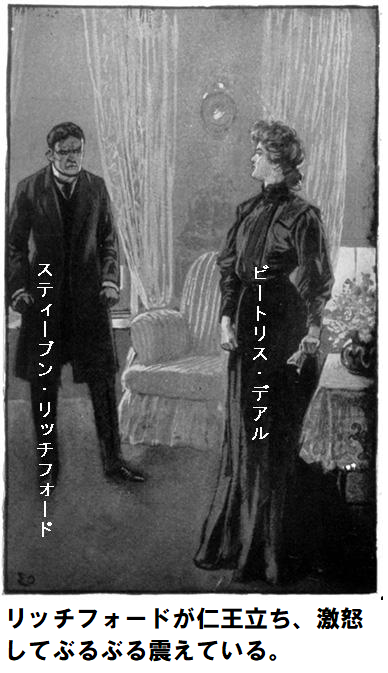
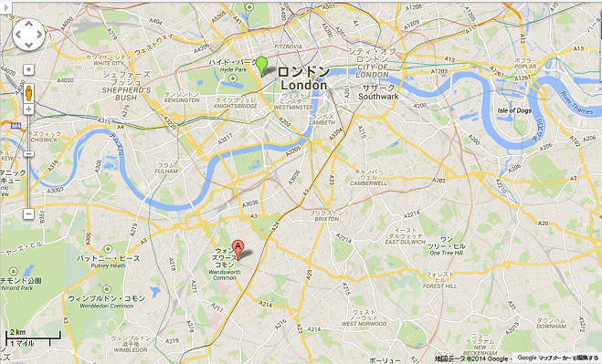
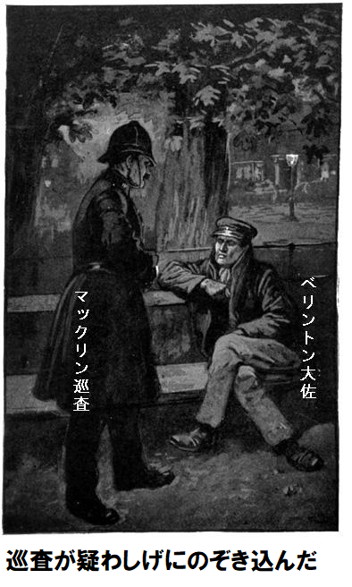
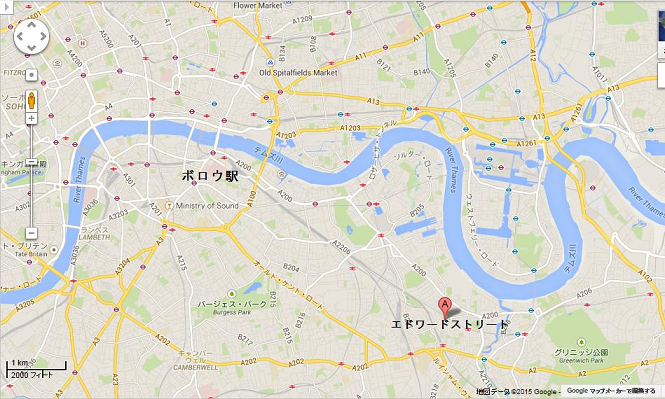
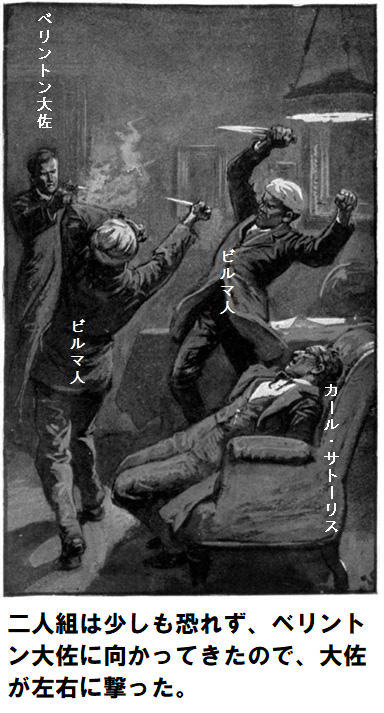
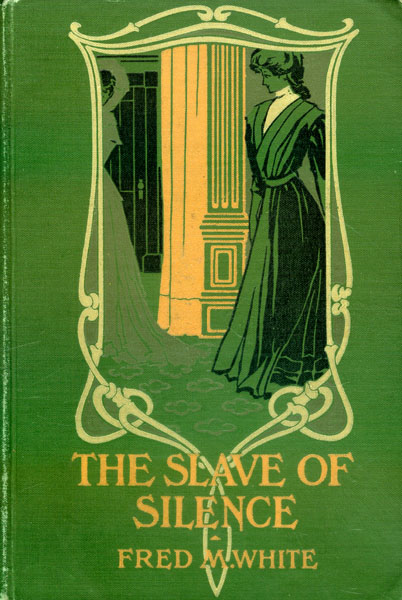

主な登場人物 備考
ビートリス 姓はデアル、二十二歳
ボン奴隷 メアリ・グレイ
チャールズ卿 ビートリスの父
リッチフォード ビートリスの結婚相手
マーク ビートリスの恋人
ベリントン大佐 東洋派遣の英国軍人
ラッシュブロウ 領主、デアル家の家長
令夫人 領主夫人、名はアデラ
サトーリス カール・グレイ
デラモリ伯爵夫人 コーラ
ガスタング大将 レギー
フィールド警部補 警視庁所属
アバッド藩王 英印混血の印度藩王
ランフォード 警部補の名
ベンウッド 東洋に詳しい元軍医
バイオレット アデラ・ベーン
フレミング 弁護士
アクトン 代書屋
第一章
娘は豪華な部屋に背を向け、うずく頭を冷たい窓ガラスに押し付けた。下の通りをちらっと見れば、二輪馬車が駆け抜け、中でかわいい女が笑い、
ここロイヤルパレスホテルの別室からは浮き浮き、華やかなさんざめきが聞こえる。世間は皆、幸せそうだが、今夜はおそらく、窓ガラスに額を押し付けた
どうやら、ビートリス・デアルの親族が、この華やかなホテルへ集まったようだ。娘は若く、健康で、友人から見ても美人だ。
でも、驚くほど青白い顔色は、真っ黒いドレスと強烈な対照をなし、そのドレスから真っ白な腕と首がすっと伸びるさまは、浅黒い地肌から突き出た象牙のようだった。色ものは何もつけておらず、ただ髪の毛が程よい赤色、瞳が深い青色で、じっと窓を見つめている。
顔は青白く、投げやりのようだが、よもや招待客に冷たい印象を与えるようなことはしないだろうけど、二十二歳という若さの割に、人生に不満を持ち、へとへとに疲れ切っていた。
うしろにテーブルがおかれ、大勢の招待客に夕食をふるまう。すべてが完璧で、大金をかけ、まことにロイヤルパレスホテルにふさわしい。同ホテルのボーイ長は億万長者以外、へりくだって頭など下げない。
テーブル飾りは赤に統一され、食卓電灯の笠も赤、至る所に赤いカーネーションが置いてある。趣向と、それに伴う出費はケチらなかった。
というのも、ビートリス・デアルがあした結婚するからだ。父のチャールズ卿がこの機会をたたえ、夕食を提供する。大金持ちしか、こんな豪勢なもてなしはできない。給仕が丁寧に尋ねた。
「お嬢様、完璧だと存じますが、何かございましたら……」
ビートリスがもの憂げに窓から振り返った。一瞬ふけて妙にやつれて見えた。それでも無理に笑顔を作り、赤い唇が少し開き、両まなこを、趣味のいいバカ高いこしらえに泳がせた。
「とてもすてきですよ。ええ、すべてそうです。すばらしいお仕事をなさいました。これ以上の満足はありません」
給仕はちょっといぶかったが、お辞儀して喜んで退出した。ビートリスが苦々しく軽蔑した。こんなむちゃな浪費は何のため、なぜこんなことをする。
この問いに答える立場の父親が、ぶらりと部屋にはいってきた。
とても若作りのチャールズ・デアル卿は笑顔が少年のようで、永遠の若さを保っているが、世間が認めるわけでなく、人生のしがらみや、下世話な局面にうまく対処できなかった。口さがない連中によれば、がめつく強欲、わがままな老悪党で、若いふりをして、粗野で冷酷な本性を隠しているという。
「ビートリス、不満か。テーブルの飾り付けは完璧だ。これ以上すばらしい出来栄えは見たことがない」
ビートリスがうんざりして言った。
「全部お支払いしなければなりません。お金は……」
「すぐはいる。間違いない。銀行にあるかどうか今は言えない。なければ友人のスティーブン・リッチフォードが貸してくれる。ビートリス、その黒いドレスはとても気に触るな。どういうつもりだ」
ビートリスが部屋を横切ると、向かいの鏡に、青白い顔が映った。小さなピンク色の爪が、鮮やかな桃色の指に、深く食い込んでいる。
「どうしていけない？ ふさわしくない？ 自分の誇りを捨てて、悲しんでいないとでも？ あした心底嫌いな男と結婚するのよ。お金の為に我が身を売るなんて。お父様の名声を保つためだ。もちろん教会の祝福を受けることは知っているし、並の女ならうらやむでしょうが、道端で恥をさらす乞食より全然良くない。それどころか、もっと悪い。だって乞食は愛の為に破滅したと言えるのだから。お父様、わたし、できない、やれない」
ビートリスが椅子にどさっと腰を下ろし、両手で顔を覆った。父のチャールズ卿の無邪気な童顔がにわかに豹変し、よこしまな光が目によぎった。この瞬間を知り合いが見たら、同じ人物かと間違うほどだったろう。父が厳しく言った。
「立て、窓の所へ一緒に来い。この部屋に何が見えるか」
「きんきら金の富の象徴だ。恥知らずの浪費だ、払えっこない。こんな高価な花……」
「すべて生きるためだぞ。小細工が必要なんだ。お前がスティーブン・リッチフォードと結婚するまで、そのままにして置く。いま外を見てみろ。向うの手すりに、突っ立ってる男が二人いるだろう。見えるか。そうだよ、私を監視している。三日もあとをつけている。もし今何か起こって、お前が突然病気になったり、あしたの挙式を延期するようなことにでもなったりすれば、私は翌日刑務所行きだ。最悪だと思わんか」
父の顔が、激しい怒りで青黒くなった。ビートリスのなま腕を強くぎゅっとつかんだが、痛みを感じなかった。精神的に追い込まれて、分からなかった。父が続けた。
「きっかけはあのシティ金融会社だ。ひと儲けするチャンスだった。その機会を目当てに、重役になった。同時に危険もあった。好機を狙ったが、失敗した。やみくもに賭けたが、またしても失敗だ。敵対者どもが、よからぬ動きをしよった。その為、私は監視されている。だが明日、社長に手紙を送り、潔白と後悔をしたため、五千ポンド小切手を同封し、売却全株式の買戻金と、手数料を納めれば、これまで以上の名声が得られる。盗賊の
ビートリスは怖くなかった。そんな感情はとっくに失せていた。ずらっと並んだ赤いカーネーションや、笠付き電灯や、豪勢な食器に、疲れ切った目を投げた。無関心と冷静さを捨て去り、感情を爆発させた。黙っちゃいない。
「ご親切なことですこと、お父様。こんなことは別に目新しいことじゃない。金のために大嫌いな男に身を売る女は、珍しくない。離婚裁判所には、そんな事例が一杯だ。お父様が名誉をつぶしたおかげで、娘の私がとばっちりを受けるなんて。口を挟まないで。お父様がどんな
父のチャールズ卿がほくそ笑んだ。危機は去った。また上機嫌になれそうだ。自分の娘を見て、女の感情が分かった。一旦めちゃめちゃ怒れば、おさまる。
なにしろスティーブン・リッチフォードは億万長者だし、一族が不正な方法で蓄財したって関係ない。最高首脳や高級クラブがスティーブン・リッチフォードを認めなくても、たいしたことじゃない、社交界が、ていよく色目を使い、足元にひれ伏すから。
ビートリスがつっけんどんに言った。
「もう心配しなくていい。悩みは吹っ飛んだ。二度と取り乱すようなことはしない。心は殺して葬った」
チャールズ卿が愉快に言った。
「その調子。気分はよくなったか。つい思い出したぞ、お前と、マーク・ベンモアのばかな関係を。ええ、どうなんだ」
ビートリスの青白い顔が、ちょっと紅潮した。小さな手が震えている。
「バカな関係じゃない。マーク以外、心を許したひとはいないし、ほかの誰にも関心はない。マークは生き馬の目を抜くシティより芸術が好きだったから、親に勘当されたが、もし勘当されなかったら、口出し出来なかったはずよ。私達は別れて、それで終わったと思っているでしょう。でも間違いよ。本当のことを教える。つい先週、ベニスにいるマークに手紙を書いて、私のところへ来るようにお願いした。でも返事はこなかった。もし私のところへ来たら全てを話して、結婚をお願いするつもりだった。手紙が届かなかったので、もう街で会うことはない。残念、もっと早く逃げ出せていたのに」
チャールズ卿はオペラを陽気に口ずさんで体の向きを変えた。これで挙式に、何の心配もない。例の手紙が届かなかったのは幸運の極みだ。今や、何も変更することはない、ビートリスが
チャールズ卿が穏やかにつぶやいた。
「馬鹿だよ、バカだ。女は感情的だなあ。お前、このカーネーションは根元にもっと葉を集めたら、映えると思わんか。ちょっとさびしくて、月並みだな。その方がよくないか」
あたかも何事もなかったかのように、チャールズ卿が深紅の花束を器用に修正した。再び、あっけらかんと気楽な童顔に戻った。隣の部屋から
「ラッシュブロウ令夫人だ。出迎えなくちゃ。頼むから、もうちょっと愛想よくしろよ。ここにいて、気を静めてろ」
チャールズ卿が最高の笑顔を作り、あたふた出て行った。ラッシュブロウ領主はデアル家の家長だ。あしたこの家長がビートリスを花婿に渡す手はずになっている。実際、ラッシュブロウ別邸から教会へ行き、披露宴はここロイヤルパレスホテルで行う。
ビートリスは顔をそっとぬぐった。一瞬立ち止まり、暖炉の火を見つめ、ぼうっとなった。次第に現実を取り戻し、なんとなく誰か部屋にいるのを感じた。不意に振り向くと、上背のある人物が向きをかえ、すごすご扉の方へ向かっていた。
「すみません、まちがえてごめんなさい」
とあやまる声は哀願するかのようだった。
「誰かお探しでしたら、この部屋は父が借りています。もしチャールズ・デアル卿に会いに来られたのでしたら、わたくしが……」
ビートリスは一瞬、銀食器を盗みに来た泥棒かと思ったが、哀愁を帯び、しわのない美しい顔をひと目見て、疑惑をすぐ打ち消した。間違いなくレディだ。
頭からつま先まで銀灰色のドレスに身を包み、帽子も似合っている。なんとなく、病院の看護婦か、田舎の貴夫人を思い起こさせた。由緒ある邸宅であれば、ロシア・ユダヤ系の金融業者や、成金は出入禁止だ。
「間違って曲がってしまいました。反対側扉の廊下に行きます。大ホテルは広いので、まごつきます。ではあなたがビートリス・デアルさんですね。噂はかねがね。よろしければお祝いを述べさせて……」
「いえいえ、どうかおっしゃらないで。もしお名前をうかがえれば、訪ね人を見つけるお助けが……」
女が扉のところで立ち止まり、首を上下に振った。低く、優しい声で言った。
「ちっともかまいません。ボン奴隷と呼んでください」
第二章
招待客が全員集まって、祝宴たけなわになった。おそらく誰も想像できまい。とても惨めで心痛の女がここにいる。
チャールズ卿が屈託なく陽気に招待客と談笑しているさまは、外の手すりでたむろする見張りを忘れたかのようだ。テーブルを観察して、給仕に
ビートリスは笑顔を絶やさず、感情を見事に隠した。豪華宴会に招待された女性の中には、デアル嬢をうらやましがるのもいたが、どうしてあんな質素で陰気なドレスを着ているのかと内心不思議がった。
同嬢の左側にスティーブン・リッチフォードが座っており、見るからに
従って、ビートリスは右側のベリントン大佐ともっぱら会話した。東洋から今しがた帰国した華麗なる軍人だ。
「ビートリスお嬢さん、これが独身最後のパーティーですね。思えば不思議なようですが、最後に会ったときは、まだあどけない子供だったのに、今は……」
「いまは不幸な女とおっしゃろうとなさったのでしょう。そうじゃございませんか」
「絶対そんな言葉は口にしませんよ。テーブルを見渡せば、少なくとも女性が四人、心の底から羨ましがっておられる。こんな状況で、社交界のどんな女性が惨めになりましょうや」
とベリントン大佐が反論した。
ビートリスがちょっと赤面して、神経質に食パンをつまんだ。ベリントン大佐の言葉は冗談もいいところだが、ビートリスは裏の意味が隠されていることを見逃さなかった。
改めて大佐が謝罪している。リッチフォードは反対側の女とスポーツの話に夢中になっているから、二人に邪魔が入る恐れはない。両者の目が一瞬合った。
「うらやましがる必要はないと思います。大佐、このような場で変なお願いがございます。妙なお願いでございます。みんなあなたが好きですし、信頼しています。わたくしも最初に会ってからずっと好きでしたし、信頼しております。私の味方になっていただけませんか。もし何か起こって、ひどく味方が欲しい時に、助けていただけませんか。妙は承知で……」
「全然妙じゃありませんよ。ヒトは幻を見るし、内気な私も常にそうです。おっしゃることはよくわかります。もし英国に居たら、馳せ参じましょう。しかし時間がとれないのです。長い休暇はすべて……」
こうささやいたベリントン大佐が、隣のリッチフォードをちらと見て、あご肉に嫌悪した。
「でも休暇で英国滞在中にお仕事はございませんでしょう」
「実はあるのです。探し人がいましてね、終わりそうにないのです。とても妙ですが、今晩まさにこのホテルで終わっていたはずでした。こんなにガヤガヤする場所では話せません。悲しい話ですから。こんな人に会ったことはありませんか。灰色の服を着たご婦人で、茶色の瞳、素敵な白髪……」
「あの人ですね、なんて奇遇でしょう。ええ、今晩、まさに、この部屋で」
ベリントン大佐の口から、ああという息がつまったような苦痛の声が出た。テーブルでしゃべり笑いこけている人々とは、隔絶している感があった。
「すごい。実は灰色服のご婦人を探して、このホテルまで追って来ましてね。たまたま今晩ここで夕食することになっていましたから。それでこの部屋で見たのですか」
「ええ。この部屋に間違っていらしたのです。明らかにこのホテルで迷っておられました。頭からつま先まで銀灰色をお召しになっていました。瞳と髪の色もまさにおっしゃるとおりでした。どちらさまと伺ったところ、ただボン奴隷とおっしゃって、行かれました」
ベリントン大佐は料理など上の空だ。顔にいつもより深い憂鬱の表情があった。しばらく間をおいて、再び口を開いた。
「ボン奴隷か。全くその通り、ぴったりです。まさに言い得て妙です。また会われたら、いや、もう会えそうにない。いつかお話しましょう。こんな騒がしい連中の前じゃないところで。悲しい話です。ビートリスお嬢さん、まさしくあなたを思い起こさせます」
ビートリスが笑って、赤面した。
「わたくしのが悲しいですって。なにが悲しいでしょうか」
「ここでは詳しく言えません。いいですか、マーク・ベンモアは古くからの友人ですし、父上も個人的に知っています。ローマで復活祭日に会ったばかりです。おっしゃるように、幸いみなさんが私を信用してくれます。ビートリスさん、もう手遅れですか」
ベリントン大佐が、だしぬけに、ぼそっと尋ねた。大佐のしなやかな指がビートリスの手をつかんだ。父のチャールズ卿は椅子にふんぞり返って談笑している。ドラマが進行中だなんて、誰も気に留めない。ビートリスが涙目になった。
「本当に良い味方を得て、とても安心しました」
と言いながら、食器に目を落とし、
「もうワインは要りませんよ。この給仕はどうして、ワインカードをわたくしの鼻先に持ってくるのですか」
ベリントン大佐が念押しした。
「では確実に手遅れなのですか」
「大佐、拒否できないのです。義務なのです。父をごらんなさい」
大佐がチャールズ卿の方をちらっと見た。右側のとてもかわいい女と、にやけている。どうやらこの准男爵はこっちに全く気が無いようだ。やさ腕で、一杯のビンテージワインをもてあそんでいる。大佐が軽蔑のまなざしを向けて言った。
「チャールズ卿と、どんな関係があるのですか」
「すべてに関係します。父は順調で幸せそうに見えるでしょう。でも決して知らないでしょう。さきほどは大違いでした。少しでも私が単独行動をしたら、父は不名誉なことになります」
ビートリスが大佐の目を見て、話を止めた。大佐の顔の表情から十分、いや十二分だ。
「よくわかりました。あなたはお金の人質なのですね。あなたの父上に栄光あれ。商人に信用され、
ビートリスは大佐の口調が、にわかに変わったので吹き出しそうになった。
黒眼のスイス人給仕が、またビートリスの席でお辞儀して、ワインはどうですかと勧めに来た。きれいなワインカードを持っている。ベリントン大佐が軍人らしく不快な表情を示すものかは、怖がって立ち去る様子はない。
「とても上ものでございます。七四番の赤ワインはどうでしょうか。お嬢さま、少しお目通し下さいませ」
なんとかかんとか理由をつけて、スイス人給仕がしつこく勧めて、ビートリスの手にワインカードを置いた。
見事なカードで、赤と金で印刷されており、七四番に鉛筆書きがあった。文字を見てビートリスの目が光った。文字数は少ないが重要だ。
『居間の向うの温室に、速やかに行け』
ベリントン大佐が言った。
「奴に文句を言わねば。ビートリスお嬢さん、ご気分は？」
「いいですよ、元気です。どうかお気づかいなさらないで。給仕は非難できません。メモを持って来ました。うまいやり方です。これを見てください」
ビートリスが鉛筆の手書きを見せた。大佐の鋭い頭脳が全てを一目で悟った。
「お嬢様に宛てたものですね。美しい筆跡だ。でも何か見覚えがあるような。前にどこかで見たのかなあ」
「おっしゃるとおりです。マーク・ベンモアの自筆ですね」
大佐がニヤリ。なべて軍人は突発事件が好きだ。ここで、とても面白いことを見ることになった。
ビートリスがせっかちに言った。
「一週間以上前にお手紙を送りました。そのお手紙を受け取っていれば、マークがここへ来てどんなことになるか、誰も分かりません。手紙を出した時は不名誉が忍び寄っていることなど全く知りませんでした。マークならすべてを見抜いたと思います。おそらく今着いたばかりでしょうし、今晩私に会えなかったら、手遅れになったでしょう。大佐、わたくし、すぐマークに会わなくては、会わなくては」
事はそんなに簡単じゃなかった。ビートリスはこう言うはめになった。
リッチフォードが、のそのそついて来るので、
「来なくていいです。誰とも話す気分じゃありません。あなたとも」
リッチフォードの無愛想な顔が紅潮し、こぶしをぎゅっと握った。ビートリスは婚約者に、不機嫌をごまかすことなど、朝飯前だ。一方のリッチフォードが心底願ったのは、自分を散々けいべつ、ののしった報いに、即刻苦しめ。
「わかった、俺は客間へ戻り、キミを待つ。実際、邪魔させない。女の頭痛のわけは分かっとる」
間違いなく、卑劣な嫌みがあったが、ベリントン大佐は何も言わなかった。リッチフォードはおそらくワインカードには気づかなかっただろうが、ともかく前記発言に意味があるとすれば、何らかの行動をほのめかしている。
ビートリスはひどく落ち込んだが、顔に感情を出さなかった。ゆっくりと進んで小さな温室へはいると、すぐスイス人給仕がついてきた。さきほどマーク・ベンモアのメモ紙を持って来た給仕だ。
「お嬢様はお具合が悪うございます。ひどい頭痛でございます。何かお持ちいたしましょうか。お水か、氷か、コーヒーか、何か」
ビートリスが今にも全部断りかけた時、給仕と目が合った。どうやら言葉の裏に意味が隠されているようだ。判断を変えた。
「コーヒーは要りません。お茶、それも濃いお茶を、ミルクや砂糖を入れずに持ってきてください」
と言った声は客間の招待客に聞かせる為だった。
給仕がお辞儀して退出した。ビートリスはあたかも
やがて再び目を開けると、給仕がはいって来て、必要なものを盆に持って来た。給仕は別人、上背があり、色白の男、銀食器を置いてお辞儀した。
「お茶でございます、お嬢様。おつぎしてよろしゅうございますか。気をつけて」
最後の言葉はまったくのささやきだった。ビートリスも口から出かかった叫びを止めて、ささやいた。
「マーク、マーク、いとしいマーク、本当にあなたなの」
長身の給仕が、ビートリスの震える指に手を置いて、
「そうだよ、お願いだから、遅すぎたと言わないでくれ」
第三章
傍観者の見るところ、お盆を持ったニセ給仕の態度に、何らおかしな所はなかった。ビートリスは頭が痛くて何も眼中にないかのように、上体を後ろにそらしていた。
実際はこの苦境をなんとか脱出しようと、知恵を絞っていた。どっちみち、このにわか給仕は長居できないし、少なくとも、疑り深いリッチフォードは不審を抱いたまま、晩餐会場へ戻ったはずだ。
ビートリスは頭を反らしたまま言った。
「来てくれてとても嬉しい。リッチフォードがつけてきます。どんな疑惑を持つかわかったものじゃありません。何か忘れたふりをして、ちょっと席をはずし、それからまた戻って来て」
マーク・ベンモアは深々とお辞儀して同意した。マークが回廊へ通じる扉を開けて温室を出た途端、リッチフォードが、のっそりはいってきた。不作法に訊いた。
「気分は良くなったか。けったいだな、女の頭痛ってやつは」
「お願いだから、あっちへ行って。なぜ来て、いじめるの。いま一番会いたくないのに。ここから追い出さないで。みんなの所へ戻って。ほっといて」
リッチフォードがぶすっとした表情で出て行った。ベリントン大佐が客間を横切って来たので、ビートリスの心臓は嬉しさで高鳴った。あの勇敢な軍人なら、きっと自分を助けてくれる。リッチフォードがゴネずに去ったのを見て、言いようもなく安堵した。
直ちに座席を変えて、自分の姿を見られずに、客間を見渡せるようにした。横の扉が開き、マーク・ベンモアが再びはいってきた。依然としてお盆を持っていたが、もう給仕じゃなかった。辺りをすばやく見渡し、ビートリスに近づき、椅子のそばにひざまずき、ささやいた。
「ビートリス、いとしいビートリス、遅すぎたかい？」
ビートリスは一瞬無言だった。ただただ不幸な運命を忘れたかった。いとしの男がそばにいる。男の腕がそっと腰に回った。女の頭が男の肩にしなだれた。かすかに不安な笑みを浮かべた女の唇に、マーク・ベンモアが激しくキスをした。
「どうして早く来てくれなかったの」
「ビートリス、出来なかったんだ。留守してたので手紙は見てない。ここに来たのは全くの偶然だ。遅過ぎたかい？」
「ええ、そのようです。一週間前だったら、結婚をお願いして、連れていってもらえたのに。でもいまそうしたら、父は破滅して、名誉を汚します」
マーク・ベンモアが両肩をすくめて、ちょっといらついた。
「チャールズ卿の言い分だ。いつもそんな当てつけがうまい。もちろん、きみの感情を利用したのさ、ビートリス」
「今回は違います。父は何かよからぬシティ金融に巻き込まれました。起訴されたという噂です。保釈金が私なのです。未来の夫が、結婚後父のしりぬぐいをしてくれます。今も私立探偵が父を見張っています。マーク、とても恐ろしい。もう一週間早く来てくれたら、あなたの為に冒険できたのに」
ベンモアが震えるビートリスを自分の胸にひしと抱いた。息をひそめて、こんなむごいいけにえなんて、絶対に許せない。腕の中で青ざめている女は、かつての
二人は一年前に明るく別れた。お互い手紙は出さないと決めた。将来を絶対信じていたからだ。マークは画家として名を上げようとしていたし、ビートリスも待っていた。それなのに、今晩が結婚式前夜で、運命はあまりにも厳しい。
「お父さんは放って、僕の所へ来なさい。今なら二人で快適に過ごせるから。一緒に暮らしてほしいとお願いするには収入が十分じゃないけど、少なくとも幸せになれる。僕の親しい友人のところへ行って、あした結婚許可証を手に入れよう。そうすれば、もう苦しむことはない」
ビートリスは未来に無上の幸せを感じて、両眼をつぶった。一瞬、その気になりかけた。しっかり者の善良で美男のマーク、そのマークが好きだ。だが、父の為に、約束してしまった。
「できません、父と約束しました。ええ、分かっています、最初に約束したのはあなたとです。しかし、父の名誉のためです。あなたの言うようにすれば、父は刑務所行きです。止める手段はありません。今晩、知ったばかりです」
ビートリスの声は低かったが、
「絶対にチャールズ卿は……。僕の意味がわかるよね」
ビートリスがきつく言った。
「父が嘘を言っていると？ 今回は違います。だまそうとする時はいつも分かります。マーク、責めないで」
マークは必死に感情を抑えた。自分からやみくもに激しい恋に落ちたけれど、ビートリス側に何か責任と理由があるようだ。
ビートリスは、やくざな父親の犠牲になって、もう一人の悪党を喜ばす羽目になってしまった。この悪党が、ビートリスの美貌と、魅力的な白い肉体をえげつに欲しがっているけど、ビートリスは、かたくなに距離をとって拒んでいる。
マークが考え込んで言った。
「とても難しそうだ、我々二人にとっては」
「ええ、いつも一番苦しむのは女です。どうしようもありません、マーク。最後まで行くしかない。もっと早く来てくれたら」
「ビートリス、最速で来たんだ。今日ここに泊まり、チャールズ卿と廊下が同じなので、今晩か明朝早く、お父さんに会って、新しい事実をお話しする。じきに
「絶対に変えないでしょう。父は常に自分を正当化するし、自分の損得に関わる判断を尊重します。でもどうやって知ったのですか」
「きみが困っているということかい？ 全く偶然知った。一日か二日前パリで、僕の絵が欲しいという裕福なアメリカ人に会っていた。夜一人になった時、劇場に芝居を見に行った。隣の椅子席に英国女性が二人いて、やがてきみの事を話し始めた。つい聞いてしまった。そのとき全部知った。ところで、背が高く、目は黒、白髪、全身に灰色の服をまとった初老の女性を知らないか」
ビートリスがびっくりした。まさしくボン奴隷の事を言っている。夕まぐれに会った灰色服の女が、そう自称した。
「ええ知っていますけど、正体は知りません。夕食が始まる前、たまたまここの食堂に来られました。最初、泥棒かと思いました。それにしてはお顔がよすぎて純真でした。どなたですかと伺ったら、ボン奴隷とおっしゃった。これって偶然の一致ですか、それとも何かもっと深い事情があるのですか。考えもつきません」
「きっと何か深い事情だろうよ。いずれにしても、この灰色服の女性はきみの幸せに興味があるってことだよ。だが、僕の事は絶対に知らない」
「それですぐいらしたのですか、マーク」
「すっ飛んできた。その劇場で夕食会の事を聞いたんだ。汽車がとても遅れたので、おそらく用意した計画は実行できない。次に難しかったのはきみと話をすることだった。運よく、物分かりのいい給仕に半ポンド金貨を渡してうまくいった。リッチフォードがきみのあとについて行った時、お盆一式を借りる羽目になり、更に半ポンドを支払った。そのとき見たのが旧友のベリントン大佐だ、助太刀に来てくれた。大佐に教えたのですか、ビートリス」
「ワインカードのメモを見せて、手書きを確認しました。マーク、わたくしここに長くおられません。今にも皆さんが客間に来られます。これが最後の密会になるに違いありません」
「ビートリス、そんなことにはさせないよ。きみのお父さんを説得して
おそらくマークはもっと喋っただろうが、向うの客間でドレスが
「おやすみ、ビートリス。気をしっかり持って。今からあす正午の間に何が起こるか誰も分からない。きみのお父さんに会ったあかつきには……」
再びキスして、マークは去って行った。
ビートリスは椅子にもたれ、思案した。すべてが突然で思いがけなかった。そうこうしているうちに周りに人々が集まり、世の中のままならぬ不誠実について、如才なく同意を求めてきた。
「気分がよくないのです。叔母が来たら自宅に帰ります。父がここにいて、ブリッジのお相手をします」
ビートリスはようやく叔母のラッシュブロウ令夫人と退去した。ほかの招待客もブリッジを終えて、パーティーはお開きになりつつあった。
マーク・ベンモアは自分の寝室に座り、煙草をふかしながら、チャールズ卿に会う機会を待っていた。もう夜は更け、招待客はとっくにそれぞれの部屋に戻った。マークは扉を開けたまま、廊下を見張っていた。
そのときちょっとびっくりしたのは、チャールズ卿の居間扉が開いて、灰色服を着た無口なボン奴隷が出てきたからだ。まさにさっき言った服を着て、すたすた歩いていくその顔は平静で穏やかだった。やがて廊下の端に着くと、階段をゆっくり下りて静かに消えた。
妙だなと思いつつ、チャールズ卿の部屋まで行って、扉の取手を回した。驚いたことに鍵がかかっている。
しばらく考え込んだ。そうしているうちに、頭が後ろに倒れ、眠ってしまった。心身良好、深い眠りだったので、目覚めた時は真っ昼間になっていた。ホテルは活気とざわめきに満ちている。えらいことしたと、時計を見た。十一時一〇分だった。
「前の晩に徹夜した為だ。いとしのビートリスは宙ぶらりんの状態に違いない。もしチャールズ卿が出発されていたら」
だがチャールズ卿は出発されていないと、係のボーイが請け負った。午前三時過ぎまで寝室へ戻らず、そのころ浮かれ騒いでいたので、当然朝は相当な頭痛になる。
「まだ時間はある。挙式は昼の十二時なので、それまでに準備なさるだろう」
マークは疑問を持たなかった。
だが時間は進み、十二時近くになり、チャールズ卿の係が不安な様子で廊下を降りてきた。寝室の扉をドンドンたたいたが、何の反応もなかった。
ある考えが突然マークを襲い、ひらめくと同時に恥じた。突っ立って、聞き耳を立てた。どこかで時計が正午を打つのが聞こえた。扉を軽く叩いている給仕に歩み寄った。
「何かやったらどうだ。ここでぼうっと突っ立って何になる。支配人か担当の誰でもいいから呼んで来い。扉を破れ」
頑丈なオーク材の扉に、マークが全力で体当たりした。ついに、蝶番が壊れた。
第四章
ビートリスは自分がひどく惨めなことに気づいて起きた。予想と違い一晩中ぐっすり寝た。まさに多くの死刑囚が執行前夜に熟睡するかのようだった。
気分良好、活力がみなぎり、まぶしい陽光が部屋に差し込み、万事に絶対服従が予想された。衣装台に花嫁のベールや長い
「おはようございます、お嬢様。素晴らしい朝でございます。心からお祝い申し上げます、晴れの日の花嫁は幸せになれます……」
メイドはビートリスの顔が真っ青で硬いのを見て、言葉を止めて、ほほ笑んだ。
ビートリスが尋ねた。
「うらやましいですか、どう？」
メイドが両手を上げ、唖然とした驚きを浮かべた。
「まさか幸せでない人はいませんよ、こんなかわいい服を着て、あんな宝石を身につけ、
ビートリスが弱々しく微笑んだ。
「勘違いしないで。もしもこの瞬間あなたと入れ替われたら、よろこんでそうする。あなた恋人いるでしょう、アデリン」
「はい、お店で働いています。いつか自分のお店を持つのが夢です、それから……」
「結婚するのでしょう。とても愛しているでしょうねえ。ですが、わたくしは……」
ビートリスは喋りすぎたと悟って、止めた。朝食は食べなかった。客間へ降りて、手紙を数通書いた。まだ一〇時になっていなかったので時間はたっぷりある。ラッシュブロウ令夫人は朝寝坊だが、ラッシュブロウ領主は自分で朝食をとり、とっくに終わっていた。
ビートリスが不機嫌に贈り物を鑑賞するはめになったのは、スティーブン・リッチフォードが書斎に来たときだった。何でもないような笑顔でやってきたが、両手が震え、両眼に恐怖があるのを見てとった。珍しく、酒を飲んでおらず、これはおかしい。
かつて列車内で、偽造犯が逮捕されるのを見たことがあり、とっさに犯人が立場を悟るや、まさしく今見た顔と同じであり、そんな男とまさに結婚しようとしている。
ビートリスが冷静に尋ねた。
「どうしたのですか。大きなショックを受けたかのようですね。脱獄囚みたい。ぞっとする」
リッチフォードは一瞬答えなかった。向かいの大きなベネチアン鏡に映った不機嫌な鉛色の自顔をじっと見ていた。いつも愛きょうのある方じゃないが、この時は全く
「ちょっと気が動転した。むごい交通事故を見た。子供が引き殺された」
この男は嘘をついている。作り話せざるを得ないのは自己防衛のため、本当のことを言いたくないからだ。他人の感情など全く理解しそうにない男、事実、人に対する思いやりなんてこれっぽっちもないのを過去に目撃した。
かつてポロの試合中、すぐ近くで致命的な事故があった。するとリッチフォードが煙草をふかしながら述べた感想は、バカな連中だ、あんなことをするなら、結果に甘んじるべきだ。
「嘘をついています。まるで何かに脅えているみたい。何か隠している。父に何かあったのですか」
とビートリスが冷静に訊いた。
リッチフォードが激しく動揺した。全ての自制心を使っても、今は冷静でいられない。リッチフォードがひどい皮肉交じりに言った。
「もちろん、キミの眼にはよく見えないさ。一たび女の考えが凝り固まったら、二度と追い出せない。父上は安全だ。上流階級の男には何事も起こらない。昨夜、お父さんの部屋で会ったけど、快調そのものだった。しかもブリッジで二百ポンド以上稼いだ。チャールズ卿は自分の面倒ぐらいみる」
ビートリスの顔色がぱっと赤らみ、それからまた青白くなった。ビートリスがぐっと抑えた願望は、父に何か起こって、今日の挙式を延期する重大な事件が起こらないか。
とてもあるまじき考えであり、恥にまみれた。しかしながら、そんな悲劇が起こった方が、もっと幸せになれることを知っていた。
「なぜ会いに来たのですか。そんなに時間がありません」
「分かってる。考えれば嬉しいじゃないか、やがて幸せな縁が結ばれた時、一緒にいる時間がたっぷりあるってことだ。まだキミに何も渡してなかったっけ。これを買ってきた」
リッチフォードが震える手で、ポケットから分厚い包みを取り出した。小汚い蓋を開けると、中からまばゆい光が飛び出た。古風な基台にあらゆる種類のダイヤモンドが並んでいる。今まで見た中で最高のダイヤだ。不安で、気が滅入っていたけども、驚きを抑える事が出来なかった。リッチフォードがニヤリと歯を見せた。
「どうだ、これで俺もキミに触る資格があろうって。女聖人もダイヤには逆らえまい。四万ポンドも払った。有名なロックマーティン家の宝石だ。手放さねばならなくなったので、絶好の機会を逃さなかった。どうだ」
「す、すてき、ど、どうもありがとう」
「そっけないな。ええ、たったそれだけか。キスの一つもいいだろう」
ビートリスが後ずさりした。一生涯、この男とはキスしたくないし、今まで一回もしてない。我を通し、絶対にそうさせない。
ビートリスがつっけんどんに言った。
「そういうことじゃないでしょう。ずいぶん太っ腹ですこと。でもお触りとは全く別物です。そんなことは承知の上で、取引したでしょう。あの時私が言ったのは、あなたのお世話はしないこと、自分を売るのは、父の名誉を守るため。別に目新しいことじゃないし、言うのも変だが、むかしはそんな結婚もうまく行ったのでしょう。でも私達は違う。わたくしが贈るべきすべての愛は、ずっと前から別なお方に捧げて来ました。これから一生懸命あなたの生活を快適にしてあげますし、主婦業を勉強します。でもそれ以上はありません」
リッチフォードが下品な悪態をついて、ぷいと横を向いた。冷たくさげすまれ、これ以上ないほどの冷淡さを見せつけられた。でも今に仕返しをしてやる。時刻が迫ってきたら、いずれビートリスは服従か、逃亡せざるをえないが、リッチフォードはどっちでも構わない。それこそが唯一の慰めであった。
「よろしい、よく分かった。また会おう、では」
それ以上言わず、帽子とステッキをひっつかんで、ぷいと出て行った。ビートリスはまるで宝石を毒蛇のように身から離した。おそらく残りの人生はダイヤを見るのも嫌だろう。
今や時間が迫り、わずか一時間となり、そのあと挙式が行われる。ラッシュブロウ令夫人がはいって来て、ダイヤに見惚れた。令夫人の意見によれば、ビートリスはロンドン一幸せな女性だ。
令夫人なんて、夫にちやほやされるだけの愛玩物に過ぎないし、心などない。こんなダイヤを与える男を嫌いになるなんて、想像すらできなかった。令夫人がわけ知り顔にのたまった。
「歳を重ねて賢くなりなさい。どうしてわたくし、もっと早くリッチフォードに会わなかったのかしら」
ビートリスもその言葉には全く同感だ。のろのろとメイドに身を任せた。式次第に全然関心がなかった。外観がつらそうでも、嬉しそうでも、どうでもよかった。でも本来の美貌は失わなかった。身につけたダイヤも、真っ青な顔を隠そうにも、隠しきれなかった。メイドのアデリンが懇願した。
「お嬢さま、もう少しほほ紅を、ほんのりお付けください。お顔が雪のようで、お口が灰のようでございます。うまく塗ってさしあげますから……」
「誰も気づかないでしょう。絶対、アデリン。やはり、化粧はしません」
外の大時計が十一時四十五分を打っている。すでに馬車が出口に待っていた。だがチャールズ卿の姿が無い。たぶん教会で合流するのだろう。花嫁を新郎に渡すのは、一家の長たる領主であり、父じゃないからだ。
ラッシュブロウ領主はおろしたての礼服にちょっとまごつきながら、書斎で煙草を吸っていた。野外派であり、妻がいつも誘う社交界は苦手だった。領主が言った。
「遅れないように。いつも時間厳守がよろしい。なるほどきみの父上はまだ来ていないが、我々と一緒に教会へ行くと約束した」
ビートリスが静かに言った。
「父は今まで間にあったためしがありません。待つ必要はありません」
憂鬱な表情が消え、冷静で穏やかだった。もし気分を尋ねられたら、ひどい葛藤は消えたというに違いない。
ラッシュブロウ領主が口を挟んだ。
「メモを置いとくから、わかるだろう。きみのお父さんは馬車で教会へ来る。ビートリス、準備ができたら出かけるよ」
恐ろしいほど冷静に、ビートリスは準備万端だと答えた。見物の小集団が花嫁の
まるで死にゆく女性、それも体内に致死性肺結核菌を抱え、わけも分からぬ理由で外国へ行けと命ぜられ、二度と英国を拝めないかのよう。あたかも眠っているかのようで、すべてが夢の中で進行しているかのようだった。ラッシュブロウ領主が叫んだ。
「さあついたよ。女性が大勢だ。すごい花束だな。たかが結婚にこんなに大騒ぎとは面くらう。さあ行こう」
最高の言葉を使えば、まさしく上流階級の結婚式であり、教会は
というのも花嫁の父がまだ到着しておらず、すこし待とうかという気分があったからだ。ただラッシュブロウ領主が反発した。
「進めよう。デアルはおそらく半時間遅れる。誰も分からん。私は二時半にタッタソルで大切な約束がある」
ビートリスは反対しなかった。おそらくその瞬間は何にも逆らわなかっただろう。夢を見ているようで、やがて自分から祭壇にひざまずき、牧師が何を言っているか、全く理解できなかった。
そのうち誰かが、左手をもぞもぞまさぐり、花嫁以上に神経質な誰かが、指に純金の指輪をはめている。教会のうしろ側で、誰かが騒ぎだした。
司宰の牧師がむっとして頭を上げた。訓戒を除き、儀式は実質的に終わっていた。警官がどこからともなく現れて、侵入者をいさめている。しばらく大っぴらに口論しているかのようだった。
「いいか、上がらねばならん。生死の問題だ」
こう叫ぶその声は、瞬時にマーク・ベンモアの声だとビートリスが分かった。
ビートリスがぼうっと見たのは、くだらない花束、礼服、それに上流社会の
「挙式は中止だ。言語道断、恐ろしすぎる」
絶え絶えに言う真っ青な顔には、言いようのない恐怖があった。
ビートリスが立ち上がった。何かの悲劇か、新郎のぞっとする顔に災難の相が現れている。しかしながら、卑しく勝ち誇って、ほっとした面構えだ。ビートリスが尋ねた。
「何があったか言って。今なら何でも耐えられます」
「きみの父上だ。扉をこじあけたら、チャールズ卿がベッドで死んでいた。発見時、死後数時間、経っていた」
第五章
マーク・ベンモアが三回も繰り返すと、やがてみんな事の重大さが分かったようだ。大かたの招待客にとっても、衝撃は余りにも大きく、突然だった。
もちろん、やんごとなき方々は花嫁の感情など全く分からないし、大部分が特権階級の宴会客だ。挙式後を楽しみに、夜の劇場を貸し切り、引き続き舞踏会に招待されていた。時節柄、いきな計らいでもあった。
それなのにいま、死が割り込み、何もかも一発で吹き飛ばされた。みんな顔を見合わせ、何が起こったか理解できないかのようだ。この奇妙な不安は、
気の利く
その時、まるで満場一致のように、みなの目が花嫁に釘づけになった。ビートリスがきびすを返し、祭壇の階段を下りて、マークの方へ行くと、マークも抵抗なく歩み寄った。
ビートリスはそこで立ち止まり、片手を額に当て、あたかも全てを理解しようとするかのよう。真っ青だが、平然としていた。
「父が死んだと言いましたか」
「残念ながらそうです。数時間前です。急いで駆けつけたのは、間に合うように……」
とマークが口ごもった。
言葉を止めた。この場にそぐわない恐ろしいことを言おうとしていることに気づいた。ほんの一瞬、ビートリスと二人っきりじゃないということを忘れていた。ビートリスの大きく見開いた
マークが言おうとしたのは、挙式を止めるため間に合うよう駆けつけたということ。ビートリスもそれを察知した。少し赤面している。不謹慎だが、同じことをビートリスも自問していた。
父が死んだという衝撃はまだ胸にグサリと来ておらず、なお自分のことを考える余裕があった。本当にスティーブン・リッチフォードと結婚したのか。挙式は法的に成立したのか。こんな考えは途方もないことだが、そこが肝心だ。ビートリスの両目がかすみ、心臓が痛いほど早まった。
「何か行動すべきじゃないですか」
とマーク。
ビートリスはこの問いかけに茫然自失から我に返った。すぐ行動にとりかかった。あたかも冷水をぶっかけられたようだった。
「ええ、ここに突っ立ってはいられません。マーク、すぐホテルに送ってちょうだい」
妙な場面が奇妙に進行した。新郎が祭壇にぼんやり立ち、手袋をいらいらいじる一方、美しい花嫁衣装を全身にまとったビートリスは、マークの腕をしっかとつかみ、通路をすたすた歩いている。
すべてが終わり、妙な組み合わせの二人が消えたあと、集まった人々が驚きから我に返った。リッチフォードが叫んだ。
「戻ってこい、俺の立場……」
リッチフォードが玄関に飛び出すとっくの先、人妻とマークは二輪馬車に乗り込み、ロイヤルパレスホテルに向かっていた。
それまでに噂がぱっと広まったので、人々が立ち止まり、ツイード服の男をじろじろ見たり、車上の花嫁姿を眺めたり。車上の二人にとっては、少しも異常じゃない。
「結局、父に会えたのですか」
とビートリスが尋ねた。
「いや、そうしようとしたけどね、待つ羽目になった。遅くまで戻られないので、僕は寝てしまった。けさ十一時過ぎに起きた時、チャールズ卿が部屋から出てこないという。起こした方がいいと進言した。さもないと式に遅れるから。誰も起こせなかったから、扉をこじ開けた。そしたら亡くなられていた」
ビートリスは上の空で聞いていた。涙の気配すらない。今までとてもひどい目に会っていたので、泣けなかった。自由の身なのか、そうじゃないのかという恐ろしい疑問が、心から離れなかった。でも、とても異常なようだ。
「父は就寝中に亡くなったのですか」
「わからない。診断した医者の口が堅くて。寝室には誰も入った形跡がない。隣の居間の鍵はかかっていなかった。昨夜、灰色服のレディが出てくるのを見たけれど」
「灰色服のレディですって。マーク、なんて奇遇なのでしょう。パリの劇場で隣にいた人と同じってことですか」
「ああ、そうだ。同じ人だった。これはきみ以外、誰にも話していない。こんなことを言っても、どうしようもないからね」
ビートリスが意味ありげにうなずいた。灰色服のレディ、つまりだんまり屋が何か悪いことをしたとは考えられない。それにしても何であの寡黙な女性が自分の人生に関わるのか、妙だ。
きっと父のチャールズ卿の知り合いに違いない、さもなきゃ、わざわざ居間に行かない。まだホテル内にいるなら、探し出そうと決心した。何か変な秘密がある、突き止めねば。真っ先にそう心に秘めながら、二輪馬車を降りて、物見高い召使いたちの間を抜け、大広間へはいった。
晴れの特別室は既に祝宴客の準備が整っていた。晩餐会場にはご馳走が並んでいる。真っ赤なバラがひときわ輝き、部屋に暖かい雰囲気を出している。陽光がステンドグラスを通して差し込み、銀器やグラスや、赤ワインやシャンパンの金箔を照らしていた。
テーブル中央に大きな白い塔が立っているのを、ビートリスはぼんやりと自分のウェディングケーキだと悟った。ケーキを見て、身震いした。早く暗くならないかと待ち望んだのは、乳白色の婚礼衣装と、ダイヤモンドを見られたくなかったからだ。
いま、ここはとても静かだ。あまりにもむき出しで、ひとけが無い分、ビートリスはほとほと嫌になった。招待客はいないし、来そうにない。おせっかいな支配人が花嫁に何か言っているが、頭にはいらないようだ。マークが気づいて言った。
「マリウス氏が、何か用はないかと聞いています」
「ご親切にどうも。お医者様に会いたいですが。まだここにいると思いますけど。すぐ合わせてください」
医者はまだ退去していなかった。マークがポートワインと、凝ったサンドイッチを小皿に持って来て、ビートリスに勧めた。驚いた事に、おなかがすいている。朝食をとってなかった。危機が去ったいま、正常な食欲が戻った。長い間もがき苦しんだ心労も消えた。
医者が軽くもみ手をしながら入ってきた。不幸な出来事に弔意を表し、呼ばれた時チャールズ卿は既に手遅れで、確実に死後数時間たっていたという。
「確実にそうだと言い切れますか」
とビートリス。
「確実ですな。経験から言えます。チャールズ卿は死後硬直でした。扉を破った時、死後四時間ですな」
と医者のアンドルーが言った。
ほんの一瞬、医者が言い淀み、気安い態度が消えた。
「チャールズ卿の家庭医に会ってから、はっきりさせましょう。自然死に疑いはなく、今のところそれに反する原因は少なくとも見当たりませんな。実際に疑惑があれば、当然検死になります。しかしそれは必要ないと思いますよ」
なんとなくビートリスは不安になった。この医者が何も隠していないなら、きっぱり断定するし、あんなことは言わない。
「よろしければ、父を見たいのですが」
医者が寝室へ先導し、ビートリスの背後で扉をそっと閉めた。階段を降りる時、医者の顔色が少し深刻で不安げだ。
医者が大広間でマークにこう言った。
「君は家族の知り合いのようだな。本件は率直に言って、好ましくない兆しがある。デアル嬢の気持ちを苦しめるつもりはないが、すぐに家庭医に会わねばならない。君は知らんかね」
マークが知っていたのでその情報を教えると、アンドルー医師は深刻に考え込んだまま飛び出して行った。
一方のビートリスは父の亡き骸を前に一人茫然としていた。遺体は一部しか服を着ておらず、突然の病気か発作に襲われたかのように横たわっていた。整った童顔はそのままで、唇はほほ笑んでいるが、顔面に苦しみの表情があった。チャールズ卿の死にざまは生前のまま、つまり死ぬまで派手で、軽率で、気楽だった。
化粧台には飾りボタンとネクタイがきちんと置かれ、その傍らに、手紙が束になっており、明らかに最近受け取ったものだ。ペンナイフで丁寧に開封されているから、読んだことは間違いない。
今になって、ビートリスの眼に涙があふれた。というのも父が優しかった昔を思い出していたからだ。やがて財産を浪費して、シティで取り戻そうとするのだが、幸せな時代が懐かしかった。
気になるようなものは何もない。ただ、真っ赤な絨毯の上に、目立つように電報らしきものが落ちていた。半分に折り畳まれているが、間違いなく電報用紙だ。ここに不審があるとすれば、多分この電報が手掛かりとなろう。ビートリスが紙を拾い、手のひらに広げた。読んで、不可解な顔をした。ぱっとひらめいた。紙をしっかと握り締め、つぶやいた。
「リッチフォードは知っていたんだ。日付がある。だからあの卑怯者はずっと知っていたにちがいない」
ビートリスは父の穏やかな死に顔をちらと見て、我に返った。そそくさと書類を胴着に差し込み、静かに部屋を離れた。
ホテルに入ってからいくらか経過したが、まだ夫なる男は戻って来なかった。変だなと思いつつ、何も言わなかった。花嫁衣装のまま突っ立っているのは何か、むかむかする心地だった。
「どこか部屋で着替えたい。父の遺体が二階に安置されている時に、こんな恰好で歩きまわるのはおぞましい。マーク、私の侍女がどこか近くにいます。申しわけないですが、侍女を探し、ラッシュブロウ令夫人のところへ行かせて、地味な黒服を持って来させてください。わたくしは寝室でこの服を脱ぎます。花嫁衣装を触るだけでもたまらなく嫌です」
ビートリスの侍女がやっと見つかり、ラッシュブロウ令夫人のところへ急行させた。
ビートリスが別室へ入った直後、スティーブン・リッチフォードが到着した。顔面蒼白、不安そう、そのうえ不機嫌で、特にマークに対して仏頂面で憎悪を示した。マークとビートリスのむかしの関係を知っていた。
「キミ、こんな方法で妻を連れ出して、
どうやらどこかで酒を飲んで来たようだ。これを世間では奴の欠点と言わない。
「着替えに行きましたよ。リッチフォードさん、このたびはご愁傷さまでした」
リッチフォードが関係ないという風に両肩をすぼめた。片手がかすかにふるえている。
「チャールズ卿もいい歳だった。自分の健康にたいして気を使っていなかった。実際、いつもむちゃしていた。しかし医者が死因を疑っていないかぎり……」
「全然そうは思えませんけど。どうかしましたか」
とマークが意味ありげに訊いた。
「何でもない、何でもない。神経痛がひどく痛むのでな」
こうリッチフォードが口ごもった。
第六章
やがてビートリスが部屋から地味な黒服で降りてきた。手には、遺体の化粧台にあった電報はもちろん、手紙も持っていた。
この頃になると、大広間に人数が増し、ベリントン大佐も来た。スティーブン・リッチフォードはどこかにずらかった。態度がそわそわ、おたおたしているのをマークは見逃さなかった。
ベリントン大佐が言った。
「皆さんには席をはずしてもらいましょう。とても痛ましいですから。それにもっと状況が悪くなる。アンドルー先生から電話があった。チャールズ卿のかかりつけ医と会ったところ、検死と決まったそうです。私には不審な点は分からないが、そういうことです」
ビートリスが冷静に言った。
「別に驚きません。父の部屋で書類を見つけました。不可解なメモでした。日付が示すようにゆうべ、このホテルで、備え付けの紙に書かれています。手渡しされたことが封筒でわかります。ごらんなさい」
ベリントン大佐が封筒に手を差し伸べた。達筆の手書きを見て、ちょっと驚いた。きっと何か良くないことだなとマークが感づいた。大佐は勇敢な男と自任しているのに、ビートリスをいぶかしげに、ちら見しながら指を震わせて、やおら封筒から手紙を引っ張り出したからだ。
「ええ、大佐に読んでもらいたいのです。そのためわざわざ下に持って来ました」
とビートリス。
「短いようですね。宛先や署名が無いから、一般書類かもしれません」
とベリントン大佐。
ビートリスが冷静に言った。
「封筒に父の名前だけが、たまたま書いてありました。どうか、声に出して読んでください」
大佐が読み上げた。わずか二〜三行だった。内容は、この手紙の受取人に直ちに会うこと、邪魔しても無駄だし、させないとのこと。それ以上書いてない。恐喝でもないし、怒りでもなく、そんな感情の文字は何もなかった。
しかし、この簡単な数行には多くの謎がある。ビートリスに手紙を戻す際、大佐は気が重そうで、震えているようだった。マークが言った。
「この手紙の主を探し出すのが我々の務めです。昨晩このホテルのこの部屋でおそらく誰かが書いた。ホテルに泊まった人にしか書けない。そうであれば、書き手の名前は簡単に突き止められる」
「どうやればできますか。こんな大きなホテルは大勢の客が絶えず出入り……」
とベリントン大佐がとても気弱に言った。
マークが説明を続けた。
「ここには厳格な決まりがあります。素泊まりでも皆、宿泊名簿に記帳しなければなりません。この手紙と署名を比べることができます。この特徴ある肉筆に似た署名が無ければ難しいでしょうが、逆にあった場合は……」
マークが意味深に間を置いた。大佐がひどく動揺している。ビートリスは悲嘆にくれ、後悔しているにもかかわらず、大佐の動揺を見逃さなかった。
「マーク、下の受付へ行ってすぐ調べなさい」
マークが素直に降りて行った。
大佐は突っ立って、一瞬傍観していたが、ビートリスの方へ来て、手をそっと置いて、低い声でこう言った。
「いいですか、こんなことをしても誰の為にもなりません。大間違いしない限り、書き手を知っています。お父さんとの関係や、秘密は知りようがありませんが、手紙を書いた女性は……」
あっ、とビートリスがすぐにひらめいて、
「灰色服のご婦人ですね」
「その通りです。あなたの指摘した女性がまさに灰色服のご婦人と呼ばれる人です。あの筆跡を見た時、衝撃を受けました。秘密にしていただけでなく、長い間、あの灰色服の婦人を探していたのです。チャールズ卿と接点があるなんて全然思わなかったし、昨夜このホテルにいるとは夢にも思いませんでした。この謎がどうあれ、たとえここで殺人があったとしても、あの灰色服のご婦人は全くの潔白です。これ以上言わせないでください、口が裂けても言えません」
ビートリスが同情してうなずいた。そばにいる厳粛で勇敢な軍人がひどく動揺している。実際、こんなに感情的になるとは思わなかった。
「お二人とも信用してします。たぶん灰色服のご婦人は父の生前に最後に会った人でしょう。恐ろしい知らせを教えたのかもしれません。そのせいでショックを受けて死んだのかもしれません。もう一人、事情を知っている人が……」
「どういうことですか」
とベリントン大佐。
「何でもありません、喋りすぎました。全くわたくしごとですし、おそらく父の死とは関係ないでしょう。ああ、マークがあと五分早く来ていたら」
ベリントン大佐がビートリスの心情を確実に読みとって、静かに言った。
「かわいそうに、ちょっとした瞬間に、なんて人生は左右されるのでしょう。でも……」
「そうです、疑問があります。ベリントン大佐、今も分からないのです。わたくしスティーブン・リッチフォードと結婚したのですか、それともしていないのですか」
ビートリスが熱くささやいた。大広間は常に人が出入りし、もうチャールズ卿の死など忘れ去られている。
「私には言えませんな。世事にうといですから。見たところ、結婚式は終わって、指輪もはめていますから……」
ビートリスが指にはまった金の指輪をいじりながら言った。
「結婚したとお考えですね。いまから確かめます。式は完全に終わっていません、訓戒もないし、戸籍簿に署名していません。自由になりたければ自由の身です。今日確かめたあかつきには……」
またしてもビートリスが中断したのは、喋りすぎたと悟ったからだ。顔に安堵の表情を浮かべたのは、マークが近づいてきたのを見た時だ。やきもきして
「どう、何か、何か収穫がありましたか」
「ほんの一部だが成功した。宿泊名簿で、ある女性客の署名と筆跡が完全に一致した。きのう来たことが、署名の反対側に書いてあった。メイドも連れず、わずかな手荷物で、ビーコン・ライト夫人と名乗ってる」
とマーク。
ビートリスがオウム返しに言った。
「ビーコン・ライトですって。ペンネームみたい、女流作家が名乗る偽名です。余りに変過ぎて本名じゃない。確かにその女性が父にあの手紙を書いたのですか」
「間違いないよ。筆跡が全く同じだ。ビーコン・ライト夫人は昨夜、赤の広間で食事して、泊まったようだ。早々と朝食をとり、ホテルの支払いをして、出発した。フロント係によれば、行先は分からないそうだが、小さな荷物を二輪馬車に乗せて、いの一番にピーター・ロビンソン家へ向かったとか。以上で全てだ」
差し当たりそれ以上情報はなく、ほとんどやることもなかった。
やがて、警察臭をさせた背の高い堅物男がやって来て、チャールズ卿の特別室を見せてくれと言ってきた。男の話によれば、死亡した准男爵のかかりつけ医が本署に来て、検死の要請をしたそうで、明日一〇時に決まったとのこと。
そういうことだから、特別室を封鎖して、警察の封印を押すという。みなに厄介をかけ、デアル嬢に迷惑をかけることを、警部補が心から詫びたが、ビートリス・デアルは警察の仕事だと割り切った。
そのときスティーブン・リッチフォールドが現れた。ビートリスは混乱してぼうっとなっていたが、リッチフォードが酒を飲んでいることに気づかざるを得なかった。ことがことだけに、一層目立った。
リッチフォードが吠えた。
「しかし、なんでこんな大騒ぎをするんだ。検死の必要はない。アズウィン医師が最近たびたび俺に言ってたぞ、チャールズ卿は心臓にずいぶん負担をかけ過ぎるからやばいと。検死なんて止めろ」
警部補が丁寧に言った。
「とても申しわけないですが、既に個人の手を離れました。アズウィン医師とアンドルー医師のお二人が検死を申し渡して、我々に通告しましたから、いま変更と言われても、警部が許可するか分かりません」
リッチフォードは今にも感情を爆発させそうだったが、ぐっと抑えた。なれなれしくビートリスの腕に片手を置いた。敵の指が震えているのを感じた。リッチフォードが仏頂面で言った。
「わかった、そういう決定なら、これ以上言わない。一日中、ここに突っ立っていてもしょうがない。ビートリス、キミに言いたいことがある」
「いいわよ。わたくしも言い分があります。わたくしの居間へ行きましょう。ベリントン大佐、このホテルから行かないでください。またお力をお借りするかもしれませんので」
リッチフォードのきつい口元がピクピク震えた。しかし何も言わなかった。ビートリスと二人っきりになり、居間の扉を閉めるまで、一言もしゃべらなかった。ビートリスに椅子をすすめた。しかしビートリスは無視した。
「とても扱いにくいなあ、俺の妻は……」
「要点が早くてありがたい。あなたの妻ですって。あなたの妻ではありません。式は完全に終わってないし、戸籍簿に署名もしていませんから。わたくしの気持ちはずっとご存知でしょう。いままで隠そうとしたことなど一切ありません。もし父が死んだと知っていたら、いや教会へ行く途中に死んだら、絶対にスティーブン・リッチフォード夫人なんかになっていません。父の名誉を救うために、いけにえに同意した。父は何の連絡もなく亡くなりました。知ってさえいたら、知ってさえいたら」
つぶやき同然ながら、リッチフォードの胸にぐさりと刺さり、どんな軽蔑や嘲笑もかなわないほどだった。いかに嫌ってさげすんでいるか、当人に知らしめた。
「誰も知らなかった、可能性もなかったし」
とリッチフォードがせせら笑った。
ビートリスがリッチフォードに詰め寄り、ほほを怒りで染め、両目をメラメラ光らせ、叫んだ。
「うそだ、ひきょうなうそだ。父の遺体を見た男が一人いる。反論できない方法で、証明してやる。父の死後、一人の男が部屋に入ってきた。男は父が横たわっているのを見て、誰にも通報せず、そっと抜け出した。あなたは冷笑してこう言うかもしれない、そんなことは不可能だ、そんなことをしても該当者にとっては何も得るものが無い。でも前に言った通り、証明してみせます。わたくしの手元にある電報を見てちょうだい。今日の朝一〇時前に、宛名の人物へ送られている。明らかに株式取引に関係しています。住所ははっきりしている。電報の配達時間も明瞭だ。これを父の遺体のそばで見つけた。父の部屋でこの電報を落とす可能性のあるひとは、宛先の人物にほかなりません。だからこの人は父の死を知っていた。でも、なんの通報もしなかった。なぜ？」
「とうぜん、もちろん、えーと、わけは説明できる……」
とリッチフォードが口ごもった。
「いいえ。電報はあなた宛てです。父を訪ねて来たのはあなたです。父が亡くなったのを知って、うろたえて電報を落とした。そのときこう考えた、もし結婚式を延期したら、二度と挙式できない、それに嫌われていることも知っていた。扉に鍵をかけて、通報せず、結婚式を進める決心をした。これで、うろたえている説明がつくし、酒を飲んだ理由も分かる。卑怯な悪党だ。反論できますか」
リッチフォードが不機嫌に尋ねた。
「なにをするつもりだ」
「いますぐわたくしを放さないと、神に誓って、真相をぶちまけます」
第七章
リッチフォードが仁王立ち、激怒してぶるぶる震えている。ビートリスに全てを感づかれたという漠然とした恐怖から逃れられなかった。

一方のビートリスはこの悪魔のしかめっ面を見るにつけ、鳥肌が立った。この男といつも一緒にいて同居なんて、到底できそうにない。
父を亡くし、将来は真っ暗で絶望的だが、いま活力と勇気を感じ、いままではずっと別人だったような気がする。同時に希望も湧き、若さと元気とが相まって、気分はすっきりだ。
この男と生活する必要はないし、あらゆる言い訳をして、同居なんかしない。差し当たり、挙式の可否はどうでもいい。おそらく法律上からはこの男の妻かもしれないし、同居を強いられるかもしれない。しかしいま、手元に武器があるし、使い方も知っている。
リッチフォードがすごんだ。
「その電報をよこせ、すぐ渡せ」
明らかに威嚇する態度で前進してきた。もし暴力で目的が得られるなら、おそらく止めないだろう。でも、ビートリスはひるまなかった。
「そんなことはさせない。体よく殴ってやる、そんな目つきだ。力づくで、電報は奪われるかもしれないが、警告しておく。抵抗なしに渡さない。ホテル中に響く大声を出してやる。あなたとは行かないし、いますぐ別れる。ぜんぜんこわくない」
その刹那、腕力をふるうかのようだった。リッチフォードが、ののしると同時にビートリスの手首をつかんで、手元へぐっと引き寄せた。顔面に一発食らわせれば、ビートリスなど足元に倒れて、貴重な電報を楽々奪えたかもしれない。だがいやしくも、自分の感情を長いこと抑えてきたリッチフォードだ、ぐっとこらえた。唇に造り笑いをうかべて言った。
「子供みたいに痴話喧嘩するのは止めよう。よく見破ったな。けさキミのお父さんのところへ行ったよ。会わざるを得ない緊急理由があった。純粋に仕事がらみだから、いま内容に深入りしない。扉に鍵がかっていたのに、俺が部屋に入れたわけを説明しよう。キミと結婚して、家を構える前に、この特別室を所有していたのさ」
「お話しは以上ですべてですか」
とビートリスが冷静に訊いた。
「ああ、そういうことだ。とにかくこの特別室は明け渡していないから、鍵はまだ持っている。その鍵でキミのお父さんに会いに行って、誰にも気づかれなかった。その電報を見せるつもりだったが、キミの手に渡った。チャールズ卿が死んでいるのを見た時、驚いた。うろたえて電報を落として、気づかなかった。ここまで、納得したか」
「納得しました。執念深いやら、ずる賢いやらには脱帽します。一瞬で秘策を考えつくなんて。もし通報していたら、数分で真相が知れ渡ったはずです。通報すれば、結婚はありえない。そこで賭けに打って出た。運が勇者に味方するのはいつものこと。あと戻りできないところまで何事も起こらず、挙式した。でもあなたが計算できなかったことが一つあります。もはや、父が駆け引きの人質じゃないことです」
ビートリスが冷静に整然と話している。いまや勝ち目は自分の手中にある。そしてこの瞬間から、リッチフォードが二度とビートリスを欲しがらなくなったのは、永遠に失ったと悟ったからだ。ビートリスが続けた。
「父が死んだので、わたくしは自由の身です。父は死に、誰も手出しできません。きのう亡くなっていたら、御承知のように結婚は破談になったでしょう。わたくしにも運が向いてきました。もしこの悲劇が起こらなかったら、結婚の誓いを尊重して、良妻として仕えるはずだったでしょう。結婚を憎み、忌み嫌ったでしょうが、そのうち慣れたに違いありません。しかし、あなたが
またしてもリッチフォードの目に、激しい怒りと、恐怖が入り混じった。リッチフォードがだみ声で吠えた。
「バカなことを言うな。どうやって生活していくんだ。俺の妻だから、俺が生きている間は誰とも結婚できないぞ。かわいい顔をしてるが、いまとなっちゃ全く役に立たん」
ビートリスが反論した。
「体力と勇気があります。大いに役立ちます。最悪になったら、お店で働きます。親戚のラッシュブロウ家も……」
「そんなことをしたら、ラッシュブロウ令夫人はキミを見捨てる。ご立腹だろうよ」
「そのときは自活します。口出しはさせません。あなたは訳ありで、恐ろし過ぎて何も言えないはずです」
「それじゃ、結婚の贈り物は？ ダイヤの類は？」
とリッチフォードが小声で尋ねた。
「贈り物は全部返します。あそこで私服がダイヤを監視しています。あの中にダイヤがあります。無事に返します。これ以上、お話することはありません」
こう言って、ビートリスは廊下に出て、リッチフォードのわきを堂々と通った。リッチフォードにしてみれば、突然すべてを失い、邪魔されて、言い負かされてしまった。
かっとなって、ビートリスの両肩をわしづかみにした。ビートリスが痛いっ、と悲鳴を上げて、あたりに助けを求めた。まったくの不意打ちだった。
時を同じくして、マーク・ベンモアが自室から出るところだった。一目で状況が分かった。
ひとっ飛びで、リッチフォードのそばに来て、両手をもぎ取った。リッチフォードがののしって、後ろを振り向き、かねての好敵手に、殴りかかった。でもいち早くマークの拳骨がガツンと命中し、リッチフォードは床に崩れ落ち、額に青あざができた。痛そうに、ふらふらと立ちあがった。
「腕っぷしは俺以上だな。だがな、お前を打ち負かす別な方法があるぞ。身辺に気をつけろ」
その捨て
マークはそれを聞いて、笑ってから襟を正し、ため息をついた。
「ビートリス、これはいったいどういうこと？ 奴がきみに手をかけて、そのすぐあときみが……。二の句が継げない」
「マーク、まったく理由がないわけじゃない。でもお互いに合意しました。今後スティーブン・リッチフォードと同じ屋根の下に住むことはありません」
マークが熱く言った。
「そうか、ありがたい。予想外のことが起こったんだ」
ビートリスが簡単に説明すると、マークは興味深く聞いた。顔に深い嫌悪を示したのは、ビートリスが話し終わり、あの電報を渡した時だった。それと同時に、ビートリスの気持ちは、ほとんど解放された心地だった。
「まさに悪党の暴力だな、ビートリス。場合によっちゃ最悪になっていたかもしれない。たとえば、この電報を取られたかもしれない。でも、きみのおかげで、主導権はきみの手中にある。奴を拒んで、同居しないというのは絶対に正しい。奴はもうきみを妨害しないよ、ビートリス。きみが純粋で、堕落してないことが分かってうれしい。それで、これからどうする？」
ビートリスが、かすかにほほ笑んで言った。
「まだ考えていません。二〜三日ラッシュブロウ家にお世話になります。父の件が一段落したら、何かやることがあるでしょう。それに宝石も少し持っていますから、数百ポンドになるでしょう。何か出来ることを見つけます」
マークは口をキッと閉じて、出かかった愛の言葉をぐっと抑えた。そんなことを言う時間がなかった。いままで愛してきた女性をだまし取られた気がしていたが、ありがたいことに、スティーブン・リッチフォードのそばで長い鎖に引きずられている姿を想像しなくていい。それにビートリスは何か仕事を見つけるという、きっとそうするだろうと感じた。
「ビートリス、数日で戻って会いに来る。きみは偶然ひどいことになってあの男に捕まったが、まだ僕のものだ。どんなことをしても助けてやる。ビートリスの行くところ、神のお恵みがありますように」
マークがかがんで、ビートリスの手に優しくキスをして、階段を下りて行った。いまや留まる必要がなくなった。ビートリスは友人のところへ行くだろうし、リッチフォードとビートリスの奇妙な結婚が破局したことは、これから何日も噂スズメの餌食になるだろう。
マークがこんなことを考えながら、昼飯を食べるために大食堂へ降りて行った。心底、悲しくて気分がよくなかったが、それでも人は食わねばならない。だが満席なので、食べられそうにない。
最後の席をリッチフォードが取り、向かい席を見ればベリントン大佐が座っている。リッチフォードは、むしろどこか離れて座りたかっただろうが、仕方がなかった。
大佐が相手の無愛想な会釈に、そっけなく頭を下げた。この勇敢な軍人は、リッチフォードの属する階級を、あからさまに嫌っている。でもリッチフォードがここに来ても全然おかしくない。ビートリスが自室に引きこもっているから当然だ。この時ベリントン大佐は電報のことは一切聞いていなかった。
見事な料理メニューがずらり並んだ凝った紙片を、給仕が渡した時、リッチフォードが怒ってこう言った。
「そんなクズはいらん。真っ当な英国人に、外国産の猫のえさ肉など、何の足しになるか。ステーキと、普通のポテトと、ブランデーのデカンターを持って来い」
ステーキの配膳前にブランデーが来ると、リッチフォードは自分でついでガブガブ飲んだ。
大佐がちょっと驚いた。筋金入りの絶対禁酒主義者だと何回も聞いていたからだ。普通の酒飲みというだけで、いつも軽蔑していたのに。
リッチフォードが文句を言った。
「いつまで待たせるんだ。シティへ行ったら、ステーキは三〇分で食べる。おお、やっと来たか、さて、それでは……」
リッチフォードが文句をやめて、熱いステーキ皿を変な目でじっと見て、チッチッと舌打ちをした。一瞬ベリントン大佐は向かいの奴っこさんが何かかんしゃくを起したように思われた。
リッチフォードが声を詰まらせた。
「塩が乗ってるぞ。誰が勝手に置いたんだ……」
それ以上言わなかった。あとは言葉が出なかった。給仕は同情したが、自分のせいじゃない。なるほど、塩がこんもりだ。
「確かに塩でございます。気づきませんでした。
グラスを口に含んだベリントン大佐の歯が、カチカチ鳴り、一瞬にして、合い席のリッチフォードのように青ざめた。
リッチフォードは給仕を追っ払って、テーブルからふらふら立ち上がり、水も飲まず、残りのブランデーをぐいと飲みほした。幽霊のように、部屋を横切った。
まっすぐ自在扉を通りぬけると、ベリントン大佐も立ちあがり、あとに続いた。遠くでリッチフォードが二輪馬車に乗るのが見えた。
大佐も二輪馬車を呼んだ。明らかにリッチフォードに知られたくなかった。御者が尋ねた。
「旦那、どちらまで」
ベリントン大佐が早口で言った。
「見られない様にあの馬車をつけろ。うまくやれば一ポンド金貨をはずむ。さあ行け」
第八章
御者が抜け目なくウィンクして、帽子に触った。ベリントン大佐は二輪馬車にもたれ、物思いにふけり、煙草に火をつけて、くゆらした。日焼けした顔が異常に青ざめ、思案げだ。
ごく平凡な事のようだが、明らかに尋常でない気がした。真っ昼間、ロンドンで軍服姿の軍人が二輪馬車に乗っても、特に興味を引くことはない。大佐は何かあると踏んだ。独り言をつぶやいた。
「かわいそうに。ビートリスの運命は悲惨だが、これほど残酷だとは思わなかった。救うために何かしなくては。運が良かったのは、闇の人間性にいつも興味を持っていたことだ。一般人には全く普通としか見えない事も重大事とわかる。たとえば、あの弾丸の形をした何の変哲もない
追跡は確実に長くなった。というのも、ロンドンの半分を突っ切っているように思われたからだ。やがて前の二輪馬車が止まると、御者が小さな覗き穴から見おろして、指図を仰いだ。
「旦那、前の紳士が降りられます。角の家で止まりました」
「並足で通り過ぎて、どの家に入ったか確認しろ。そのあと、お前に指示する。家を間違えるなよ」
馬車がやっと止まった。家も分かった。ちょっと行き過ぎていた。御者には走行距離より多額の一ポンド金貨をやって、喜ばせて解放した。大佐はえりを立て、帽子を目深にかぶり、後戻りした。
リッチフォードが入った家を、疑惑を持たれず、十分に品定めすることができた。道路の反対側に木々があり、その下に椅子が数脚あったからだ。ここはロンドンのかなり開けた場所で、片側に一戸建てが並んでおり、公園に向いている。いわゆる高級住宅で、少なくとも二五〇年は経っている。
金持らしく、階段は大理石、広い出入り門の右側に温室があり、うしろに趣味のいい庭がある。地階はない。上階の乳白ガラス窓を通し、電灯が引かれていることがわかる。
ベリントン大佐が疲れたふりをして木の下の椅子に座り、独り言を言った。
「普通じゃない、実に異常だ。塩を弾丸の形にするような風習の紳士なら、普通こんな家族向け一戸建ては嫌いなはず。でも大金持ちなら、好む人もいるかも知れない。オードリ地区百番地か。連中のたまり場だな。ところでどこだ？」
いいところで通りがかりの巡査がこの質問に答えてくれた。オードリ地区はワンダワースコモンの裏側にあり、郊外の高級地区だとか。

巡査が親切なのは、ベリントン大佐を一目で将校と認め、自分もかつて兵士だったからだ。知っている情報を全部教えた。
「オードリ地区には裕福なシティの紳士が住んでおられます。別な大佐もお住まいです。東シャラップシャ連隊長のフォリ大佐であります」
「むかし大学で同じ釜の飯を食った親友だ。私もその連隊長のフォリ大佐に従軍した。どの家にお住まいか」
警官が歯を見せて喜んだ。
「一四番地であります。失礼ですが、ベリントン大佐じゃございませんか。本官は第一次エジプト戦争でずっと一緒でありました」
ベリントン大佐が幸運に感謝した。まさに欲しい情報があった。
「いつかまた一緒に戦うことがあろう。キミのことはよく覚えておこう。ところで名前は？ マックリンか、ありがとう。あそこの百番地に住んでいる人物を教えてくれないか。くだらぬ好奇心から聞いているのではない」
「紳士の名前は存じませんが、調べることは可能であります。長く住んではいません。本官の知る限り、善良な召使いが数人、紳士や淑女はおらず、慢性の病人のような主人がおります。ほろ付き車椅子で移動しております。車椅子は当局から借りています。老人ではないようですが、目元まで衣装で包んでいるので、何とも言えません。衰弱して青白く見えます」
ベリントン大佐が何事かつぶやいて、眉をしかめた。明らかにこの情報に相当戸惑っている。
「妙だな、実に妙だ。マックリン巡査、別に隠すつもりはないが、このオードリ地区百番地のことを全て知りたい。しっかり見張って、出来るだけ情報を集めてくれ。召使いから聞き出すように。その価値があると分かったら直ちに手紙をくれ。私の名刺だ。今はこれ以上ここに留まれない」
巡査はヘルメットを触り、大またで去った。ベリントン大佐も木陰をずんずん歩き、やっとオードリ地区を抜けた。住宅街を離れると、馬車を呼び止め、町へ舞い戻った。
一方のリッチフォードは後をつけられていることなど全く知らず、ワンダワース通りへ出た。ちっとも、羨望の有力者とか、今をときめく威勢のいい億万長者のようではなかった。
不機嫌な顔は青白く、唇は震え、真っ赤な目はしこたま飲んだブランデーで血走っていた。市場で度々仕手戦を演じる手、その手が妙に震えて、オードリ地区百番地のベルを押した。
制服の住込み女給が、不審とか怪訝な顔をせず、扉を開けた。
「サトーリス氏が会いたいとの連絡を、ロイヤルパレスホテルでもらった。今来たと伝えてくれ」
制服女給は応接室の扉を開いて、リッチフォードを案内した。通りを望む広い部屋だが、まったく独創性は感じない。
家具は整然と充実しており、いかにも金回りのいいシティ金融業者の邸宅にふさわしい。有名な画家の絵がかかり、絨毯はこけのようにふさふさだ。ここにはリッチフォードを怖がらせたり、ビビらせたりするものは何一つない。
リッチフォードは不安そうに部屋をうろついて、ちょっとした物音にもびくついていたが、やがて女給が戻って来て、こっちへお越しくださいと言った。
通路をついて行くと、家の裏側に案内され、はいった部屋は大きな温室になっていた。豪華な部屋は最高に装備され、花々が一面に咲き、巨大なドーム屋根が
「来てくれましたか。かの偉大なリッチフォードさんがいらした。こんな良いときにお呼び立てして、申しわけないですが、招かないわけにはいきません」
その声には、少し皮肉があった。リッチフォードが中に進み、別な椅子を取って、病人の横に座った。
自称カール・サトーリスという男の顔は大理石のように青白く、羊皮紙のようにしなび、角張り額に、もじゃもじゃの金髪がかかり、唇はちょっと残忍な感じがする。黒い瞳は生気と活力の印象を与えるものの、身体の貧弱さには驚く。しかし相手を見据える眼力は、人を震いあがらせる威力があった。
「いったい今ごろ何の用だ」
とリッチフォードが吠えた。
「リッチフォードさん、病人にそんな風に言わないでください。私がこの花のように繊細だということをお忘れではありませんか。あなたに来て観てほしいとお願いしたのはこの花のためです。最後にここを見られてから、全面改装しました。気心の知れた仲間と芸術の喜びを分かち合うのは、よろしいではありませんか」
すると、リッチフォードが怒って突っかかった。
「花なんかくそ食らえだ。お前はなんて残酷で、冷たいんだ。相も変わらず、死ぬまで同じだろうよ」
サトーリスが笑った。
「フフフ、何がまずいことでも。そんなに不機嫌な顔をして。では早速用件にかかりましょう。チャールズ・デアル卿が亡くなったと知りました。いますべてを知りたいのですが。原因は何ですか」
「知るもんか。歳だったし、遊び過ぎたのさ。それがすべてだ。最初に見つけたのは俺だけど」
「そうですか。でも夕刊紙には何も」
「簡単だ、夕刊各紙は何も知らないからだ。けさ早く、チャールズ卿がベッドで死んでいるのを発見した。でも一言も喋らなかった。知っての通り、娘と結婚する予定だったからだ。もちろんこの件はよく知ってるよな。もし死亡を公表したら、ビートリスなら当然感づく。俺から自由になるってことだし、父の不始末からも逃げられるし、教会の祭壇に出て来ないだろう。だから、鍵を掛けて、用心して何も喋らなかったのさ、サトーリスさん」
車いすの小男が小声で、けなした。
「うまくやりましたな、両親や故国のほまれですな。それで」
「当然、結婚式だ。ラッシュブロウ領主はデアル家の家長だから、ビートリスを新郎に渡す。チャールズ卿が現れなくても誰も不思議に思わない、いままで約束に間に合ったためしがないからだ。こうして式は終わった」
またしても、この小男が邪悪な調子で体をゆすった。
「新婦は何も知らないのですか。そのうち話した方がいいですよ、それほど君を愛してないから。ホッホッホ、つい冗談を言ってしまった」
今度はリッチフォードが笑い、そのあと顔がどす黒く変わった。残りの話を続けた。車いすの小男はだんだん無口になった。顔色がいつもより羊皮紙みたいに白くなった。両目に奇妙な火花が散った。
「では会うそこそこに、妻に逃げられましたか。馬鹿ですねえ、極めつけのバカだ。新婦がしゃべれば、君に疑惑が降りかかるよ。もし誰かが大騒ぎして、検死みたいなことを要求したら……」
「いずれにしろ、検死を行うことになった。アンドルー先生が始めから検死を主張して、家族医のアズウィン先生も同意した。俺がホテルを出る前に、警察が来て、特別室を封鎖した。しかし、なんでこんなに騒ぐのだ」
車いすの小男がしーっと口に当てて、
「黙れ、このアホ。考えてもみなさい。君が電報を落とした愚かな行為で、私たちは破滅しそうだ。全部話して聞かせるから、君もそう思うさ。このバカ者」
「何故だ。チャールズ卿が死ぬなんてどうやって分かる？ もし自然死で、殺人じゃなかったら……」
「ああ、もしそうだったらな。多分私の悪い癖だろうが、君を完全に信用してない。いいか、リッチフォード君、確かなことが一つある。今から明日の今頃まで、何があろうとチャールズ・デアル卿を検死させてはならない」
こういいながら、激しく息をヒューッと吸い込んだ。車いすから立ち上がろうとしたが、力が無いため、くそっとののしって、尻もちをついた。
「扉の方へ車いすを押してくれ。書斎の後ろの小部屋へ連れてってくれ、君が案内された部屋だ。見せるものがある、計画を話してやる。今晩は君の残酷で荒っぽい勇気が必要だ」
ゴム車輪の車いすが小部屋に入ると、バネ式扉が静かに閉まり、その時、背後の温室から、花々をかきわけて一人の女性が入室してきた。
用心深く扉のところへ行き、そっと閉めた。明かりが当たって、照らし出された悲しそうな青白い顔は、灰色服のレディ、そう、あのくちなしの花だった。
第九章
やっと一人になれて、ビートリスが安堵した。今は持ち物をまとめて、ホテルを出ること以外、何もすることがない。
あした朝一○時に父のチャールズ卿を検死すると、警察が既に通知しているが、単なる決まりだろう。持ち物はまとめてチャールズ卿の化粧室に置きっぱなしだが、その扉は封鎖されてないので、あした全部送ってもらうことにした。
スティーブン・リッチフォードからもらった豪華なダイヤ等の高価な贈り物のことはすっかり忘れていた。幾分疲れ気味の探偵がずっと宝石を監視している部屋は大広間の横にあり、新婚用の朝食が用意されていた。でもビートリスの頭からすっぽり抜けていた。
ラッシュブロウ令夫人が私室でお茶を一人で飲んでいるときに、ビートリスがはいってきた。
小柄でかわいい令夫人はいつもより愛想がよくないようで、不機嫌なようだった。最近ブリッジで大金をすったけれど、そのゲームは夫が認めていない。夫は、無知で頑固でわがままで小柄な妻がとても好きだったが、ギャンブルは許さず、そのため令夫人は賭け事を断念せざるを得なかった。
令夫人は自分のこと以外何も気に留めなかったけれど、ビートリスにすこし興味を示した。令夫人がいらついて尋ねた。
「あなた、ここでなにしているの？ 夫はどこ？」
「存じません。こんな状況で新婚生活を始めるなんて、想像できないでしょう」
「ビートリス、バカなことを言うんじゃありません。とんでもないことですよ。正しいやり方は静かなホテルへ行って、お上品にお食事して、葬式が終わるまで喪に服すことです。もちろんとても
ビートリスが穏やかに尋ねた。
「わたくしが幸運ですって」
「ビートリス、幸運なんてもんじゃありませんよ。なるほどスティーブン・リッチフォードは理想的な夫とは呼べませんが、とてつもないお金持ち……」
「アデラおばさま、そんなことはどうでもいいの。あの男は下品で、恥知らずの悪党です。始めからずっと嫌いで憎んでいました。父の為に結婚を承諾しただけです。アデラおばさま、けさ父の寝室で見つけたことを話します」
ビートリスが簡単に説明した。でも叔母から同情を引き出そうと期待しても、失望の憂き目を見るだけだ。小柄な叔母は大きな肘掛椅子に座ってびくともせず、顔には軽蔑の笑みすらあった。
「おや、まあ、些細なことで大騒ぎね。あのお方はあなたに敬意を払っているように見えますけど。もしわたくしがあなたの立場なら、夫を尻に敷くまでは何も言わないけど。ビートリス、あまり深刻に考えないことね」
ビートリスはひとりでに涙が出るのを感じた。今日はひどい重荷を背負わされ、散々振り回されたので、心底もっと同情が欲しかった。以前、ラッシュブロウ令夫人には心なんてないと皆が言っていたが、まさしくそのようだ。
ビートリスが口ごもって言った。
「つまり……わたくしに……そうしろと……」
「当然、そうですとも、おバカさんね。お金がすべてよ。わたくしがラッシュブロウと結婚したのは、条件が最高だったからよ。それに売り時をにがしたくなかった。全ておかねのためよ。大金持ちなら、色魔とでも結婚したわ。それなのに、あなたときたら、そこに座って、スティーブン・リッチフォードと別れるという」
「もう二度とあの人とは話したくありません。終わったのです。お金も無くし、未来も無くし、何かも無くしました。でもスティーブン・リッチフォードのところへは戻りません」
とうとう令夫人がほんとうに怒って、叫んだ。
「すごいスキャンダルになりますよ。被害者づらして、誰か現れるまで、ここで油を売っているのでしょ。亭主のラッシュブロウなら、あなたの方につくかもしれない、なんたって役立たずのおかしな人なんだから。でもわたくしはあなたにくみしませんよ。ビートリス、現実問題として、この邸宅には置けません。わたくしはリッチフォードの方が好きです。チップをはずむし、ブリッジのつけも度々払ってくれますから。夕食にでも来てくれないかしら……」
ビートリスが自尊心をバネに、すっくと立ち上がった。うまくあしらわれたが、冷酷、強情、無慈悲、その趣旨は実質上ビートリスに家から出て行けということだ。本心では、とにかく泊まるところを見つけるまで、ここに数週間いたかった。ホテルから荷物を送らなかったことを思い出してホッとした。
ビートリスが冷静に言い返した。
「これ以上はっきりおっしゃらなくて結構です。社交界の名士たちの目には、わたくしの行為は愚かに見えるでしょうから、わたくしをいまここに置けないのでしょう。よくわかりました、フランクおじさまにはお願いしません、お願いすれば何とおっしゃるか想像がつきますけど。それでもおばさまのおもてなしは非難致しません。あからさまに出て行けとおっしゃっても」
ビートリスが立ち上がって、扉の方へ歩いて行った。ラッシュブロウ令夫人は少し頭をあげたまま、フランス小説を読み始めた。ビートリスがはいってきたとき読みかけていた本だ。こうして一丁上がりという風に、そしてまたビートリスのバカな行為は、上流社会がこう判断するのよと伝えた。
一方のビートリスはロイヤルパレスホテルに帰る道すがら、とても気が重かった。厳しいことが起こりそうな予感があった。
金もなかった、金貨が一枚かそこら財布にあるだけだった。身に着けていた宝石のほとんどを取りはずした。古風なデザインのダイヤ腕輪だけはとっておいた。いまや見るのも嫌だったし、富やお金を思わせるものは嫌だった。
堅く決心して、ボンド通りの大きな宝石店にはいった。お店はお馴染みだった。女性が好きなバカ高いくだらない物を長年、一族に提供してきた。店長がすぐやって来て、用件を
ホテルの支配人が同情した。あいにく満室だったが、亡父チャールズ卿の居間と化粧室に居座り、そこにベッドを造れるだろう。リッチフォード夫人という呼び名に驚いたビートリスは、はたしてあの贈り物を処分していいのだろうか。
「すっかり忘れておりました。身近な宝石以外は、全部金庫にしまっておいてください。ダイヤはいくつか、すぐリッチフォード氏に渡します。お手を煩わしてすみません」
親切な支配人は全然苦じゃない。当然リッチフォード夫人なら、何事もお手を煩わさなくていい。ビートリスが疲れ果て足を引きずり夕食に行く気分は、何も食べたくないかのようだった。きらびやかに着飾った群衆が、自分を悲しそうに見ていた。夕食後、皆から離れて、応接室に腰かけた。
外国人風の
「お邪魔でなかったかしら。とても悲しいときですもの。いままで父上がデラモリ伯爵夫人のことを話すのを聞いたことはありませんか」
ビートリスがはっきり思い出した。父が称賛して同伯爵夫人のことを話すのをよく聞いたものだ。デラモリ伯爵夫人が思い出したように悲しげに笑った。
「ふふふ、いいお友達でしたのよ。あなたがとてもお小さい頃、パリで会ったのを思い出します。あなたのお母様が亡くなる直前でした。チョコレートが大好きだったのを思い出します」
ビートリスを慰めるように、とりとめなく楽しげに話した。次第に少しずつ、ビートリスの信用を得た。同伯爵夫人に洗いざらい話したことに気づいて、ちょっとびっくりだ。
「その通りですよ。気持ちが第一、いつも気持ちを第一にしなさい。幸せへの唯一の方法です。お父上はわたくしの親友でした。あなたともお友達になれそうです。わたくしには子供がありません。娘が一人いたのですが、生きていればあなたぐらいの年齢でしょう」
伯爵夫人が深いため息をついた。
「娘がそうなったら、あなたのような運命は絶対に放っておきません。数日中にパリのやかたに帰ります。静かで退屈でしょうが、とても神経が落ち着きます。ご一緒に来てくださると大変うれしいのですが」
ビートリスが思いやりのある相手に涙ながらに感謝した。ごたごたが始まって以来はじめて、女性らしい情けにふれ、心を打たれた。
「とてもありがとうございます。まさに今のわたくしに必要な友人です。わたくしのような単なる見知らぬ者に、このようなご親切を思いますと……」
当の伯爵夫人が陽気に言った。
「気にしないでください。まずその恐ろしい男を厄介払いしましょう。あんな豪華なダイヤなんか返しなさい。ええダイヤのことは知っていますよ、新聞記事で読みましたから。もう返したでしょう」
「いいえ、いまはわたくしの化粧室にあります」
「まあ、なんてうかつなお嬢さん。価値が少しもお分かりになってないようですね。あれ、大将、こんな夜更けに何のご用ですか」
上背のある軍人が二人のところへぶらりとやってきた。とても若い。ガスタング大将と紹介され、ビートリスの片手に腰をかがめてあいさつした。
「会えて嬉しいですな。父上とはいささか知り合いでした。伯爵夫人、あなたのメイドが廊下をうろうろして、服の仕立屋のことで探していましたよ」
「まあ、すっかり忘れていました。あなたはここにいて、わたくしが戻るまで大将とお話してください。すぐ戻ります。仕立屋には悩みます。出来るだけ早く戻ります」
大将の態度は穏やかで、言葉も滑らかだった。ビートリスはただ頭を後ろに傾け、時々ちょっと笑うしかなかった。
不意に大将が言葉を止めた。あまりに突然だったので、ビートリスが見上げると、大将の顔色が真っ青で、動揺している。
「ご気分がよくないのでは？ 部屋が暖か過ぎるのではありませんか」
大将が何事か口走り、頭を下げ、たったいま客間にはいってきた男の視線を避けるようにした。男がビートリスに話しかけようと振り向いたとき、大将は何事か電報のことをぶつくさ言いながら、ビートリスのそばからスッといなくなった。大将が消えた途端に、ビートリスの背筋に冷たいものが走った。
結局、両人のことは何も分からなかった。こんな経験は誰にでもあるのかもしれない。このとき、もうひとつハッと思い出したのは、あの見知らぬ伯爵夫人にダイヤが化粧室にあることを話したことだ。もし二人が結託していたら……。
もはやこんな重要なことをあれこれ考えてはいられない。客間から階段を駆け上がり、自分の化粧室へ向かった。夜のこんな時間、廊下に人はいない。自室の扉が閉まっているのを見て、安堵した。そっと取手を回したところ、扉が開かない。
内側の鍵がかかっている。中からささやき声がした。驚いた事に、声の主の一人はデラモリ伯爵夫人ではないか。そしてもう一人は、自称・夫のスティーブン・リッチフォードだった。
いまや何の手立てもなく、成り行きを見守るほかなかった。
第十章
長く待たなかった。ほんの数分経つと、扉が開いて、リッチフォードが余りにもこそっと出てきたので、かろうじてビートリスは安全な戸口へもぐりこむことができた。
底知れぬ危機に直面し、神経がピンと張りつめるとともに、散々痛めつけられたあの男の顔が真っ青で、動揺していることを見逃さなかった。リッチフォードがもう飲んでいないことは明らかだが、確実に大きな衝撃を受けており、痕跡が消えていない。そばを通った時、何かブツブツ言いながら時計を見た。廊下を降りて行くや、ビートリスが自室へ踏み込んだ。
デラモリ伯爵夫人が化粧台のそばに突っ立って、無造作に台上のがらくたを手にして、明らかに強い関心を示している。
ビートリスの警戒心がちょっと和らいだのは、化粧台にダイヤ箱があるのを見た時だった。もし押し込み強盗をやらかすのなら、阻止に間に合った。ほんの一瞬、侵入した理由を冷静に聞こうと思ったが、もっといい方法を考えついた。
ここでなにか共謀中だったのは明らかだから、それを感づかせるのはよくないやり方だ。そこで無理に笑顔を作り、部屋にはいって言った。
「不審人物として警察に引き渡しますよ。仕立屋なんて真っ赤な作り話ですね」
伯爵夫人がキャッと叫び、青ざめたのが頬紅の上からもわかった。だが瞬時に冷静さを取り戻し、唇の震えが止まり、明るく笑った。
「正々堂々とつかまりますよ。有罪を認めて、判事の情けにすがるよりほかにどうしようもありませんね。でもね、ダイヤはとっていませんよ。中は見ましたが」
余りにも見事で冷静な話しっぷりだったので、事情を知らない人なら誰もがだまされただろう。だがビートリスは嘘だと見抜いた。さりげなく宝石箱のふたを開けて、自分の目で、このふてぶてしい女
まさしく宝石はそこにあった。まばゆい光が赤々と部屋を満たすかのようだった。伯爵夫人をちらと見れば、下唇を歯できっと噛み、両手をぐっと握りしめている。
直感したのは、もし伯爵夫人が応接室でちょっかいを出さず、あの大将が不意に逃げなければ、これらのダイヤは二度と拝めなかったに違いない。
でも、スティーブン・リッチフォードがこの派手なご婦人と同室していたとは。謎の奥底を散々思い知った気がした。伯爵夫人が言った。
「逃げ道は狭いようですね。じつはわたくしの体調が悪かったものですから、メイドをやって、あなたを自室に呼ぼうとしましたが、既に退出ということだったので、勝手にここへまいりました。そうじゃございませんか」
「それでは、ここでお話しましょう。アデリン、この宝石箱を下の事務所に持って行って、支配人にお願いして、わたくしの貴重品と一緒に金庫に入れてください。気をつけて、ダイヤですから」
ちょうど入ってきたアデリンに宝石箱を渡した。伯爵夫人は背を向けていたが、ビートリスは姿見で顔をしっかり見た。怒りで真っ赤になり、強欲と困惑が混ざり合い、顔がゆがんでいる。ビートリスは一瞬声が出なかった。
もしここへ来なかったら、とっくにダイヤは盗られていただろう。あんな形相の伯爵夫人なら、何でもやりかねない。何らかの計画、たぶん手近で荒っぽいことを夜明け前にやりそうだ。そう感じて、アデリンのあとを扉までついて行った。宝石を安全に見届けたかったし、同時に平静さを取り戻したかった。いまが危険な瞬間だ。
「席をはずしますけど、メイドにもう一つ指図するのを忘れておりました」
伯爵夫人がうなずき、笑顔を見せ、再び平静を取り戻した。ビートリスは部屋から出て、安全な距離を保ち、アデリンのあとを階段の終りまで追った。裏読みすれば、共犯者が合図を待って、居残っているに違いない。
まさにガスタング大将が大広間で煙草をふかし、ぶらついていた。だが、その兆候が無いから、いまは諦めているようだ。やがてアデリンが事務所から出て来るのが見え、さっき預けた宝石箱を持っていないので、ビートリスはほっと溜息をついて言った。
「今夜のわたくしのお勤めは終わったようです。じつはさきほどのご親切なご提案をずっと考えておりました。お分かりにはならないでしょうが、わたくしみたいな一人ぼっちはあなたのご親切がとてもありがたいのです」
伯爵夫人がよしてよというかのように、両手をあげた。細い指に指輪が多数はまっているのを、ビートリスは見逃さなかった。
さらに、左手の指に何かからまっており、絹糸の切れはしのようだ。
「失礼ですが、指輪に何かついておりますよ。取ってさしあげましょう。かまいませんよ。でも、妙ですね……」
ビートリスが不意に言葉を止め、早足で部屋を横切って近づいた。今までのいきさつに照らせば、一大発見だ。最初あの長い糸くずは指輪にくっついたものだと思っていたが、すぐ間違いだと気づいた。伯爵夫人のしなやかな指に、
手のひらにも少しついているのが見えた。原因が分かった。この小柄できちんとした身なりのご婦人なら、決して荒仕事で手指を汚すようなことはしないし、
この部屋でそんな面倒なことをして分捕るものはない。ましては、宝石を盗むためにそんなことをする必要はさらさらない。よしんば蝋型を取らねばならないなら、スティーブン・リッチフォードがやってしかるべきだろう。ちらっとビートリスの頭に、部屋を変えたらとひらめいたが、臆病と思われるのでやめた。それにホテル支配人の裁量内では、空室が無いと言っていた。
それでも今は用心しなくては、でも今晩少し眠らなくてはと決心した。今日のあれやこれやの騒ぎで、ちっとも眠れそうになかった。しかし体がだるくて重かった。何も言葉が見つからずにいると、やがて伯爵夫人が立ち上がり、一人でベッドに行くと言い出した。
「わたくしのせいで、あなたを起こしたままで、ごめんなさいね。お休みなさい。いい夢を」
伯爵夫人は宝石じゃらじゃらの指で投げキスをして、笑顔を見せて、さっと行ってしまった。また一人になったので、ビートリスは安堵して、長い溜息をついた。
用心して扉に鍵をかけ、部屋をくまなく調べ始めた。しばらく経って、鋭い観察で、伯爵夫人の手に蝋がついていた手掛かりをつかんだ。
遂に分かった。別な絹糸が扉の封印にぶら下がっていた。その扉は父のチャールズ卿の遺体がある部屋に続いている。警官が押した封印に、細い絹糸が張りついていた。もともと封印についていたものではない。絹糸を引っ張ると取れたから、あたかもゴムのりでくっつけたかのようだった。
さらに分かったことがある。抜いた絹糸に触ったら、蝋がついているじゃないか。封印には白い蝋跡が一筋押され、それがはっきり残っている。
さて、この妙な謎はどういうことか。ビートリスが自問した。封印の鋳型を欲しがる理由は何か。何が目的で、遺体部屋にはいらねばならないのか。考えれば考えるほど、こんがらかってきた。
ついに頭が痛くなり、
だがアデリンじゃなくて、例の伯爵夫人だった。まばゆいほど真っ白い絹の引っかけを両肩に掛けていた。とてもすまなそうにしているが、何をするつもりだ。
聞けば、伯爵夫人のメイドの具合が悪くなり、医者が寝かせろと命じたという。メイドのマリーにはとても気の毒で、少し同情しているとか。衣装の背中が自分で外せないから、申しわけないけど、ビートリスに外してくれないかという。
「ええ、外して差し上げます。メイドがいないと不便ですね。扉を閉めましょう」
ビートリスにとってはたやすいご用だが、やすやすそうさせてくれない。というのも、あたかもじっとしていられないかのように伯爵夫人が部屋をうろつくからだ。
伯爵夫人が手にしている強力なにおいの香水は今まで嗅いだ事のないしろものだ。甘い香りがツーンと来て、強壮性の香水のようだ。やっと背中を外した。
「終わりましたよ。お使いの香水は何ですの」
「パリの新製品です。頭痛にとてもすばらしい効き目があるそうです。個人的にはちょっと強すぎますけど。あなた香水はお好き？」
「あいにく、うとくて。本当にばかなことはわかっていますが、そうなのです」
伯爵夫人が香水瓶のガラス栓を取った。
「よかったら、おためしあれ。最初はつけすぎないように」
ビートリスが瓶を鼻先に当てた。気持ちがすーっと軽くなった。疲れが消え、望みはたった一つ、横になって寝ることだ。夢見心地で、伯爵夫人が退出して扉を閉めるのをながめ、ベッドのところへ行き、まさに望み通りに横になると、全身が陽光に包まれる心持ちになった。
ビートリスがやっと起きた時、日は高く上り、メイドのアデリンが上からかがんでいた。顔が蒼白で、唇が震えている。
「お気がつかれましたか。なかなかお目覚めなさらないので困りました。いつもは眠りが浅いお人なのに。ご気分はよろしいですか」
「いい時はありませんけど、夕べはぐっすり寝ました。今度はわたくしが尋ねる番です、気分がよくないようですが、アデリン。顔が真っ青で、唇が震えています。どうしたの。何かありましたか。疑いないようですね。きのう恐ろしいことが束になって起きましたからね。アデリン、いま何時ですか」
アデリンの低い声が少し震えていた。
「一〇時ちょっとすぎでございます。八時から断続的に起こし続けておりました。居間で紳士が一人面会においでになり、そうこうしているうちに、もう一人紳士がいらっしゃいました、本当でございます」
ビートリスはそれ以上尋ねなかったが、アデリンの態度から何か尋常でないことが起こったことを見抜いた。でも今日はいつもより妙に元気で、落ち着いていた。今まで以上の悪いことが起こるなんてあり得ない気がした。
しっかりした足取りで、居間に行くと、二人の男が立ち上がり、丁寧に挨拶した。一人は警部補で、きのう現場に来た人で、もう一人はアンドルー医師だった。
「わたくしにご用ですか。もちろん検死のことですね。立ち会う必要がありますか。お話しすることはありません。わたくしの知る限り、父は何も持っていませんでした。わざわざご足労いただいたのならば……」
アンドルー医師が重々しくうなずいた。しばらく話せないようだったが、穏やかに言った。
「そういうことではありません。ご足労いただければ、お分かりになります。デアルさん、いやリッチフォード夫人と申し上げるべきですね、恐ろしいことが起こりました。妙なのです。御承知のように検死は今日です。ところが出来ないのです。どうか気をしっかりお持ちください」
「その点はご心配に及びません」
「それでは申し上げます。何らかの巧妙な方法で、昨夜チャールズ卿の部屋に何者かが侵入し、遺体を運び去りました。驚くべきことに、遺体が消えたのです」
第十一章
ビートリスが片手を延ばし、椅子で体を支えた。一瞬目がぐるぐる回る気がした。勇敢で、気は強いものの、凶事が次々押し寄せ、耐えられなかった。目を再び開けると、そばにマーク・ベンモアが立っていた。こうささやいた。
「気をしっかり、ビートリス。最悪になったようだ。こんな卑劣な不法行為に、どんな意味や目的があろうが、父上の名誉が傷つくことはないだろう」
ビートリスの青白い唇にだんだん赤みが戻ってきた。必死に自制心を取り戻そうとしている。天涯孤独になり、いきがかり上、まわりの女性と不仲になってしまったが、マークがいるし、もうこれからはスティーブン・リッチフォードを恐れなくていい。
「今ならどんなことにも耐えられます。どうか全部おっしゃってください」
フィールド警部補が述べた。
「今のところ話す事はほとんどありません。本官がここへ来たのは
ビートリスが身震いして答えた。
「ええ、わかりますよ。娘として、ただ恐ろしいばかりです。どうぞ先をおっしゃってください」
「本官の仕事として、封印が破られていないか調べる必要があります。当然このような大ホテルでは昼夜を問わず客が行き交うから、いつ悪事が起きてもおかしくありません。だから、封印を注意深く調べたところ、まったく完全な状態に見えました。そこで巡査部長と一緒に封印を破り、部屋に入りました。扉は施錠してありました。中の遺体が消えたのを発見した時の驚きと言ったら。本官がいままで経験したあらゆる異常事件の中で、これほど驚くべき事態は思い出せません」
度肝を抜くびっくり仰天の出来事だったので、しばらく誰も言葉がなかった。ビートリスは椅子を引き寄せて座り、誰かが言いだすのを待った。もうぶるって怖がっていない。考えを巡らした。どうやらそのうち、この不思議な神隠しは、自分が解明できそうだ。
「本当に封印は完璧でしたか」とマーク。
「その質問を半時間前に受けたら、絶対完璧と言えます。注意深く見ました。いつもそうします。一体全体、客が夜遅くまで居るのに、どうやって遺体を持ち去れますか。言うまでもなく、館内は夜警が巡回するし、一階には夜間勤務の赤帽もおります。この点に関してはもう詳しく調べる必要はありません。封印が完璧な状態でしたから」
マークが反論した。
「それはあり得ないでしょう。チャールズ卿が神隠しに会ったという考えは捨てましょう。さて、誰かが封印の鋳型を取った可能性はないですか」
「ありますけど。でも何を使って……」
とフィールド警部補が言った。
「何個も押してあるように見えます。この件は後回しにしましょう。ここは一つ一つ議論しましょう。何らかの理由で、チャールズ卿の遺体を持ち去る必要が絶対にあったのです。おそらく検視結果を恐れたのでしょう。ところで、悩む必要のない点が一つあります。警部補、ここの警備員に、あの扉を見張るように命令しましたか」
「ああ、命じました。封印のことを念押しして、誰かが扉をこじ開けやしないか、特に仕事熱心な掃除婦が封印を壊しかねないと思いました」
「それではもし封印が破られたら、夜警は気づきましたね」
警部補が驚いてマークを見ながら、答えた。
「確実に分かると請け合います。本当にあなたなら、いい刑事になれます。あなたのお考えでは悪党どもが隣の部屋で待機して、なんらかの悪行を……」
「その通り。議論を進めるために、そんな悪漢がゆうべホテルにいたとしましょう。大勢の人が行き来する場所では注目されないし、おおむね計画はうまくいくでしょう。たとえ真夜中の廊下で、スリッパを履きパジャマを着ていても、警備員は疑惑を持たないでしょう。前もって封印の鋳型を手に入れて、同じものを造っていた。そのあと本物の封印を破り、親鍵で部屋に入った。外にいた共犯者がすぐにニセの封印を押せば、中の悪党は全く安全に仕事ができます。遺体を盗み出したあと、別な偽印を押す時間は十分あるから、夜警にも分からないし、謎が深まることは言うまでもありません」
警部補が同意してうなずいた。見る限り、筋立ては完璧だ。でもそれでは、遺体が雲のように消えた理由がつかない。
「そこまではよく分かりました。これより明白で論理的なものはないでしょう。その方法であれば、比較的簡単に寝室に侵入でき、遺体搬出準備が出来、邪魔されることはないでしょう。ここから、じつに厄介なことが始まります。遺体はかさばりますから、これをホテルから搬出しなければなりません。どうやってやりましたかね。誰にも気づかずにどうやってできたのでしょう。そこが本官の当惑しているところです」
「こうすればできますよ。遺体を寝室近くの部屋へ運び、大きなトランクに袋詰めして、誰かが堂々と一番列車で出発したのでしょう」
「失礼、一番列車で出発した人はいません。その点は詳しく調べました。もちろん、大勢の人々が今日も早くから出発されました。毎日のことです。でも聞いた限り、怪しい人は誰もいませんでした」
「それじゃ、別な方法でやっています。今のところ、はっきり分かりませんが、一応考えはあります。詳しく言うまえに、ぜひ夜警と赤帽に会いたいですね」
ところが、二人ともいなかった。朝七時に仕事が終わり、午後遅くまで帰らない由。休息を邪魔するのは忍びなかったが、警部補が呼び戻しを決め、実際に、その為の使いを急行させた。二人がホテルへ戻ってくるまで、何もすることは無い。しばし中断した。
ここで初めてビートリスが口を開いた。
「わたくしのが参考になるかもしれません。まず確かめてくださいませんか、デラモリ伯爵夫人と、ガスタング大将がまだホテルに滞在しているかどうか。きっと二人とも出発して、ここにいないと思いますが、万が一いるかもしれません。どうか慎重に調べてください」
フィールド警部補が直々に聞きに出かけた。やがて戻り、持って来た情報によれば、大将と伯爵夫人は既に出発しており、実際どう見てもホテルに滞在する風でなく、手ぶらで来館し、当ロイヤルパレスホテルが大のお気に入りとかで、たった一晩だけ泊まり、朝パリに出発する予定だったという。
ビートリスが声をあげた。
「それではガスタング大将と、デラモリ伯爵夫人をよく調べてください。伯爵夫人はゆうべ応接室でわたくしに会いに来ました。父の古い友人とおっしゃり、実際家族のことをよく知っておられました。とてもいい方で、パリ郊外の自邸に滞在を誘われました。ちょうどそのとき一人ぼっちでしたから、すっかり伯爵夫人が大好きになりました。そのあと大将に紹介されました。大将が伯爵夫人に伝言すると、同夫人は席を外されました。次に見知らぬ人が来たら、大将はいなくなりましたが、一瞬とてもまごつかれ、顔を見られるのがとても怖い様子で、姿を消しました。とうぜんあやしいと思いました。以前、身なりのいい上流階級の詐欺師がホテルに現れたことを聞いたことがありますので、すぐ宝石を思い出しました。まっすぐ自分の部屋へ戻ると、鍵がかかっていました。なかで話し声がするので、待ちました。そのとき扉が開いて、男が一人出てきて歩き去りました」
フィールド警部補が息せき切って尋ねた。
「お嬢さま、その男をもう一度見たらわかりますか」
ビートリスはこの重要点をさらっと流した。名前を言うのがはばかれたわけは、おそらく恥じたのだろうが、自分の夫であると言わなかった。冷静にこう言った。
「ええ、顔を見れば分かります。そのあと、自室にはいりました。伯爵夫人は驚きましたが、すぐに平静になりました。そのあと夫人の指に絹糸がついているのに気づき、さらによく見たら、手に蝋がついていました。そのとき真相は不明でしたが、やがて父の寝室へ通じる扉の封印にも、同じ絹糸がくっついているのを発見しました。その時わかったのです。伯爵夫人が封印の鋳型を取った証拠です。廊下では堂々と鋳型をとれません。その目的の為に、わたくしの部屋をうまく使ったのだと思います」
「すばらしい。これ以上いい情報はありません。間違いなく、奴らが事件の張本人です。お嬢さん、伯爵夫人を問い詰めましたか」
「いいえ、ぜんぜん。慎重に用心して、疑惑をもたれないように、何も異常など気づいていない風を装いました。でもダイヤ強奪阻止に間に合ったことはいうまでもありません。しかしそれとこれは別問題です。夜遅く、伯爵夫人がやって来て、口実として、メイド代わりを手伝ってくださいと頼まれました。なんとかかんとか言って、とても強力な香水を嗅がせ、わたくしを麻痺させたのは、おそらく眠っている間に、もし何かを動かすとすれば、この部屋を使う目的だったのでしょう。あの二人の態度からは誰も不法行為をする輩などと思う人はいません。でも追跡は難しくないでしょう」
フィールド警部補が感激して言った。
「あなたの腕と度胸は大したものです。今のところ、赤帽連中に聞くまで何もできません。ホテルで少し聞き込みしましょう。お嬢さん、お手数をおかけしますが、大将と伯爵夫人の特徴を出来るだけ詳しくお教えください」
少し経つと、ビートリスはマークと二人きりになった。ベリントン大佐は大広間で待機していた。マークがビートリスの青白い美貌をいとおしく眺め、頭を優しくなでた。
「とてもつらかったろう、ビートリス。きみの勇気は……」
「夫から自由になれるかぎり、どんな苦しみにも耐えられます。困難に負けそうになると、いつもそのことを思い起こします。勇気を奮い起し、強くなれます。マーク、もしあの男と無理に一緒にされたら、死んだか、自殺していたでしょう」
「もうあれからリッチフォードに会ってないだろう」
「ゆうべ見ました。このことは警部補に言っていません。言えなかった。いま言うけど、あの男がわたくしの部屋に伯爵夫人と、こもっていたのよ。見たらわかると言ったでしょう。夫のスティーブン・リッチフォードだった」
マークの顔に驚きが走った。返事をしないうちに、扉が開き、フィールド警部補が戻ってきた。憂鬱で厳しい顔つきだ。
「想像していたよりやばい事件です。赤帽も夜警員も行方不明です。二人とも今日の仕事を終えてから、宿にいないのです」
第十二章
このころになると、話がパッと広まった。ロンドン中がチャールズ・デアル卿の奇妙な遺体蒸発事件のことを知った。当然、良くない噂ばかりで、低俗新聞のインチキ記者らがたくましい想像を膨らませて、詳しく書き立てた。
その多くがロイヤルパレスホテルの支配人を悩ませ、厄介なことになった。噂がたつこと自体とてもよくないことだし、ホテルの名声に大打撃を与えたけれども、それ以上は悪くならなかった。
現在これ以外に言うべきことはない。ただ、報道は事実であり、警察は当面、何の手掛かりもつかめなかった。フィールド警部補がつぶやいた。
「情報を漏らしても為になることはない。謎がある時はいつも、警察が手掛かりを持ってると思いたがる。そんな具合に、そら恐ろしく書きたてるもんだ。新聞が無用だとは言わないが、役立つより害の方が多い」
とは言え、警部補は何をすべきか分からないこともない。ビートリスが二人の詳細な情報を教えたけれども、何ら痕跡を残さず姿を消してしまった。手荷物は欧州ホテルに預けてあるようなことを言っていたが、そこで二〜三
「去った二人は痕跡をすっかり消しました。なぜですか。デアルお嬢さん、いやリッチフォード夫人というべきですね、あなたのお話ではあの二人になんら警戒心を起こしていません。それじゃ、なぜこのように消えたのですか。おそらく別件で誰かに素性を見抜かれたのでしょう。当ホテルの応接間で、その大将を脅した紳士が、何か関係があるのでしょう。二人はこれ以上追跡できないでしょう、外事警察と話しするまでは」
「とにかく、行方不明のホテル従業員を探しなさい」
とマークが勧めた。
それは既にやっていますよと、フィールド警部補が説明し始めた。犯罪の犠牲者という可能性もあるとか。この頃になると、記者もほとんどいなくなり、ネタもなくなったので、ホテルは通常に戻った。
人々はこんな大事件があっても、普通に往来した。時たま話題になったが、多くの客は自分の用事で来ているから、全然気にしなかった。
数十人ほどの物静かで厳しい顔つきの男どもが、ホテルを隅々まで調べていた。一時間後、行方不明の二人がどこへ行ったか、何の痕跡も見つからなかった。やがて、ベリントン大佐が手に小さい丸い物を持って、大階段の上までやってきた。
「これを見つけましたＲ・Ｐ・Ｈの文字が彫られたボタンです。明らかに従業員の制服のものです。布切れもくっついていましたから、ボタンは引きちぎられ、争ったことがわかります。警部補、この見立てはどうでしょう」
おおむねフィールド警部補は同意した。ベリントン大佐がボタンを見つけた場所へ、親切に連れて行った事は言うまでもない。ボタンは一階の踊り場で見つかった。寄木張り床の端、赤い絨毯の上にあった。とてもふかふかの絨毯は、当ホテルの格式にふさわしい。
警部補がかがんで、床を探しまわった。何かぬるっとするものに触れた。立ちあがった時、絨毯の染料が移ったかのように、指が赤かった。大佐の怪訝な視線に答えるかのように、警部補が叫んだ。
「血だ。我々はなんて愚かなんだ、考えもしなかった。絨毯が厚くて、濃い色だから……。間違いなく暴力沙汰がここで起こった。見ろ」
警部補がさらに絨毯を手で撫でさすった。とても大きな赤い斑点だ。壁に沿った少し先に、別な血痕があり、遂に血のついた扉の取手が見つかり、鍵が掛かっている。警部補がホテルの従業員に
「誰か今、この部屋を使っているか」
「使われていません。この扉は当ホテル最高の特別室に続いております。アバッド藩王が借り上げておられます。いま藩王は滞在されておられませんが、気ままに行き来されます。鍵は藩王が所有されておりますが、この扉は藩王の滞在される一日か二日前に、執事が開けます」
フィールド警部補が厳しく命じた。
「ともかく、いま開けろ。支配人をすぐ呼んで来い。親鍵があるだろ」
だが王族特別室に親鍵はない。鍵は藩王自らが選んだ。一時間以上たって、ミルナーという錠前屋がなんとか扉を開けた。扉は分厚くて、布が裏張りされており、上下に鍵があった。フィールド警部補が電灯のスイッチを入れて、部屋を調べた。ブラインドはすべて降りていたが、雨戸はあげてあった。にわかに警部補が満足げに吠えた。
「どうやら見つけたぞ。瀕死の重傷のようだ。そっと運び出して、医者がいたら、診てもらえ」
床にごろんと転がされ、両手両腕を後で縛られ、口には黒い布が詰め込まれていた。頭の片側にひどい傷があり、そこから血が流れて、えりにびっしり固まっていた。かすかにうめいたから、まだ生きている。支配人が叫んだ。
「赤帽のベンウォートだ。なんておそろしい」
「脳しんとうのようだ。ありがたい、アンドルー医師が来てくれた。部屋をもっと調べよう、きっともう一人いるぞ。ああ、見つけた」
とフィールド警部補。
ホテルの制服を着た二人目の男が、ソファに横たわっていた。顔から血が出ていないので、状態はかなり良いようだが、右耳が大きくはれ上がっていることから、手荒にされた証拠だ。意識不明ではなかったが、立ちあがって言うことがほとんど意味不明だ。
警部補が勇気づけた。
「全部話してください。何があったのですか」
夜警員のキャトンが両手で頭を抱えながら言った。
「聞かないでください。頭を締められて、脳みそが空っぽです。頭を殴られる直前に、灰色服のご婦人が来て、呼び出されました。小柄で、暗い顔をされ、灰色の瞳でした」
ベリントン大佐がとても驚いた。マークも驚いて見上げた。灰色服のご婦人とは、ビートリスの言うくちなしの花だが、この人が物語の縦糸のように謎に絡んでいる。決定的に興味深い場面だが、あいにく夜警員はそれ以上言えず、泣きついた。
「そんなに攻め立てないでください。頭に氷を載せて、休ませてください。そのうち思い出します。誰かが何かを階段から下ろし、大扉を開いて、赤帽が笛を吹いて馬車を呼びました。以上です」
と言いながら前によろめき、昏睡状態に陥った。なすすべなく、すぐにベッドに寝かした。警部補は途方に暮れた。
「夜警員が明言したのは強奪のことだろう。頭を殴られた直後、大きな荷物が下へ運ばれるのを見たことは間違いない。そのあと扉が開き、赤帽が馬車を呼ぶのを聞いている。でもそれは不可能だ。赤帽も強烈な一撃をくらっているからだ。では誰が馬車を呼んだのか。明らかに誰かが呼び、間違いなく馬車が来た。さてと、その馬車を見つけなくては。サンダース巡査、すぐに出掛けて、当該馬車を見つけるよう、全力を尽くしてくれ」
フィールド警部補が追えば追うほどに、謎が深まった。どうやって、ホテル従業員を二人ともいわゆる、気絶させたのか、引導を渡した灰色服のご婦人は誰か、なぜアバッド藩王の特別室に二人が拉致されたのか、
猿ぐつわをかまして隠せば都合がいいし、時間稼ぎができる。またよく考えれば理解できるのは、藩王の部屋を選んだ理由として、取手の返り血がなかったら、特別室なら調べられないからだ。でも犯人は、どこで特殊なブラマ錠を手に入れたのか。
藩王自らが手を染めているなんていう荒っぽい仮説はばかげている。その考えは即刻却下だろう。考えれば考えるほど、困惑した。早々に藩王に会う機会を作らなくては。
ホテルの支配人が説明した。
「藩王はとても物静かでいらっしゃいます。お顔から、母親は英国人だと思います。とにかくどう見ても英国人ですし、イートン校とオクスフォード大学出です。この特別室はほんの数ヶ月前に借りられました。病気を
フィールド警部補がつっけんどんに言った。
「本件に関わりがあるかって。もちろん違う。
「ええ、いい男を見つけました。目当ての御者は見つかりませんでしたが、手がかりになる男を見つけ、有力情報を教えるそうです。夜勤の男ですが、いま下の大広間で待たせてあります」
「私も一緒に行ってよろしいですか」
とベリントン大佐が尋ねた。
フィールド警部補が反対しなかったので、一緒に階段を下りて大広間へ行った。小柄で丸顔のしなびた男が待っていた。職業を聞く必要はない。ロンドンの御者であることは一目瞭然だ。
「旦那、話す事は多くありません。ちょうど夜中の二時過ぎ、ここで笛の呼び声を聞きました。あっしはシェファード通りの角で客待ちしていました。ちょっと縄張りから外れていますが、戻り客を期待してここまで来ました。笛を聞いたので馬車を向けましたが、一足遅かった。前方に別な馬車がおり、黒馬、黒塗りの上等な馬車でした。御者は毛皮の外套を着て、光沢のあるシルクハットをかぶっていました。ちょっと、もめたのですが、ホテルの赤帽が私にどけと言ったので、所定の場所へ戻り、昼までそこにいました。このほかには誰もホテルから馬車で出ておりません」
これは重要だとフィールド警部補がつぶやいた。
「ところで、赤帽を一度確認してくれないか。やってくれるか。それじゃこっちへ来て、会わすから」
だがこの御者が確認したところ、数時間前に自分を追っ払った赤帽は、ホテル最上階ベッドで伏している病人と、同じじゃないという。絶対確実だというのは、ホテル玄関の明かりがこうこうと輝き、赤帽の顔をはっきり見たからだ。
「完全におとりだな。実にかしこい。その黒い馬車は、来た時、空だったか、それとも中に誰か乗っていたか」
「中に誰かいました。青白い顔の紳士で、足が悪そうでした。馬車から出ようとしたところ、御者が押し戻し、御者と赤帽の二人で、大きなトランクを馬車の屋根に乗せました。それだけでさあ」
ベリントン大佐はじっと聞いていた。こんがらかった記憶と戦っていた。灰色服のご婦人と、スティーブン・リッチフォードとがごちゃごちゃになった。突然解決の光が見えた。膝を手で叩いた。
「わかった、わかったぞ。オードリ地区百番地の車いすの男だ」
第十三章
ベリントン大佐の叫び声を、警部補が聞き逃すはずはない。この勇敢な将校が何か言うのをじっと待っていた。ちょっと長い間があって、警部補がたとえを引いた。
「人間万事塞翁が馬です。運が向いてきました。事件を何回も見直し、もう一つ重要な手掛かりを得ました」
「その謎かけはどういう意味ですか、警部補」
とベリントン大佐が訊いた。
「そうですね、よく注意して考えれば明白です。ちょうどいま、自家用馬車の探索に専念しておりました。黒い馬車の中に足の不自由な紳士が乗っていました。現在これ以外の捜査は重要ではありません。というのも間違いなく追跡している一味が、ホテルからチャールズ卿の遺体を運んだからです。足の不自由な紳士のことを聞いた時、大佐はオードリ地区百番地と言われた。極めて明白なのは、その男を知っておられるか、少なくとも考えておられる。警察にご協力願えませんか」
ベリントン大佐は不快みたいだ。実際、オードリ地区のことは何も言わないと決めていたのに。
フィールド警部補が続けた。
「住所録にはオードリ地区が複数あります。大佐も警察に地区全域を探す厄介をかけたくないでしょう。手持ちの情報を全て話してください。いっさい秘密にしますから」
「理由はよくわかりました。せっかくですが、自分に正直であれば、いまはとにかく何も言えません。いいですか、警部補、とても微妙な所に踏み込んだと言った方がいいかもしれません。私がしゃべった途端に、チャールズ卿の娘さんに関係します」
「デアルお嬢さんのことですか、いやリッチフォード夫人というべきですね。どういう風にですか、大佐」
「訳はですね、何かを知っているからですよ。まず理解すべきは、この結婚が恋愛結婚の真逆だということです。チャールズ卿が亡くなった時点で、最悪でした」
フィールド警部補が冷静に言った。
「実際、チャールズ卿はある会社関連で逮捕寸前でした。市警の情報です。単なる噂でしたが、この悲劇に関係があるなんて少しも思いませんでした」
「それが重要背景だとしても私は別に驚きません。結婚後の予想をすれば、リッチフォード夫婦は口論……」
警部補の顔が引きつって、深刻になった
「その様子を教えていただけませんか」
「いやそれはできませんよ、推測もできません。本件とどういう関係があるかもわかりません」
フィールド警部補が冷静に尋ねた。
「本当ですか。そのうちリッチフォード夫人に聞きましょう。オードリ地区の足の不自由な紳士については？」
「ええ、言いましょう。口論は認めましょう。確信している理由は、きのうリッチフォード氏が私と同じテーブルで昼食を取り、ステーキとポテトを注文しました。料理が来た時、お皿に塩を盛ったのは誰かと給仕に聞きました。確かに皿に塩が盛られ、弾丸の形をしていました。それを見たリッチフォードは形相が一変し、恐怖に震えた別人のようでした。私のことなど眼中になく、ただ怖れているようでした」
「塩の形に何か裏の意味があるとおっしゃるんですか」
とフィールド警部補が尋ねた。
「確かです。嫌疑をかけなくていいのは、政治団体を追うこと、つまり無政府主義者とはなんら関係ありません。むかしインド駐留時にあの盛塩の形を偶然見たのですが、異常な状況下であり、今は深入りしません。その意味を教えた男は姿を消し、二度と見ませんでした。盛塩がその男の夕食のお皿にあったのです。少しあとになってから、全ての謎が解けましたが、この話はおいおいしましょう。さて、その後のリッチフォード氏の行動を知りたかったのです。あの盛塩の形は重要か、否か。明らかに重要、というのもリッチフォードが立ちあがり、ブランデーを飲み干し、一口も食べずに食卓を離れたからです。普通の状況であれば、何もしないのですが、御承知のようにリッチフォード夫人とはじっこんの間ですから、奴らの繋がりを知りたいと思いました。手短に話しますと、リッチフォードの馬車をつけて、オードリ地区百番地まで行きました。ワンダワースコモンの裏側にあります。そこで運のいいことに、かつて私の連隊にいた警官に会い、邸宅の住人について、知ってる情報を教えてくれました。それによれば、邸宅の所有者は足の悪い紳士で、時々ほろ付き車いすで出かけるそうです。御者が話した時、私が声をあげたわけが、これで分かるでしょう」
警部補が大きくうなずき、納得した。しばらく無言で謎をあれこれ考えていた。まあ朝の仕事にしては十二分だ。やっと口を開いた。
「わかりました。当然足の悪い紳士がリッチフォード氏へ盛塩を送った。数時間以内でチャールズ卿の遺体が消えた。その為に、盛塩を送ったのか。そうなら、遺体を盗むもくろみは全て、足の悪い男の仕業だと断定できます。つまりリッチフォード夫人の夫は、この大胆な犯行の一味です。今のところ、遺体を盗んだ理由は分かりません。本官が知りたいこと、知らねばならないこと、それはリッチフォード夫婦の口論内容です」
ベリントン大佐がたじろいだ。この鋭くて厳しい警部補にビートリスが詰問される姿は嬉しくない。だが、避けられそうにない。フィールド警部補が目で尋ねた。
ベリントン大佐はちょっと立腹しないこともない。
「了解、警部補。ビートリスの所へ出向いて、警部補の見解を伝えましょう。全てを隠し通せば、とんでもないことになります。あんなクズと結婚するから、こんなことになる」
ビートリスはベリントン大佐の話しを冷静に聞いた。あのことをもう一度話さなければならないなんて、胸糞悪いが、全て話す決心をした。
父を救うためにバカな最悪なことをして、世にさもしい事実を知られてしまった。でも、そばにマークがいる限り、世間の意見が何だっていうの。
「フィールド警部補をここへ呼んでください。あなたは責められません。全てを公表するのは、とても気が進みません。でも恐ろしい犯罪ですから、誰であれ、犯罪者は罰しなければなりません」
フィールド警部補が入室してきて、自分の為に厄介をかけてと、申し訳なさげに丁寧に詫びた。ベリントン大佐を別室で詰問していた堅物とは別人かというほどだった。
「ある情報を教えてくださるそうですね。リッチフォード氏の人格について、あれこれ言うのは少しためらうのですが……」
ビートリスが毅然として言った。
「わたくしのために尻込みする必要はありません。いよいよ、証人席で全てを話すはめになりそうですから、自分から話します。わたくしが夫と結婚した唯一の理由は父の……」
フィールド警部補が即座に割ってはいった。
「まずいですな。そういうことを証人席で言ってはいけません。家庭の事情でリッチフォード夫人になられた。あなたの犠牲は全く無駄じゃありません」
ビートリスが感謝して言った、
「ご親切にありがとうございます。苗字になりましたが、あの男と恋をしたわけじゃありません。もし昨日以前に、父に何か起こっていたなら、挙式はあり得ません。夫との口論は、挙式二時間前に、夫が父の死を知っていたことです」
さしものフィールド警部補が驚いた。この情報は劇的なだけに予想していなかった。
ビートリスが話を続けた。
「世間話をしているのではありません。父の死を聞いてすぐにこのホテルへ戻りました。寝室で電報を見つけました。その日付はきのうで、時間もはっきり書いてありました。だいたい、きのうの朝一〇時ごろの日付でした。電報のあて先は夫でした。父の遺体のそばに落ちていました。医師の話では、発見の数時間前に、父は亡くなったそうです。ですからわたくしの持っている決定的な証拠は、夫が父の死体を見たこと、部屋からこっそり出て何も言わなかったことを、示しています。もし夫が真実をバラしていたら、わたくしが妻になることはあり得ません」
「信じられない。リッチフォード氏は何と言いましたか」
とフィールド警部補がブツブツ。
「わたくしの突き付けた真実を認める以外、何ができ、何を言えますか。いかに狡猾でも、この決定的な電報を見せたら、逃げ場がありません。すべてを認め、電報が自分あてであること、仕事の催促で早朝、父に会いに来たこと、死体発見を言わなかったことを認めざるをえませんでした。もし言ったら、わたくしを失うことを知っていますから。この特別室は昔リッチフォードが借りていたもので、契約はまだ解約していませんから、父がここにいたわけです。これ以上申し上げることはございません。わたくしが夫に言ったことは何の問題もありません。夫にはっきり言ったのは、これまでのいきさつと、二度と夫に合わないということです」
フィールド警部補はこれ以上尋ねなかった。脳細胞をぐるぐる回転させた。ビートリスが何か察知したようだ。話を続けた。
「公正に見て、リッチフォードは父の死に関係ないと言わざるをえません。そもそも父のチャールズ卿を生かしておいてこそ、全てが手にはいりますから。お医者さまがどこかに犯罪があると疑っていることは知っておりますが、必ずやお医者様の宣誓することは、父の死亡は発見数時間前だということです。一〇時少し前、リッチフォードは家にいたに違いありません、そうしないと電報を受け取れませんから。従って、一〇時を過ぎてから、父を探しに行き、父は医学的な原因で、数時間前に亡くなったのでしょう」
フィールド警部補が驚かないこともない。
「とても賢い理詰めの見方ですな。特に、陪審団があなたの証言を聞いたあとなら、リッチフォード氏が黙っていた理由を、十分納得させる事が出来ます」
人格に関する警部補の言葉には、少しお世辞やおべっかもあったが、ビートリスは気にしてないようだった。
「全てをお話して、終わらせたほうがいいようですね。公正に見て、夫のことは全てお話しました。もし犯罪が行われたとしても、夫は動機がなく、つまり
警部補はしばらく戸惑っているように見えたが、顔がぱっと輝き、じろっと見上げ、黒眼が踊っていた。
「リッチフォード氏じゃないですか」
ビートリスが静かに言った。
「その通りです。この話は秘密にしようと思っていましたが、警部補に見透かされてしまいました。犯罪とか、殺人に関して、スティーブン・リッチフォードは無実だと信じますが、あとはわかりません。いずれにしても、裁判の進行を妨げる隠し事は一切しておりません」
第十四章
フィールド警部補が椅子に置いた帽子と手袋を取った。職務質問で満足、いや満足どころの騒ぎじゃない。短時間で素晴らしい成果を得た。
「リッチフォード夫人、これ以上ご迷惑はおかけしません。少しはお慰めになりましょうが、おっしゃることは全く同感であります。では本官は仕事が一杯ありますので」
警部補がお辞儀して退出すると、ベリントン大佐も続いた。大佐が警部補に今後の予定を尋ねた。
「まず警視庁へ戻ります。それから事務書簡を片付けて、夕食をとります。そのあと暗くなるまでしばらく、ビーコンズフィールド伯爵が見事な不作為政治と呼んだ仕事をやります。本当に暗くなったら、ワンダワースコモンまで出かけて、ある紳士を調べる予定です。足が悪くて、黒塗りの自家用馬車を持っている男です。ほら、舞台が変わりますよ。次の幕はワンダワースで上演でしょう」
「警部補は確固たる計画をお持ちで？」
とベリントン大佐が尋ねた。
「実際は持っていません。ほんの二〜三質問をして、家に帰るかもしれませんし、あるいは夜明け前に屋敷に踏み込んで、足の悪い紳士をしょっ引くかもしれません。全て未定です」
「それは、それは。是非ご一緒したいですね。作戦と戦略をかじった古参兵として、役に立ちますよ。ここで何もせずじっとしているよりずっといい。警部補、かまいませんか」
警部補が大佐をじっと見れば、褐色に日焼けし、聡明な顔つきで、食いつかんばかりに目が座っていた。
「光栄でありますが、一つ条件があります。本件では本官が上官で、指揮官となります。軍事戦略はさておき、犯人逮捕は全く違いますから。夜一〇時前に警視庁を出発しますが、ワンダワースへは直行しません。とても狡猾な連中を相手にしていますから、必ずや監視しています。従って、変装しますので、大佐も同様にしてください。夜十一時に大佐の希望場所で落ち合いましょう」
ベリントン大佐が意気込んで言った。
「それで決まりだ。私はちょっと早くワンダワースへ出かけて、友人のマックリン巡査に会うとしよう。夜十一時に、オードリ地区の向かい側にある木の下で待っています。船員の変装をして行きますよ」
「ほう、悪くないですね。それでは二人とも船員の格好をして、金をいっぱいもらって下船したことにしましょう。そんな状況で、大酒飲みの船員なら、妙なこともします。きっとうまくいきます。商船の船員になりましょう。ちょうど南米からセバーン号が寄港しています。では、おやすみなさい」
ほぼ夜一〇時前に、ベリントン大佐は待ち合わせ場所へ着いた。不定期貨物船から降りたばかりの船員に変装しており、衣服は油に汚れ、手に持った帽子はつばが完全に船員のものだ。向かい側の百番地を見る限り、明かりがついてない。
マックリン巡査の巡回を待っていると、やがてやってきて、ベンチでうとうとしている人物を疑わしげにのぞき込んで、前に来て言った。

「今どき、こんなところで何をしてる。立ち去れ」
ベリントン大佐がよろよろ立ち上がり、まぶしそうに警官のランタンの光を見た。自分の変装と、疑惑をもたれたことに、むしろ誇りを持った。
「わかったよ、マックリン巡査。ベリントン大佐だ。ワジ・ハルファ陣営に潜入した時の変装と同じじゃないが、あの晩はキミが見張り番だったな。どうだ、だまされたか」
とベリントン大佐が地声で言った。
マックリン巡査が驚くまいか。
「本当にだまされました。こんな時間に、かつての連隊長殿がロンドンで何の作戦を実行中であられますか」
「マックリン巡査、詳細は言えない。しばらく私を上官と思え。私の質問に私見を交えず答えてくれ。きのう話したように、向かい側の家に興味がある。何か分かったか」
「お話しするほど重要なことは何もありません。ただ地位と金のある人物のようです。来客はほとんどありません。昨晩十一時半過ぎ、老紳士が馬車で外出し、午前二時半過ぎ、馬車の屋根に大きな箱を乗せて、もう一人と帰宅されました。以上であります」
「ああ、見てくれ以上に臭うな。今日は何かなかったか」
「今日は何もありませんが、あっ、ありました。今週ここで庭仕事をする下男に、住込み女中が話した内容によれば、土曜日まで留守にするから、夜は警察に巡回を頼むということでした。出発したようです、はい」
ベリントン大佐が小声でくそっと毒づいた。あたかも警部補と二人で骨折り損のくたびれ儲けになったような気がした。百番地と言えば、光熱費をケチるようなところではない。その明かりが一つもついていない。
一呼吸おいてからベリントン大佐が言った。
「ちょっと周りをぶらついてみる。ほかの警官が巡回することはないか」
マックリン巡査がちゅうちょして言った。
「さあ、確約できかねます。もちろん大佐が悪いことをするようなお人じゃないことはよく知っておりますけど、巡査部長もいますので。でもこれは本官の専属業務ですから、ほかの警官は来ないでしょう」
「よろしい。何時にまた戻ってくるか」
マックリン巡査の計算によれば、一時間かそこら、正確には夜十一時に戻ってくるという。フィールド警部補の待ち合わせ時間とぴったり一致する。その間、ベリントン大佐は向かいの家で自由に動ける。
その点では、何ら得るものがなかった。邸宅は全部締まっており、一階の窓は雨戸が降りているし、次に庭を見ても、急いで捨てたようなゴミも見当たらない。明らかに家の戸締りをしているから、住込み女中が話したように、ほんの一日か二日留守にするのだろう。
一時間後も、ベリントン大佐の収穫は以前とちっとも変わらなかった。
道路を渡ると、木の下のベンチに同じ格好の船員がいた。フィールド警部補がとろーんと目を開けて、短い陶製パイプをふかしている。
「こちらへいらして、どうぞおかけください。今来たばかりです。予想どおり、監視されていました。でもなんとか尾行をまいて、変装道具の保管場所から出て、奴らの鼻をあかしてやりました。いまごろ西部の北を探しているでしょう」
ベリントン大佐がいらついて言った。
「努力が全て無駄になった。獲物がずらかった」
「本当ですか。その情報は誰から？」
「前に話した友人の警官だ。数日留守にすると、当局に知らせがあった。家の周りをくまなく見たが、墓場のように静かだ」
フィールド警部補が陽気に言った。
「でも、偽装かもしれませんね。いつ出発しましたか」
「マックリン巡査から聞いたところ、今日の早朝だそうだ」
警部補が含み笑いしたが何も言わなかった。しばらくすると、歩道に重い靴音がコツコツと聞こえ、マックリン巡査と巡査部長がやってきた。巡査部長が何か言おうとした時、フィールド警部補が名刺を差し出すと、効果てきめんだった。
警視庁のフィールド警部補が言った。
「援護は不要だ。君らは何事もなかったように、巡回業務を遂行してくれ。道路の向かい側の百番地に、ピンと来たかもしれないが、黙殺してくれ。わかったか」
巡査部長がうなずいて、帽子を触り、了解した。二人が立ち去ると、ニセ船員たちは道路を渡った。こっそりとフィールド警部補が家の裏側へ回った。ちょっと暗かったので、手指を壁に這わせて進んだ。やがて立ち止まり、クックッと笑いをかみ殺した。
「わかりましたよ。ここの壁を触ってごらんなさい。何か気がつきましたか」
だが、ベリントン大佐は壁が暖かいほかは何も気づかなかった。そういうと、警部補がまた含み笑いした。何か喜んでいるようだ。
「壁が物語っています。この家は空っぽで、早朝から無人だとされています。上を見てください、この平壁の先端には高い煙突があります。明らかに台所の煙突です。この壁が暖かいですから、台所のかまどの裏ですね。ですからもし、早朝出発したのなら、火など焚かないし、実際かまどの火はとっくに消えているでしょう。しかしどうですか、壁が暖かいということは火をずっと燃やして、この瞬間も火を焚いていることを示しています。さもないと、今頃この壁は冷たくなっているでしょう。耳を押しあてれば、湯沸器がふつふつ音をたてているのが聞こえるでしょう」
まさに警部補の言った通りだった。おそらく実際に、召使いたちは一日か二日暇を出されて、いないだろう。しかし、盛んに火を焚いていることから、まさしくこの瞬間に誰かこの家にいる。警部補がささやいた。
「やばいことになりそうですよ。もし見つかれば、酔っ払い船員としてつかまって、あなたの知り合いのマックリン巡査と、その上司の巡査部長に拘留されます。たぶん保釈されるでしょうけど。告発されることは絶対ないでしょう。ここの住人は名前や諸事情を新聞に知られたくないでしょうから。実際、警察に知られないほど好都合でしょう。さあ、行きましょう」
警部補がずんずん台所の窓の方へ進んだ。窓のシャッターは上がっていたが、食糧室のは下がっており、かんぬきがなく、四角い亜鉛鉄板で止めてあるだけだった。警部補がポケットから工具を取り出し、慎重かつ器用に音も立てずに、亜鉛鉄板を取り外した。それから、ランタンの火を消した。
「はいりましょう。ここから簡単に侵入できます。台所は安全でしょう。女給たちがいませんから」
さしあたり、平穏な船出だった。警部補の予想どおり、台所は無人、邸宅の心臓部へ続く廊下にも誰もいなかった。とはいえ、最近つけたばかりの火がめらめら燃えているから、全く人が来ないわけじゃない。それにしても墓場のように静かだ。
大広間も、居間も同じく静かで、灯りがなかった。上階のどこからか、何か柔らかい金属をやすりで削っているような音がした。やがてその音が止むと、今度はタイプライタを打つようなカタカタ音が続いた。
二人が食堂の暗がりに立ちつくし、聞き耳を立てていると、音がだんだん近づいてくるようだった。フィールド警部補がすばやくランタンをその部屋に向けたが、誰もおらず、ピカピカに磨かれたマホガニー製のテーブルに花が置いてあった。
そのとき不意にカタカタ音が大きくなったので、警部補がランタンを脇に隠した。隠すが早いか、食堂の笠付黄色電球がずらっと点灯し、あたかも手品のようにテーブルに完璧な食べ物が現れ、銀器やグラスやクリスタルに凝った夕食が盛られ、金封のボトルがあった。すべてが魔法を見るようだった。
まさにその時、正面扉の鍵を開ける音がした。警部補が、居間の暗がりに大佐を引き寄せた。男がやってきて、外套を脱ぎ、食堂へはいってきた。警部補が息をのんだ。
「どうしたのですか。誰だか知っていますか」
とベリントン大佐が尋ねた。
「多少、いや、よく知っていますよ。だって、アバッド藩王にほかなりません。ええ、こんなに驚いたことはありません」
第十五章
昔は局面の急展開や、劇的な変化にも馴れたものだったが、ベリントン大佐が一瞬驚いた。なにか東洋の魔術を見るようだった。
ちょっと前は真っ暗でドローンとしていたが、今は一瞬で暖かい光があふれ、趣味のいい豪華な晩餐であることは言うまでもない。よく見れば、果物や花々、おいしいお菓子、高価なワインもある。どうやったのか。
だがそんなことを詮索する暇はなかった。今まで、奴らのとんでもない悪知恵を思い知らされるばかりで、警察はこんな連中を相手にしなければならない。
扉のところで藩王がぶすっと突っ立ち、煙草をくわえた口元には、黄ばんだ強力な歯並みがあった。ベリントン大佐が注意深く観察した。
インドを知る者として、ベリントン大佐こそ藩王を品定めするうってつけの人物だ。実際この藩王はちっとも東洋の権力者に見えなかった。
事実、肌は黒いが、西洋人よりそれほど青白くない程度だ。髪の毛はふさふさ、瞳は濃い青色、服は皆が着ている有名品だ。私立・中高一貫校と大学で教育を受けているから、この藩王は英国人として通用する。
ベリントン大佐が小声で訊いた。
「どんな評判ですか」
フィールド警部補が切り捨てた。
「うさん臭い、いわゆる
藩王が突っ立って、爪をじりじり噛む姿は、誰かを待っているようだ。食台のところへ行って、シャンパンを開けて、ぐびぐび勝手に飲んだ。ワインのシューという音が居間からもはっきり聞こえた。
ベリントン大佐が言った。
「どうやったのか教えてくれたら恩給の半分をやるよ。ちょっと前はテーブルに何もなかったが、見てごらん。こんな夕食の支度は大ホテルの給仕でも半時間はかかるだろう。花の陳列だけでも時間がかかる。ここの召使いは……」
フィールド警部補が言った。
「絶対に召使いは何も知りませんよ。全員退去させています。召使いは無罪でしょう。本件は決して召使いに言わないでしょう」
藩王は食堂を行ったり来たりして、独り言を言っている。少し経って、掛け金をはずす音がして、二人がはいってきた。
一人は若い男で、明らかに俳優の特徴があり、垢ぬけて、身なりがよく、髭をきれいに剃り、当世の組合所属の俳優だ。
もう一人はとてもかわいい金髪女性、おそらく同じ俳優仲間だろう。一瞬、警部補は二人が単なる客人で、邸宅の謎など何も知るまいと思った。両人とも犯罪や謎に絡んでいる様子は何もない。
二人は無造作に外套を玄関台に投げ、あたかも以前ここにいたかのように、食堂へ直行した。藩王の顔が厳しくなり、流暢な英語でこう言った。
「ところでキミたち、うまく行ったか。コーラ、裏工作はうまく行っただろうな」
女のかわいい顔が引きつった。椅子をテーブルに引き寄せて座って、言った。
「パテをとって、シャンパンを開けてちょうだい。替え玉を演じて、勤めを果たしていたから、食べることなんて忘れていたわ。ここにいるかわいそうなレギーも同じよ。うまく行ったかですって？」
「そうだ、大仕事にうまく立ち回るだけが、すべてじゃない。お前が大仕事をうまくやったおかげで、サツは完全に動きが止まり、混乱している。ところで、宝石だ、輝く宝石のカリッシマはどうなった」
女が乳白色の両肩をすくめた。居間の暗闇に隠れている男達に、しっかと見られてしまった。女が言った。
「運がなかったのよ。実際に宝石を手にして、ご立派なリッチフォードの眼の前で、ほとんどひったくる寸前だった。リッチフォードの結婚をぶち壊しているのじゃない、と自分に言い聞かせた。宝石のある部屋に案内されたので、そこでお話をした。知っての通り、その部屋に用事があった。このレギーが階段の下にいて、宝石所有者の小娘に愛想良くしていたので、自由に仕事ができた。もしレギーがあの小娘を手放すヘマをしなかったら……」
レギーと呼ばれた男が反論した。
「俺に何ができるってんだ。戦史上でもあんなひどい悪運はない。ランフォード警部補以外に誰が来るってんだ」
「でもうまく変装していたから、ランフォード警部補は分からなかったはずよ」
「分かってる。一瞬忘れてた。ランフォード警部補を見て動揺したんだ。咄嗟に言い訳をして、その場を去った」
「おかげで一人になった小娘は不安になって勘ぐった。だから自分の部屋へ駆けあがった。宝石をまんまと手にして出るところだったのに。すんでの所で小娘の首を絞めて、半殺しにするところだった。だけど大問題になって危なくなるから、ぐっと抑えざるを得なかった。だから作り笑いやら、うなずくやらして、役を演じていたら、あの小娘が宝石をホテル従業員に渡して、金庫に入れさせた。あまりの悔しさに踊り狂って、怒りで泣きそうだった。どうすればよかったというの」
藩王が痛烈に激しくののしった。その様子は居間からも見えた。部屋を大股でうろつき、こうつぶやいている。
「運が悪いなんてものじゃない。もしあの宝石を手に入れたら、一財産だったのに。リッチフォードから奪っても正当化できる。奴は自分の目的の為に俺を利用するだけだ。弱い者いじめの卑怯者だ。代償を払わせてやる。いつも金がないと言ってるから、奴の懐具合は思ったよりせっぱ詰まっている。なのに、あのダイヤを買う金があるんだから」
「ダイヤは現金とおなじよ。あの山師の女房が大量の宝石を持っていれば好都合だわ。ゆうべレギーがおじけづかなかったなら、大金持ちになったのに」
連れのベリントン大佐が尋ねた。
「連中に心当たりは？」
フィールド警部補が答えて、
「個人的には知りません。でもうがった見方をしております。都合よく、まさに天が導いたように、ここへ現れ、変装もしていない。大佐も話の内容はお分かりでしょう。リッチフォード夫人のダイヤのことですよ。奪われる寸前だったと夫人が言っていました。大間違いしない限り、強奪計画を盗み聞きしました。巧妙な変装をはがしたあの二人は、デラモリ伯爵夫人と、ガスタング大将にほかなりません」
ベリントン大佐がうなずいた。なんでもっと前に見抜けなかったのだろう。食堂からマッチをする音が聞こえ、藩王が新しい煙草に火をつけ、こう言っている。
「最初の計画に戻ろう。あれ以上の策はない。もう一人引っ張りこもう。やつを脅してやれ。塩を送れ」
再びカチャカチャ掛け金の音がして、暗闇に隠れていた二人は、リッチフォードが入室してきて、我が家のように振る舞うのを見ても、全然驚かなかった。外套を脱いで、食堂にはいってきたとき、顔面蒼白、不安げで、ちょっと困っているように見えた。不満げにバタンと扉を閉じたので、これ以降、話は聞けそうにない。
フィールド警部補がいらついて言った。
「残念、塩にどんな意味がありますか。リッチフォードはお皿の塩を見て怖がったそうですね」
ベリントン大佐が説明し始めた。
「インドのまじないの一種です。カースト制度や、宗教儀式など全てに関係しています。無政府主義とか、その類を追跡するなんて事をしないでください」
「何か多少秘密結社がらみですか」
とフィールド警部補が尋ねた。
ベリントン大佐が用心して言った。
「ああ、よければそう言ってもいいでしょう。特にインドではその種のことを経験しました。塩まじないは数回しか出くわしてませんけど。ほかの何よりも宗教的なようでした。一〜二例、悲劇が起こりました。ある若い現地人の王子がいましてね、これが私の大親友で、ある王女と結婚予定でした、この王女も王子同様に知的で聡明でした。王女は同じように欧州で教育を受けていたから、二人とも数ある迷信や偏見にはとらわれません。ある晩、私の別荘で王子と夕食をとっている時、王子の皿に弾丸形の小さな盛塩があるのに気づきました。わけを聞いても無駄でした。というのも現地人召使いの誰も真実を言わないからです。王子は一瞬ぎょっと青ざめましたが、元の顔に戻り、そしらぬ風でした。だが翌日、ベッドで死んでいるのが見つかりました。拳銃で自殺したのです」
フィールド警部補が興味むき出しで
「それで、原因は分からなかったのですね」
「ああ。インドには不可解な謎がたくさんあります。昔の東インド会社時代同様です。あっ、あの音は何ですか」
大広間から車の転がるようなゴロゴロ音が聞こえ、やがて現れた一種の車いす、ここの住人が自分で操縦している。青白い顔、黒い瞳の小男だ。食堂の扉の前で停止して、取手をかちゃかちゃ回した。
「明らかにこの邸宅の主人です。リッチフォードへ塩を送った足の悪い男です」
とベリントン大佐。
「そうですね。死体誘拐に関わっています。きっとロイヤルパレスホテルの外で、黒馬車に乗って、待っていた紳士と同じです。どちらかと言えば美男で、決して
とフィールド警部補がささやいた。
そのとき、誰かが食堂の扉を開けた。足の悪い男は車いすを自分で操縦して中にはいった。どこから来たかは謎だ。
ベリントン大佐と警部補がはいった時、邸宅は無人のようだったし、明らかに屋敷上階から来たのじゃない。だって、足が悪いから、そんなことは考えられない。
車いすの男が陽気に言った。
「やあ、諸君、全員無事で、元気でまた会えて嬉しいですな。ということはまだ我々の計画は失敗してない。リッチフォード君、君のしかめっ面から判断して、うまく行ってませんな。『徳はそれ自体が報いである』ということわざに甘んじなければいけません。知るだけでも幸せになる。キミの大事な目的の為に、我々は危険や困難を顧みず……」
これにリッチフォードが吠えた。
「黙れ、何が言いたいか分からん。みんな貴様のことをバカなただのガキだと思ってるぞ。花の世話をしたり、アルバムに郵便切手を貼るしか能がないのに……」
不意に車いすの男が厳しい口調の甲高い声で言った。
「だが、もっとつらい事をやってもらうぞ。いいか、そこの二人、たんと飲んで食ったら、仕事にかかれ」
一同がちょっとざわついた。藩王が煙草を暖炉に投げ捨て、つかつかと寄ってきた。どうやらなにか起こりそうだ。
第十六章
いつもは冷静で落ち着いているフィールド警部補も、この時ばかりは興奮した。そっと居間の扉ににじり寄って、鍵穴を覗いた。
慌てて後ろずさりしたのは、足の不自由な小男の指示に従って、レギーと呼ばれた男と、藩王が大広間へ出て来て、向かい側の部屋にはいった時だった。リッチフォードは落ち着きがなく、いらついて、こう訊いている。
「こんな謎めいたことをして、いったい何のためだ。サトーリス、なぜ要点を言わないんだ。黙って、いつも冷酷なんだから。一人だけ悦に入ってる」
サトーリスが少しも怒らず言った。
「そういうことだ。君は知恵者だと勘違いしていないか。君の知恵は低級だ。君のしみったれ悪知恵なら、シティ界隈で金儲けできよう。だが君、それは知性じゃない。知性はまったく別物だ。我々は極めて厳しい状況に置かれた。君を完全に信用していないからな。窮地に直面して何がいいか。私のほかに誰が居るか。全てを計画して確実に成功に導く頭脳はどこにあるか。だから信頼できるレギーとコーラと組んだ。だがあの二人も私なしでは何もできない。さてと、ブツをまた手に入れた、さあ、やろう」
リッチフォードが独り言を言って、おとなしくなった。向かい側の部屋から誰かが何か重い荷物を動かす音がして、レギーと呼ばれた男と、藩王の二人が大きい箱を引きずってきた。
寄せ木張り、ピカピカ床の上で、箱がキーキー音を立て、ひどい擦り傷をつけた。激しい息遣いの中、食堂に運び込んだ。サトーリスが目を妙にぎらつかせて、状況を見て言った。
「今までは順調だ。今欲しいのはベンウッドだ。遅いなあ。レギー、出来れば外へ行って、探してくれ。もし今晩飲んだくれていたら、懲らしめて、残りの人生をたたってやる」
小男の声がキンキンして耳に触った。明らかに冗談が通じない危険な男だ。奇妙な沈黙が一同に流れた。全室静かだったので、警部補は大佐の息まで聞こえる気がした。
今まで無事だったが、もし誰かが何かの用でこの居間にやって来たら、見つかってしまい、命は一分も持たないだろう。床に横たえた大きな荷物のそばに、サトーリスが車いすをぴったりつけて、
そのとき正面扉がバーンと開いて、皆が驚いた。神経がピンと張りつめていたので、少しの音でもびっくりした。扉が勢いよく開き、静かに閉まると、赤ら顔で、細目を充血させた大男が、大広間によろよろとはいり、床にうずくまり、とぎれとぎれに言った。
「夜だ、皆さん、夜だ。俺が酔ってるってか。ちっとも酔っちゃいない。酔ってるなんて言う奴は嘘つきだ。試し飲みだよ。試し飲みをうんとやっただけだ、俺より飲んベでもつぶれる。サトーリス、俺が飲んだと言うなら、お前は嘘つきだ」
「そう言うなら嘘つきになってやる。辺り中、酒ぷんぷんだぞ」
酔っ払いが優しく言った。
「そういうことだ。おやおや、皆さんご機嫌よろしいようで、俺は皆さんの為に働いていたんだ。とりあえず、シャンパンを一本開けろ。キミたち、シャンパンは女専用だぞ。でもいないようだな、なぜだ……」
赤ら顔の大男が、片手を差し出すと、サトーリスがこぶしで乱暴にバシッと叩いた。サトーリスの顔が激しい怒りで青黒くなり、両眼がギラリと光った。
「ブタ、野獣、酔っ払い犬めが。恥とか恩義とかないのか。いまから懲らしめてやる。今夜、俺のやり方を見せてやる」
ベンウッドとかいう男がやにわに
「わかった。仰せの通りにしろ。飲んでると言われた時、神経をさかなでされた。おれ無しではやっていけないことが分かっていないようだ。お前の顔を指でつついたら、気絶するぞ。でもそんなことはしない。俺のやり方じゃない。ブランデーを一杯くれ、そしたらしゃんとなるぜ」
一瞬サトーリスは湧き上がる怒りを抑えているようだった。必死に戦って、やっと我を取り戻した。
「よく分かった。お望み通りにしよう。ちょっと待て」
車いすでさっと部屋を横切り、長い通路を通って、家の裏へ行った。サトーリスが再び帰って来た時、車いすの前で、ブランデーグラスとコーヒーカップを、片手で持っていた。
ベンウッドがグラスをひったくって、一息で飲みほした。すると、片手を胸に当て、よろめいて後ずさりした。
「ちくしょう、毒を盛ったな。いたたっ……。息ができん」
「すぐよくなる。お前のやぶ診断は却下する。私にも医学知識があり、お前のような酔っ払いの対処方法は知ってる。お前が毒だと言ったものは、炭酸アンモニウムという強力な薬だ。とても強いから、お前のような猛者に飲ませた。さあ、コーヒーを飲みたまえ」
言葉には命令調の響きがあり、そむけなかった。息がつけるようになると、すぐにベンウッドがコーヒーを飲んだ。苦くて渋い薬を飲んだ後では、ホッとする好ましい香りだった。たちまち、この大男は静かになり、ちょっと恥じた。顔の赤みも消え、ぐっと落ち着いて、おとなしくなった。
「サトーリスさん、本当にすみません。酔っぱらって
大男は訴えるようで、ほとんど泣かんばかりだ。サトーリスはうつむいて、誰にも表情を見られないようにした。
「それ以上言うな。お前は今しらふだ。この場で重要なことだ。これからのことは、おいおい話そう」
サトーリスの声色はとても穏やかだったが、両目は石炭火のようにぎらついていた。再び大きな箱にかがみこんで、紐を解き始めた。警部補がしっかり監視して、ベリントン大佐にどう思うかと尋ねた。
「見当がつきませんね。一晩中驚きっぱなしです。これからベンウッドのことをたっぷりお話しますから、心して聞いてください」
「インドで奴を知っていたということですか」
「ええ、数年前です。奴は軍医でした。今まで会った中でも、最高の軍医でした。英国で一財産稼ぎましたが、何かのトラブルに巻き込まれて、国を去らねばなりませんでした。インドでも全く同じでした。ベンウッドは秘密儀式や地下組織にのめり込む性癖がありました。時がたち、白人とはほとんどつきあわず、ヒンズー行者とか、尊者とかの類と仲間になり、奴らの秘儀を学びました。埋葬修行で生きのびた唯一の西洋人だと思います。その秘密は今まで絶対に分からなかったのですが、奴は解明したのです。同時にインドのあらゆる秘薬を学びました。我々の確信するところ、大醜聞になったアブガリ藩王の死亡に深くかかわっています。覚えていますか」
フィールド警部補がうなずいた。その種の出来事はよく覚えていた。大佐が続けた。
「ベンウッドが下手人で、新しい効き目の毒薬を試したのだと、噂したものです。藩王は自殺したという人もいました。おそらくその毒薬を投与すればそうなるのでしょう。ともあれ、ベンウッドは姿を消し、通説によれば、海鳥を撃ちに小舟で出かけ、転落して死んだとされています。この話は奴の召使いが言ったのですが、いくらで雇われたか、分かりません。さて、その一年後、私の同僚が長期休暇から帰って来て言うことに、ベンウッドをモンテカルロで見かけ、散財していたらしい。そのあと、奴を見た別な同僚の話によれば、ロンドンでほとんどボロボロ状態だったとか。ともかく、奴はおそろしく頭が切れ、おそらく今までの中で最悪のならず者でしょう。でも、今晩我々に運があるとすれば、奴がうまくいってないことです」
フィールド警部補があっさりと言った。
「確かな見立てだと思います。この場で大佐にお会いできたのは大幸運でした。本件に関して、本官は全く途方にくれておりました。とにかく、ここにいては危ないです」
もう話す暇はなかった。この頃になると、サトーリスが荷物のひもをほどき、蓋を開けていた。ほかの連中はそばに突っ立って、不安そうに青白い顔で見ていた。例外はベンウッド、無頓着に煙草をふかしている。サトーリスがいらついて、脇の箱を指差した。
「おい、君らは一晩中待ってるつもりか。私のような身障者に何でもやらせるのか。君たち、手をかせ、一人はテーブルを片付けろ。テーブルクロスをどけろ」
陶磁器やグラスががちゃがちゃ、ボトルがカチンカチン音を立てると、その音にベンウッドが辺りを見回し、発作的にニヤリと歯を見せた。だが、サトーリスは怒って
テーブルが片付くと、レギーと呼ばれる男の手を借りて、藩王とリッチフォードが荷箱から、動かない物体を持ち上げた。ぐにゃりとして重くて、布にくるまれており、マネキン人形か、ミイラのようだった。
奇妙な物体を取り出すと、人の形をした恐ろしい物体が現れ、まさしく犯罪か殺人か暴力を連想させた。それを見たベリントン大佐の息が荒くなり、つぶやいた。
「何かやれたらいいのだが……。あれを言い当てるのは簡単だ」
思わずフィールド警部補も漏らした。
「実に簡単ですね。チャールズ・デアル卿の遺体です。ここには我々の知見以上の深い謎があります。台に遺体を置いて、解剖するかのようです。どう考えたら……」
サトーリスが甲高い声で厳しく命令した。
「扉を閉めろ。どこからかひどい隙間風が吹いて来る。まずいだろ、ええ、ベンウッド」
ベンウッドが是非そうしてくれとつぶやいた。扉がバンと閉まり、長い静寂が訪れた。やがて蚊の鳴くような痛みというか、叫びというか、子供が薬で苦しんでいるような声が聞こえた。
ベリントン大佐が飛び出して大広間を横切ろうとした時、誰かがやって来た。
灰色服の女性だった。灰色服の女性は、ビートリスがあの運命的な夜に出会った人物、パリの劇場でマーク・ベンモアの隣に座っていた人物だ。両手を握りしめ、深い悲しみに押し黙っている。
「ああ、だれかお助けください。神様、味方を一人、さしつかわせてくださいませ、どうか……」
ベリントン大佐が、大広間の明かりに進み出た。
「願い事は叶いますよ、私が助けます、メアリ」
第十七章
灰色服の婦人はじっと立ったまま、両手を胸に押し当て、悲しそうに目を見開き、妙に怖がった。長い沈黙のあと、口を開き、ベリントン大佐の変装を簡単に見抜いた。
大佐の地声は全く別人であった。もし、大佐が片手を差し出して、きゃしゃな体を支えなかったら、この灰色服の婦人は倒れていただろう。
ベリントン大佐がささやいた。
「ちょっと待って。まだ喋らないで。ここで私を見て驚いたでしょう、メアリ。当然です。何年も探していたのですよ。どうして警戒してずっと避けていたのですか」
灰色服の婦人のほほに少し赤みが差した。
警部補は背後に隠れて、自分を消した。こんな予期せぬ出来事は嬉しくない。警部補は自分の筋を描いており、その筋で成功に導きたかった。
でも、この出会いが、全く良い結果をもたらさないわけではない。警部補はもちろん、灰色服婦人のことを十分聞いているから、扉の向うに突っ立っている哀れな姿が、同一人物であることを疑わなかった。警部補がささやいた。
「大佐、用心を忘れないで」
灰色服の婦人が驚いた。ほかに誰かいるとは思ってもいなかった。
「誰ですの？ どうやってはいったのですか」
ベリントン大佐が説明した。もう自分をうまく抑えた。
「食糧庫の窓からはいった。メアリ、すまない、話し合おう。構いませんか、警部補」
軽率なことをしない限り異論はないと、警部補が返事した。信頼できる部下が、五〜六人くらい欲しくなり始めた。その間、動きがとれず、進展を待つしかない。当然、食堂の密閉空間で何が行われているか、とても知りたいが、当分辛抱せざるを得なかった。必ずあとで奴らを一人ずつ、捕まえてやるという自信が十分あった。警部補が言った。
「遠くへ行ってご乱心なさらないように」
ベリントン大佐が約束すると、両人は大広間を静かに横切って、向うの居間にはいった。そこは家の裏側にあたり、観音開き扉が芝生へ通じていた。灰色服の婦人がそっとかんぬきを外した。
「必要なときここから簡単に逃げられます。もしここへ誰か来たら、庭へ抜けられます。ところで、フィリップ、どうやってわたくしを見つけたのですか」
しばらくベリントン大佐は答えなかった。大佐が相手の青白い顔をじっと見る様子は何か両眼に愛の光があるようだった。近くでよく見れば、ふりかかる白髪と、悲しげな顔にもかかわらず、美人だ。
大佐が思いだしたのは、かつての陽気で笑い上戸の少女、当時は全く心配ごとなど微塵もなかった。一瞬、心はオードリ地区の遥か彼方にあった。
「メアリ、最後に会ってからどのくらい経ったかな」
女がため息をついて、目に涙を浮かべた。琴線に触れた。とぎれとぎれに言った。
「四か月、四年、四世紀かしら。フィル、怒っていない？ 怒っていないように見えますけど」
「メアリ、怒っちゃいないよ。君を見た時、怒りはすっ飛んだ。ああ、なんで君が苦しまなければならないのか。同じ君なのに、こんなにやつれて。すっかり色香も、笑顔も、えくぼも失せて。しかも、サバを読んでも、せいぜい三〇歳なのに」
相手が悲しげに言った。
「三十一です。でももっと長く生きたような気がします。フィル、冷たくし過ぎたかしら」
「メアリ、そんなこと思うはずないよ。婚約していたし、結婚するつもりで、日時も決まっていた。きみはそれからぷっつり姿を消し、メモを残しただけだった、きみを忘れて、探すなという。私の妻にふさわしくないのかと思ったよ」
「もしそう考えてくれたなら、こんなもめごとや心配はなかったでしょうに、フィル」
「ああ、でもそんな考えは絶対にしない。きみは他人の為に自分を犠牲にしている。きみの兄さんが居なくなったと知った時、確信したんだ」
「兄のことで何か、分かりましたか」
と灰色服の婦人が不安げに尋ねた。
「メアリ、何も目新しいものはない。きみは兄さんのカールに対する肉親愛の為に、兄さんの悪行がわかってない。兄さんが何者か、みんな知らないでか。兄さんを知る誰もが、インドできみに忠告したにちがいない。とても言いにくいのだが、兄さんは根っからの悪漢だ。その為に、行政管理監督官を解任される前にずらかった。兄さんがきみの肉親愛につけこむのを見て、俺は度々激怒した。ああ、兄さんは悪党だ」
メアリのほほが真っ赤になった。両手をぐっと握った気がした。
「違います。絶対に違います。兄はちょっとわがままですが、頭が切れて、引く手あまたでした。兄が恋に落ちた相手はいい方でしたので、とても嬉しかった。激しい恋愛だったのよ、フィリップ」
ベリントン大佐が異議ありの仕草をした。口元に苦笑いがあった。
「兄さんは自分以外に誰も愛せない。不能だったんだよ」
「ひどいこと言うわね、フィル。兄が本気になった相手はチャールズ・デアル卿の被後見人、つまり義理の娘でした。この娘は兄夫婦と三人でインドのシムラへ来たのです。恋敵が現れるまでは順調でした。当時あなたはシムラに居なかったし、たとえ居ても、不幸な事件のことは何も耳にしなかったでしょう。恋敵が破廉恥な暴力を使ったかどうかはわかりませんが、ある日けんかをして、それを乗り切りました。兄は一切話しませんが、それ以降、恋敵は二度と現れません。その日から今日まで、兄は身障者です。兄は……」
ベリントン大佐が突然大声で、
「まさか、まさかきみの兄さんというのは、この邸宅の持ち主、カール・サトーリスでは」
女がたじろぎ、口ごもり、真っ青になった。
「思った以上に知っているようですね。なぜここへ来たのか、もっと知る必要がありそうですね。そう、カール・サトーリスはわたくしの兄なのよ」
「そうか、母の旧姓に戻していたのか。真っ当な男がそんなことをすると思うか。きみの顔色から判断して、いつもすまして、しらっとしてるけど、必ず本件に絡んでいる。一目見ただけでわかる。兄さんも悪いが
女の顔がますます青ざめて、目を伏せた。ベリントン大佐は湧き上がる怒りをぐっと抑えた。
「答えられまい。言えないだろう。くだらぬ男の為に大きな危険を冒している。その男の心のねじ曲がり具合は、身体と同じだ」
「まあ、なんてことを、お願い、そんなひどいことを言わないで。とても傷つく」
「すまない、メアリ。でもこういうことは、はっきり言った方がいい。全容は知らないかもしれないが、分かるだろう。そうでなきゃ、あの晩チャールズ・デアル卿が死ぬ前に、なぜ会いに行ったのか、なぜメモを書いて、寝室にあったのか。それに、なぜあの晩ホテルに泊まって、夜勤従業員に警告しようとしたのか。いいかい、メアリ、秘密を隠し通すのは無駄だよ」
メアリ・サトーリスが目を大きく見開いてベリントン大佐を見た。一瞬喋れなかったが、後ろめたい表情は微塵もない。
「そんなに知っているとは思いませんでした」
「もっと知ってるけど、更に知りたいんだ。いいかい、もう私の手を離れて、警察が必死に追っている。メアリ、なぜ、すべてを打ち明けて、自分を守らないんだ。きみは言うなれば、チャールズ・デアル卿遺体窃盗容疑で被告席に立たされる可能性があるんだぞ」
「フィル、わたくしは絶対に無実です。ただ最善を尽くして守りたかったのは……」
ベリントン大佐がせっかちに割り込んだ。
「ああ、分かっている、分かっている。だがチャールズ・デアル卿の遺体が卑劣な目的の為に盗まれたという事実は残るし、一味はとても凶暴だ。きみの兄さんはその張本人だ。黒の二輪馬車でロイヤルパレスホテルに乗り込み、遺体を運び去った。なのに、きみの言う兄さんは……」
「兄も悪いが、はたがなお悪い。その通りですね。当然、私は目がくらみ、愚か者だとお思いでしょう。でも、あなたは全てを知っているわけじゃない」
「知識量の問題じゃない。もちろん、きみの言い分すべてを信じるべきだろうが、警察は全く別な見方をしている。閉鎖扉の向うで、何が行われているか知っているのか」
女は身を震わせて、両手で顔を覆った。怖くて何も言えないようだった。ベリントン大佐が二度も尋ねると、やっと返事した。
「実際は知らないのです。兄の秘密に全部関わっているわけではありません。きょう、兄に言葉をかけたら、ひどく怒って、寝室に閉じ込められたけれど、なんとか化粧室の扉を開けて、脱出しました。あなたに会った時は、やめさせようとしているところでした。中に何人かいるようです」
「ああ、策士が二人、レギーとコーラだ。つい先ほど、ロイヤルパレスホテルで、ガスタング大将とデラモリ伯爵夫人として泊まっていた。悪党のスティーブン・リッチフォードもいる。ビートリス・デアルお嬢さんをだまして妻にした男だ。それから、悪徳医のジェームズ・ベンウッドもいる。あの音は何だ」
メアリ・サトーリスが凍りついたようにささやいた。
「悲鳴がするようですね」
まさしく悲鳴、蚊が泣くような震え声から、うめき声に変わって途切れた。とっさの衝動に突き動かされ、警部補のこともすっかり忘れ、大佐が大広間を横切り、その扉に手をかけた。
メアリ・サトーリスがだーっと追っかけた時の顔は恐怖で真っ青、言葉は不安に怖がっていた。
「やめて、お願いだからやめて。ここには東洋の謎があります、奇妙な恐ろしい謎です。インドで何年も過ごしたあなたでも知らないものです。ああ、中は大変危険です」
さすがに勇猛なベリントン大佐も、ひるんだ。冷静さを取り戻し、居間に戻りかけたが、再び奇妙な悲鳴がかすかに上がった。身内なら耐えられない声だったので、激情に駆られ、大佐が扉を開けた。つかつかと、はいって行こうとした所を、メアリが引き戻して、慌てて言った。
「ご迷惑をおかけしました。苦しむべきはわたくしです。引き込んだからには、逃がして差し上げます。兄さん、これはどういうことですか」
メアリは、扉影に立ちつくすベリントン大佐を差しおいて、自ら進み出た。
メアリが突然金切り声をあげたのは、ほほに一発食らったからだ。誰かがヒッヒッと笑うさまは、この異常な作業を裏付けているようだった。
ベリントン大佐が激怒して、部屋に突進した。刹那、強力な腕力でつかまれ、後ろへ押し返された。しばらく散々暴れて、成功するかに見えたが、多勢に無勢だった。食堂扉が再び閉まった。
第十八章
フィールド警部補が手厳しくののしった。こんな狂気の沙汰は全く予想していなかった。経験豊富な将校なら、自分の感情を抑えるものだ。でも女性が巻き込まれたとあっちゃ、理性を期待しろと言ってもせんないことだった。
数分前までは、すべてが順調に行っていたのに、計画がめちゃめちゃだ。警部補は全然臆病じゃないし、さんざん修羅場をくぐっているので、臆病という単語の意味すら忘れていたけれども、そのとき決断を迫られた。
同時に、大佐が相当危険なことも忘れなかった。いま唯一できることは、奴らにはったりをかまし、勝負があったと思わせ、邸宅が警官で囲まれていると見せかけることだ。
そう決心して、警部補は大広間を横切り、食堂の扉に近づいた。扉に鍵をかけてあることは承知の上だ。鍵穴に耳を当てたが何も音がしない。さらに鍵穴を覗いたが、部屋は真っ暗だ。
勇敢な警部補も、背筋がぞっとした。中で何か悪魔の仕業以上のことが行われている。警部補がつぶやいた。
「さあ、どうしようもない。これも武運だ。大佐が災難に遭ってしまった。ここにいたら、同じ目に遭うかもしれない。獄舎の秘密を知る本官がたった一人取り残された。ひとまず立ち去って、応援を頼んでから家宅捜索しよう。結局、大佐一人でドジを踏みやがった」
それ以上何もせず、警部補は来た道を戻った。一旦道路に出て、邸宅を振り向けば、全館真っ暗なようだ。近くの交番へ行く以外ほかに何も出来ないし、できるだけ応援を頼むことだ。
コモン近くの交番に行くと、もめる事もなく、フィールド警部補の名前を言うだけで十分だった。数分後、六人の巡査がゴム靴に履き替えて、現場へ駆けつけた。騒動や面倒を起こさないように、食糧庫の窓から静かにそっとはいり、コトリとも音を出さすに侵入した。
出口を固めたので、もう秘する必要はない。全館の電灯をつけて、慎重に探索したが、ひと一人も見つからなかった。全員消えた。全部が夢のようだった。警部補は大広間に立ちつくし、爪を噛み、負けを認めざるを得なかった。
一体連中はどうやって、こんな驚くべき方法で消えたのか。どうやら全部持っていった。あの
警部補は、真夜中を大分過ぎてから、邸宅を荒らさないように注意して退去したが、無駄だったかもしれない。逆に思い知らされたのは、奴らがこの邸宅を監視しており、今頃ほくそ笑んでいることだろう。
フィールド警部補が吐き捨てた。
「マックリン巡査、これ以上ここにいても意味がない。もう一度追跡し直すぞ。もう二度と素人を捜査に連れてくるもんか。大佐は軽率の報いを受けたようだ、あばよ」
翌日の午後遅くなって、警部補はビートリス・デアル嬢にまた会った。失敗したという以外、言いようがなかった。前夜の出来事を熱心に聞いていたビートリスの心境が、ベリントン大佐のむちゃな行動の所で、不安に変わった。
「大佐は危険だとお思いですか」
「ええ、心配しております。お分かりでしょうが、我々の相手は史上まれにみる大胆、狡猾、破廉恥な悪党一味なのですよ。邪魔する者は誰でも、殺しも何もためらいません。いいですか、大佐の行動はとても愚かです。でも軍人だし才覚があるから、切り抜けるかもしれないし、まだ大佐の命は取らないかもしれません。奴らの計画が終わるまで、人質に取っておく可能性があります。あの晩、大佐が灰色服のご婦人と話している時、もちろん聞くつもりはありませんでしたが、本官は耳がいいし、時々大声で話していたから、悪党のサトーリスがかつて、若い娘と婚約しており、その娘が奴を捨てたことがわかりました。そこで考えたのですが、その若い娘さんなら、二〜三情報がとれるかもしれません、いま英国に居たらですがね」
「その娘さんが英国にいないとでも」
「シムラで婚約したからです。娘さんは兄夫婦と三人でインドに滞在していました。残念ながら名前は聞き逃しました。妙なことに、この娘さんはあなたの父上の
ビートリスが一瞬戸惑った。全然知らなかった。
「つまり、遺書かその種の何かで、父が
「その通りです、お嬢さん。その若い女性を、我々で突き止めましょう。ほんの三年程前の出来事だと思います。失礼ながらチャールズ卿はとても軽率な紳士でしたから、用心深い父親ならチャールズ卿を後見人に選びません。その若い娘さんの父親はあなた方をよく知っていたか、ほとんど知らなかったか、どっちでも構いませんがね。チャールズ卿が後見人を引き受けたとは、依然として腑に落ちないのです。さあ、ここ三〜四年の出来事で心当たりはありませんか、デアルお嬢さん」
ビートリスがしばし慎重に思いを巡らした。やがて顔が輝いた。
「思い出しました。エドワード・デシエ閣下です。父の大親友で、三年程前に亡くなられました。二人は一緒に色々な投機をしていました。実際、エドワード閣下は抜け目のない成功者として通っていました。閣下が亡くなられた時、父が遺言執行人となり、ホン・バイオレット・デシエお嬢様をお世話しておりました。お嬢さまに会ったことはありません。というのもお嬢様は兄夫婦と一緒にインドに行ったからです。もしかしたらまだインドかもしれません。そうですね、あのお嬢様はどちらかと言えば衝動的なひとで、前後をわきまえず行動なさる方でした。警部補なら簡単に見つかるでしょう」
フィールド警部補が嬉しさをぐっと抑えた。今までのところ、大きく外していない。
「その人が若い娘さんですね。すぐ捜索にとりかかりましょう。これ以上お引き留め致しません」
「警部補さん、ベリントン大佐はどうなりますか。どうやって奪回されますか。ワンダワースの邸宅を監視なさるおつもり？」
警部補はそのつもりだとほのめかしたが、内心では無駄だと思っていた。
「敵もそのことは考えているでしょう。もちろんこちらに都合のいいことに、邸宅に本官が忍び込んでいたのは知らないでしょう。ベリントン大佐だけが本件に関わり、本官のことは何も知らないでしょう。でも、邸宅は慎重に監視します」
その日が終わらないうちに、チャールズ卿の遺体蒸発の件は、ベリントン大尉が奇妙に失踪したことで、うやむやになった。警部補はこの案件を出来るだけ秘密にしておきたかったが、マンションの
警察は最善を尽くすと公約したが、新聞は手ぬるいと非難した。実際、フィールド警部補が上司の警部に状況を伝えていたから、本当に毎日全力を挙げていた。
ワンダワースコモンの邸宅については、注意深く監視していたが、何の成果も得られず、住人も帰ってこなかった。帰って来たとしても、動けまい。
そこでフィールド警部補は方針を変更した。かつてカール・サトーリスと婚約していた若い女性を探さねばならない。これが予想よりずっと難しいことが分かった。同時に気を使う仕事であり、臨機応変に対処する必要があった。
やっとおしゃべりな叔母が見つかり、警部補に、ある弁護士を教えてくれた。その弁護士はバイオレットお嬢様に利益供与するために本人を探しているとか。
パークストン叔母が言った。
「ええ、もうとっくにインドから帰っていますよ。バイオレットはとても変わった娘で、頭の回転が速くて。はい、何回も婚約してます。でもそのたびに破棄しました。いつも自分にうぬぼれていましたからねえ。前に言ったように、頭は切れました。ある時は有名な画家になれそうでしたし、雑誌に小説も書きましたが、最終的なご執心は舞台、これが結構長く続いています。実際に今も、舞台に出ていますよ」
フィールド警部補が訊いた。
「ロンドンの舞台ですか。もちろん本名じゃないでしょう」
パークストン叔母が答えた。
「ええ、ミス・アデラ・ベーンです。今はコメディ・オペラハウスに出演しています。名前は簡単にわかりますよ」
その名前はよく知っていた。やがて警部補は捜査の前進に大満足して別れた。ミス・ベーンの宿を突き止めるのにずいぶん時間がかかったので、警視庁にまた戻らなければならなかった。
戻ってみると、伝言があり、ワンダワース警察の警視が待っているので、すぐに来てくれということだった。あいまいだったが、可能性を思わせた。
ワンダワース警察当局は多くを語らなかったが、一つだけ詳しかった。昨夜百番地を警らしていた巡査が何か見た。窓は上から下まで雨戸が閉まり、各雨戸には小さな通気孔がある。警部補は以前自分で確認しており、うなずいた。
警視が続けた。
「いいかな。我々の知る限り、邸宅は空っぽだ。ほんとにそうか。ならば、なぜゆうべ、小さな丸い通気孔から光りが見えたのか。光りは点滅し、パッと光ったり、チカチカして半時間で消えた。まるで子供が電灯のスイッチをいたずらしているようだった」
フィールド警部補がにっこりうなずいた。とても嬉しそうだ。
「了解しました。いま軍人を捜索中です。直ちにオードリ地区へ出向いて、捜査します。ただし、郵政公社へ寄って、電信局員を借ります。さあ、行きましょう」
警部補が何も説明しなかったので、同僚は不思議な顔をして、警察からついてきた。
電信局員と警官達はオードリ地区の向かい側に立ちつくし、じっと辛抱した。そのとき、邸宅の上階から明かりが点滅し始めた。
フィールド警部補が電信局員に訊いた。
「あれは何かの信号か」
「そうです。電信のツートン信号です。『新婚』曲の一節を口ずさんでください。ありがとうございます。あの光信号を送っている紳士が、誰か分かってくれ、とお願いしています。最後の信号は『ありがたい』です。いま取りかかるそうです。その前に我々のことを知りたがっています」
「なんとかして返信できないか。私だと伝えろ」
とフィールド警部補が命令した。
電信局員が自分の杖で、舗道を強くたたいた。打音は意味不明だが、邸宅からの光が、わかったという風に激しく点滅した。もう一回点滅して、消えた。
やがて電信局員が説明した。
「ベリントン大佐です。こう言っています。『私のことは安全だから心配するな。ここにいる限り、奴らは早まったことをしそうにない。これから要点を送る。ボロウ地区のエドワード・ストリートへ行って、邸宅を見張れ。どの邸宅かは知らない。すぐに行け』と言っています」
第十九章
少なくとも成果があった。ベリントン大佐が安全なこと、当該環境下に満足していること、等が分かって良かった。囚われの身でありながら、重要情報をつかみ、敵に気づかれずに、外部へなんとか伝えることができるようだ。フィールド警部補が言った。
「それほど悪くないようだ。決してあの勇敢な大佐はほめられたもんじゃないし、苦境に追い込まれたのは自業自得だ。全員持ち場へお帰り下さい。もう電信局員も要りません。とても助かりました。もちろん見たことは口外しないでください」
小柄な電信局員がその旨を約束して、戻って行った。警部補はすぐロンドンへ戻らなかった。長い間突っ立って、オードリ地区の邸宅を注意深く見ていた。ちょうど離れようとした時、再び明かりが点滅し始めた。しばらく続いて消えた。警部補が独り言。
「何か言い忘れたのか。解読できればいいけど……」
警部補が邸宅の方へ忍び寄り、芝生を横切り、裏へ向かった先は前夜、侵入したところだ。予想どおり、外した窓は修理されておらず、やすやすと侵入できた。とても危険な状況だったが、決心した。ベリントン大佐と話ができれば、さらに上首尾だ。でも大佐が逃げたら、敵は警戒して、取り戻しに来るだろう。
警部補は邸宅に再侵入してから、方針を決めた。しんと静まり返り、召使いが戻ってないことは明白だ。おそらくベリントン大佐のほかは誰もいないだろう。上階の部屋のどこかに閉じ込められている。それなら、大佐との話は決して不可能じゃない。慎重に廊下を進み、全身を耳にした。
さほど進まないうちに、誰か動く物音がした。こっちの方へ来るのが明らかだ。自分の愚かさをなじった。いま捕まったら、全てがおじゃんだ。わきの通路へそれて、あてもなく進むと、遂に明かりのついた部屋に行き着き、その奥が花一杯の温室へ続いていた。
温室は部屋と解放状態でつながっていたので、部屋全体が本当に花々のあずまやのようだった。片側にアザレヤがずらり並んでおり、その後ろに身を隠した。
隠れるが早いか、キーキー音がして、扉が押し開き、カール・サトーリスが車いすで入ってきた。やっとのことで、大きな肘掛椅子に座り直し、そのあとポケットから、かつらと眼鏡をとりだした。誰かを待っているようだった。小さな咳払いをすると、直ちに大広間から声がした。
「お嬢様、サトーリスさんは温室におられます。どうぞ、こちらへいらしてください」
というその声はベンウッド医師と容易に分かった。
フィールド警部補は自分の取った行動に感謝した。花の後ろに隠れて、人に見られず、よく観察できる。見事な金髪、黒いきらきら瞳のかわいい女が、部屋にはいってきた。全く物おじせず、何かを大いに期待しているようだった。
「ありがとうございます。お呼び戴いて。もしお話しできないようでしたら、出直しますけど、サトーリスさん」
一瞬サトーリスは返事しなかった。サトーリスの具合が悪いのか。震える手で眼鏡を覆うさまは、電灯がまぶしいかのようであった。
「いや全然。こんな遅い時間にお呼び立て致しましたのは、あした英国を去らねばならないからです。それまでには時間がたっぷりあります」
警部補の心中は違った。サトーリスと別な考えだ。同時に急な変化に戸惑った。このたくらみには多くの伏線がある。
「お話は一時間にしてください。わたくし、一〇時までにロンドンに帰らなければなりませんので」
「よろしい。その頃までに終わりますよ。手紙でお知らせしたように、私はあなたの父上の古い友人でした。一緒に、二〜三の投機をやって、いくつか成功しました。私の名前を聞いたことは？」
「ありません。聞き慣れない名前ですけれど」
サトーリスが笑いながら言った。
「変わってるでしょう。最後に仲たがいしましたから、父上は言わなかったのでしょう。父上の不測時には、あなたの後見人になる予定でしたが、そんな事にならなかったので、立ち消えました」
女は陽気にうなずいて、部屋の素晴らしさを、褒めた。
「私の後見人はチャールズ・デアル卿だと思いますが」
サトーリスが相変わらず陰気な声で、
「そうですね。あなたのお父上ほどの優れた事業家が、とても予想外の選択をなさいました」
「勘違いなさっています。父は実業界では素人同然でした。私でさえ、父の儲けに助言できました。父ほど簡単に騙される人はいなかったでしょう」
サトーリスが口を挟んだ。
「そうですか。つまり、その、金融だけならそうかもしれませんが、ある面ではとても利口でした。事実としてチャールズ卿を後見人に指定しました。もめなかったですか」
「面倒なことは一度もありませんわ」
サトーリスの声がキンキン響いた。
「なんと、本当ですか。父上の書類や文書がチャールズ卿に渡ったのをご存知ないのでは。父上は何も仰らなかったですか」
「一言も。冗談は別ですが。有価証券や、抵当証書のようなものは、父が死んだ時、私の財産になるとか。これらについてはチャールズ卿に聞きなさいと言ってました」
「聞きましたか」
女が一瞬考えて返事した。
「一回です。一回だけチャールズ卿にそんなことを聞きました。書類はすべてチャールズ卿の顧問弁護士に預けたとおっしゃいました」
サトーリスがまた片手で両目を覆った。警部補にはその手が震えているようだった。サトーリスが厳しい声で、顧問弁護士に話したかと尋ねた。
女は少しもちゅうちょせず答えた。
「いいえ。実際、顧問弁護士はチャールズ卿と関係ないでしょう。高額手数料を取りますから。グレイ宿かクレメンツ宿にいる
サトーリスが何かブツブツ、罵声を抑えているようだった。警部補が分かり始めた。悪党一味はチャールズ卿のおそらく価値のある書類が必要になり、それが無いために、困っている。
「私なら発見できますよ。発見できたら、あなたは大金持ちになれます。お嬢さま、私は当分これ以上動きません。往々にして思わぬことになりますからね。もし顧問弁護士の名前を思い出せたら……」
「たぶん。こまかいことはよく覚えていますから。思い出したら、手紙でお知らせします。あなたを見ますと、インドで知り合った男を思い出しますね。もちろんあなたよりずっと若くて、大違いの男でしたが。それにしてもあなたを見るたび、声を聞くたびに、あの男を思い出します」
サトーリスがあわてた。サトーリスの声が嫌みに聞こえたので、女がじろっと見ると、サトーリスが急に笑った。嘘をついている。
「ははは、インドなんて金輪際行ったことはありませんよ。神経痛が痛むので、今夜は失礼します。お引き留めして申し訳ありませんでした」
女が慰めるように同情の言葉をかけた。同時に、立ちあがって、ベルのところへ行った。するとサトーリスが片手を差し出して、車いすへ乗せてくれるようにお願いした。ようやく車いすに乗り込むと、つらそうにため息をついた。
「扉の所までご一緒しましょう。いえ、一人で動かせますから。またいらしてください。都合のいい時にお知らせします。あなたに財産をお渡しできますよ。お嬢さん、私は老人ですが、キスしていただけませんか。構いませんか」
女が笑ってかがみ、赤面しながら、サトーリスのほほに唇を触れた。直後、両人は別れた。警部補が隠れ場から這い出た。さし当たり必要な情報を得たので、これ以上の危険を避けた。
こんがらかった部分が頭の中で噛み会い始めたが、まだ完成してなかった。それ以上危ないことはせず、食糧庫の方へ戻り、なんとか道路へ出た。点滅信号が出た上階窓を見たが、まだ夜も遅くないのに、真っ暗で、静まり返っている。
フィールド警部補が独り言をつぶやいた。
「今までのところ順調だ。あの若い女が助けてくれたような感じだ。身元を突き止めてやる。さあ、コメディ劇場へ行って、かわいい女優に会えるかな。人一倍の登場だろうからな。劇場で会うのがいいか、それとも家まで押し掛けようか。状況に任せよう」
警部補が劇場に着いたのはだいたい夜の一〇時半だった。当世流行の劇場で、三幕興業、一幕が音楽喜劇の構成だ。各幕に看板俳優が出演する。もう第二幕まで終わっていた。
第三幕が上がろうとしていた時に、警部補が楽屋口に着いた。アデラ・ベーン女優に会いたいと言ったら、逆に何しに来たかと無愛想な質問を突き返された。もし警部補が楽屋にでも、はいろうものなら大騒動になる。
守衛がそっけなく言った。
「出て行け、さもないと警察を呼ぶぞ。二つに一つだ。お前らのような奴らは大迷惑だ。伝言とか、花束とか、そんなものをやろうなんて、許さないし、ごみ箱に突っ込んでやる」
警部補がニヤニヤしながら名刺を取り出して、手渡した。神々しい小さな厚紙の効果は絶大で瞬殺だった。警備の男が直ちにへいこらして、御用を
「誠に申し訳ございません。朝から晩まで大迷惑しているものですから。警部補さん、ベーンさんとお話しできるように致します。第三段までは登壇しませんから。ベーンさんほどの女優なら絶対に、悪いことなんかしないと信じていますけど……」
警部補があわてて言った。
「何も悪いことはしてない。じゃあ、方針を変えよう。ベーンさんに本官のことは一切言うな。怖がるから。演目表をくれ。劇場に潜り込んで、椅子席から見る。どうも」
警部補はぐるっと回って、劇場の正面に行き、切符売り場で名刺を見せ、半時間ばかり、席を所望した。
第二十章
染み一つない制服をぱりっと着こなした若い男が、警部補の名刺を疑わしげに検分した。お望みは何でもかなえて差し上げますが、劇場は超満員だから、劇の進行を妨げたくないと言った。
警部補が落ち着いて笑顔で応じた。
「この件では安心しろ。混乱させるようなことはしない。ここに出演するある人物を確認したい。確認すれば、任務終了だ。席は心配するな。公務だから、椅子席の脇に立つ」
何ら問題なかったので、劇場にはいると、今夜のとりが始まるところだった。超満員の聴衆が高く評価する演目だ。お客はこれをずっと楽しみにしていた。
警部補はいつもの通り、劇場内をざっと、いや、全てを見回した。椅子席の人々は一目でわかった。すぐ横の上段席に、ぎらついた黒い顔のアバッド藩王が見えた。誰かを探しているようだ。オペラグラスを絶えず使っている。何か落ち着かないようで、全然くつろいでいない。警部補が独り言。
「長生きするもんだ。俺が最近掴んだ全てを知ったら、あのずる賢い東洋人はどう思うかな。たぶん、お気入りの踊り子が劇に出るのだろう。大した劇だ、見事な音楽だ」
警部補は次の十五分間、楽しみに身を任せた。主演女優アデラ・ベーンの登場が遅れている。何事につけ、のろのろとしているようだ。
突然、舞台の後ろから、喧嘩をしているような声が聞こえた。ふいに、神々しい合唱がピタリ止まり、金切り声がした。煙がふわっと舞台に漂った。
全員が目をパチクリして、立ち上がり、身震いした。煙に続いてパチパチという音がして、作り物の木々を炎がさっと舌舐めすると、合唱隊が一斉に舞台から逃げた。はるか高みの天井桟敷から、誰かが火事だと叫んだ。もう出口へ殺到し始めた。
椅子席から背の高い軍人風の男が立ちあがり、みんな待てと命じた。冷静でありさえすれば危険はないと叫んだ。壇上では劇場支配人が真っ青な顔をして、額に汗をかき、消火装置は最高級品だから、全く安全ですと、叫んでいる。
だが手遅れだった。聴衆はパニックに陥り、おののき叫びながら出口に殺到した。煙がだんだん濃く黒くなり、辺りが炎でなま暖かくなった。警部補も顔が熱くなった。椅子席の出口にいたので、すぐに逃げられたが、思いとどまった。出口扉を背にして仁王立ちして、叫んだ。
「ここを通りぬけようとする奴は叩きのめすぞ。時間はたっぷりある。頼むから、落ち着いてくれ。静かに来い。静かに行動すれば、たった三分で退去できる。さあ、出ろ、押すな」
厳しい鋭い声色が功を奏しないこともなかった。警部補が余りにも冷静沈着、自信たっぷりだったので、椅子席全体がそうなった。耐火扉が降りなかった単純な理由は、作動しなかったからであり、この種の装置にありがちなことだ。舞台が激しく燃え出した。
一方、一階上等席や二階
玄関には警官がずらり一列に並び、野次馬を規制している。
ワトー画の女羊飼いの格好をした女が立っている。豪華な金髪かつらをつけ、かわいい哀れな姿で、茫然自失、怖がっているようだ。警部補が叫んだ。
「戻れ、上の壁が燃えている。なぜ楽屋口に戻らないのだ」
女優がようやく振り向き、かぶりを振った。涙を流している。
「できない。火が強すぎる。楽屋にいたから知らなかったのよ。どうして助けてくれないの」
余りにも恐ろしいために茫然となって、何もできないのは明らかだ。すぐさま警部補が楽団席を飛び越え、舞台へ駆けあがった。その間、炎が襲いかかった。かわいい女羊飼いのかつらは激しい炎にあぶられて、もう焼け始めている。
女を両手で持ち上げて、大胆に楽団席を飛び越え、椅子席に着地した。それから道路へ運び出し、馬車を呼んだ。恐怖におののく女優に、夜風が効かないこともなかった。警部補が尋ねた。
「行先はどこでしょうか」
「すぐ思い出しますから。しばらく正気を失ってぼうっとしていました。炎と煙以外何も見えませんでした。ええと、あっそうでした。マーシュ夫人宅、リージェンツパーク、コープランド・アベニュー一二四番地です。なんて親切なお方なんでしょう。落ち着いたら、改めてお礼を言わせてください」
何でもありませんよと、警部補が謙遜した。不意に考えが浮かんだ。修羅場でぱっとひらめくたちだ。
「よろしければ明朝、お尋ねします。お休みなさい」
馬車がさっと行ってしまった。警部補はストランドへ繰り込んだ。あのかわいい小柄な女優は前に見たような気がしたが、非常事態ではよくある異常な感覚だと思った。とは言え、今の感じを完全に
「しまった、大佐の伝言をすっかり忘れてしまった。ボロウ近くのエドワード・ストリートに行って、待機する予定だった。もうくたくただけど、すぐ行って、半時間ほどぶらついて、万が一に備えよう。馬車に乗るしかないな」
警部補が馬車に乗ると、エドワード・ストリートのところへさっと連れて行ってくれた。この通りはボロウ地区でも決して悪くない通りだ。家屋の大部分は立派なもので、医学生などの宿屋になっている。大通りなどにあるいちげん客の宿屋じゃない。長いことぶらついていると、やがて成果が得られた。

警部補が任務で張り込んでいるそぶりを見せず、身分も明かさず、巡回中の巡査と雑談していると、一組の男女が通った。
男は淡黄褐色の長い上着に、シルクハットの伊達男、粋な仕立てズボンと、エナメル革靴をはき、一人ぼっちじゃなく、見事なショールを掛けた女を連れている。二人はまさにウエストエンドの雰囲気を漂わせ、このエドワード・ストリートには全く不釣り合いだ。そんな身分であれば一般に、自家用馬車を持っており、夜のこんな時間に遠出する場合、馬車を使うものだ。フィールド警部補が巡査にささやいた。
「引き留めて職務質問しろ。顔を拝みたい」
容易に職務質問できた。ただ、淡い黄褐色の上着を着た男は無愛想で、ぶっきらぼうだった。でも警部補には十分だった。男がレギー、女がコーラと分かっても別に驚かなかった。この両人は前夜、オードリ地区百番地で見ている。つまり、またしても、デラモリ伯爵夫人と、ガスタング大将にあいまみえた。
「ワトスン巡査、よくやった。思いがけない幸運だ。二人のあとをつけて確かめてみる。おやすみ」
遠くへ行く必要はなかった。淡い黄褐色の上着を着た男が鍵を取り出し、通りはずれの家にはいったからだ。ごく普通の家で、平凡な緑色ブラインドと、木綿カーテンがかかっている。居間の窓に、下宿の看板がかかっている。
もう夜も遅かったが、一階の電灯がついているから、家政婦か、女将か、あるいは誰であれ、まだ寝ていない証拠だ。警部補が独り言をつぶやいた。
「遅いけど、試してみよう。よし、行くぞ」
警部補が階段を上がって、ベルを鳴らした。しばらくして、背の高い無精な女が扉を開けた。眠そうな顔だ。邪魔されて迷惑そうだった。片手で口を抑えて、夕食にアルコール飲料を飲んだことを暗示させた。女が怪訝そうに尋ねた、
「こんな夜更けにどんな御用でしょうか」
「下宿ですよ。ロンドンに着いたばかりで、ホテルはバカ高いですね。毎週二五シリング、いやもちょっと前払いしますから。短期間の滞在です。はい、病院勤務ですよ」
女が笑いながら言った。
「さあ、病院勤務ならそこに泊まった方がいいんじゃない。こんな夜更けに宿は提供しませんし、今晩はパーティーです。ここで一晩中無駄話を聞くつもりはありません。お引き取り下さい」
警部補は扉が閉まらないうちに、中をちらっと覗いた。とても上等な内装だ。
温室栽培の花々や、果物の類や、極上の葉巻があった。シャツ飾りのダイヤを光らせて、夜会服の男が大広間を横切った。誰かが上品な声で笑っている。以上のすべてを、扉が閉まる前に見逃さなかった。
「あの下宿という看板は目くらましだな。ここは監視すべきだ。俺は疲れたから寝る。朝になったら、あの女優に会いに行こう。アデラ・ベーンのことをすべて話してくれるだろう」
翌日十一時ちょっと過ぎてから、警部補は時間を見つけて、かわいい女優を訪ねた。うかつにも名前を聞くのを忘れていたが、そのうち分かるだろう。
こぎれいな部屋でしばらく待っていると、やがて昨晩の女が降りて来た。明るく、かわいく、ほほ笑みながら、片手を差し伸べて、感謝の言葉を口にした。
「正式にお礼を申し上げられませんでした。昨晩はファンが近寄って来て、いとしのアデラ・ベーンを手離さなかったものですから」
「あなたがアデラ・ベーンですか。ほんとうにアデラ・ベーンですか」
というのも、前夜カール・サトーリスと密会していた女がアデラ・ベーンだったからだ。
第二十一章
しばらくの間、ベリントン大佐に戻る。大佐は警部補と約束したにも関わらず、悲鳴が聞こえた居間に飛び込んでしまった。
すっかり警部補のことを忘れていた。誰もこの家に警部補が居ることを知らないだろうから、とにかく危険が及ぶことはあるまいと、腹をくくった。
冷静になった途端、ベリントン大佐はバカなことをしたことが分かった。ちょっと手際が悪すぎた。今や奴らの囚人だ。残された唯一の慰めは警部補がいい時に助けに来るだろうという望みだけだった。
だがまだ、へばっていなかった。そもそも恐怖の感情がない。余りにも厳しい戦場にいすぎたので、そんな感情は湧かない。壁に背を当て、息を弾ませた。どこか逃げ道がないか探したが、見つけられなかった。
居間は豪華な内装だが、とても奇妙だ。隅にグラスや、陶磁器や水晶器が散乱し、テーブルに不気味な人影が乗っている。
電灯のまぶしい光が照らしているのは、そこにいる男共と、デラモリ伯爵夫人を装う横柄な態度の女と、真っ青で哀願するかのようなメアリ・サトーリスだった。しばらく誰も話さなかった。
メアリ・サトーリスが最初に口火を切った。兄のところへ行って、哀願するように片手を差し伸べて、叫んだ。
「全て誤解です。ベリントン大佐の誤解です。ここで悪事が行われると思って、すぐ行動したのです。この家に来たのは私に会うためです」
サトーリスが悪魔的な笑いを浮かべた。一瞬、半ば納得したようだったが、こう言った。
「奴の恰好は変だぞ。とにかく、お前に対する大佐の友情は疑う余地がないようだ。でもそれは重要じゃない。大佐を家に入れたのはお前か」
一瞬、メアリから大胆な嘘が出かかったが、口に出さなかった。窮してうつむき、顔が震えた。サトーリスが狡猾にニヤリ。どす黒い怒りがわき上がり、皮肉った。
「大した妹だ。本当のことを言え。それが正しい行いだし、結局は為になる。ただし、往々にして、例えば今のように、個人的には不利になることもある。どうやってベリントン大佐はここへ忍び込んだのか」
ベリントン大佐が叫んだ。
「妹さんに変わって答えよう。ここへ来たのは、ある情報をつかんだからだ。チャールズ・デアル卿の遺体蒸発の手掛かりを得ようと思った。努力が全く無駄じゃなかったようだな」
大胆な発言だったが、効き目がないこともなかった。コーラという女の顔色が少し青白くなり、傍らのつるつる顔の男がたじろいだ。平静な態度に見えたのはベンウッドだけだった。
ベンウッドがかすれ声で言った。
「頼むから荒っぽい事をさせないでくれ。もう散々やった。そんなものは必要ない。大佐が何か嗅ぎつけたのなら……」
ベリントン大佐は、こうなりゃ、大胆な行動が最善策のように思われた。
「全部知ってる。ズバリ情報を持ってるぞ、例えばベンウッド医師の怪しげな経歴とか、自称カール・サトーリスの悪事とか。メアリ・サトーリスお嬢さんについては何も言わない。ほかのものについてもすっかり調べ済みだ。例のガスタング大将や、デラモリ伯爵夫人もだ。この家を出たら……」
サトーリスが車いすを大佐の近くへ寄せた。激しい怒りで、顔色が鉛色に変わった。しばし何もできず、この無鉄砲なベリントン大佐の血しぶきが欲しかった。
「ここからは出られないぞ。これからしばらくこの家から出られそうにない。よくも我々をあっさり、ののしってくれたな。知り過ぎている。ここでは、知り過ぎた敵の処理方法がきまっている」
しわがれ声の裏には、間違いなく恐ろしい脅しがあった。眼には暗殺の意図があった。大佐が小馬鹿に笑って言った。
「意味はよくわかる。おほめ以上のことも知ってる。疑惑を確かめてやる」
ベリントン大佐がテーブルにさっと近づいた。片手を布に伸ばした。その布が、無言で横たわる物体を覆っている。次の瞬間、全ての謎が解けたかもしれない。だがサトーリスが車いすを押し出して、大佐の腕をつかんで、叫んだ。
「この卑怯者。俺が身障者じゃなかったら、君の心臓をもぎ取ってるところだ。お前ら、ミイラみたいに突っ立ってないで、奴を引き離せ。引き離せと言ってるんだ」
甲高い厳しい命令は、聞いているものにとって、自らに課された義務のように思えた。レギーなる男が雄たけびをあげて、ベリントン大佐に飛びかかった。メアリ・サトーリスがレギーの両ひざにしがみついたけど無駄だった。
ベンウッド医師も罵声をあげて突進し、大佐の両肩をつかんだ。くんずほぐれつ、大佐はよく戦ったが、余りにも敵が多すぎた。ついに床に組み伏せられた。床に顔を押し付けられ、めまいを起こして、しばらくぼうっと横たわっていた。
大佐はまたしても失敗した。とても屈辱的な戦いであった。絶対に、念には念を入れようと決めていたのに。よろよろ立ち上がると、サトーリスの勝ち誇ったニヤケ顔が見えた。メアリの眼に涙があった。我が身の危険はどうでもよかった。
サトーリスが叫んだ。
「始末しろ。生かしておいちゃ危険だ。奴を始末しろ。死人に口なしだ」
「やめて、やめて、殺さないで、やめて、やめて」
サトーリスが薄笑いして言った。
「それじゃ、警察へ行って、呼んで来い。サツを連れて来いと言ってるんだ。ここへ呼んで、調べさせろ。そのあと被告席に立って、兄さんに不利な証言をしろ。メアリ、すぐここを出ろ、すぐだ」
メアリ・サトーリスが躊躇して、震えて立ちすくんだ。兄が車いすを器用に操って、妹のところへ来て、脅すかのようにこぶしを振り上げた。一瞬、殴るかのようだった。
兄が荒々しく命令を繰り返した。
「すぐ出ろ。ここからすぐ出ろ、出て行け。二度と戻ってくるな。青びょうたんの鳴きネコめが。けっ、何もできまい。この部屋から出て行け、行け」
妹はぼうっとなって、自分の意思を言えないようだ。扉の方へ、いやいやながら足を進めた。部屋から出る時、ベリントン大佐に情愛の目を向けて、こう言った。
「暴力を振るわないと約束してくだされば……」
一人、そわそわ、おたおた、不安そうなベンウッド医師がおずおず言った。
「約束しますよ。私がいる限り、暴力はさせません。一体、暴力なんて必要ありますか」
ベンウッド医師がベリントン大佐を見ながらこう訊いた。理由は知らないが、大佐を喜ばせ、悪党どもを怒らせないようにしている。サトーリスが笑った。
「用心深い男だな。常に安全側に立ちおって。ちくしょうめ、お前一晩中ここにいるつもりか。行けと言ったろ。その青白い顔を失せろ。行け」
メアリ・サトーリスが出て扉を閉めると、すすり泣くような声が大広間から聞こえた。刹那、怒りと馬鹿力でベリントン大佐がまたテーブルに突進した。再び成功したかもしれなかったが、サトーリスが鋭い目を向けており、大佐の考えを読んでいた。
電光石火、車いすを大佐のむこうずねに当て、ドタンと床に倒した。車いすがさっと動き、カチッと音がすると、部屋が真っ暗になった。大佐は素早く各種の位置を心象に描き、スイッチの所へ突進した。
両腕を強力につかまれたようで、動けなくなった。何か機械がガタガタ振動するような音が聞こえた。何者かが高笑いするさまは、大佐を仲間外れにして、滑稽な寸劇を楽しんでいるかのようだ。そのあと、明かりが再びついた。
ベリントン大佐は怒るわ、やられるわ、失望するわだったが、部屋を見渡せば、そんな感情は驚きに変わった。あらゆる物体の形跡が消え、サトーリスを除き、空っぽになった。
サトーリスは顔にせせら笑いを浮かべ、座って葉巻を吸っている。ほかは皆消え、テーブルの遺体も消えた。代わりに赤黒の布が敷かれ、電気スタンドが置かれ、その周りに大量の花々が素敵に飾ってある。サトーリスが小馬鹿にして笑った。
「束の間の奇跡だよ。ボタンを押すだけで、ご覧の通りだ。君はここに人々や、テーブルに物体があったとのたまう。果たしてそうだと言えるか」
「かっと目を見開いていたのに」
とベリントン大佐が歯ぎしり。
サトーリスが皮肉った。
「皆どこへ行った？ 女も、ほかの人物も。小生のみが、かの有名なベリントン大佐を歓迎しておる」
大佐は一瞬、返事できなかった。この小男に対抗するなんて、無謀のように思われた。魔力を持っているようだ。床に何か仕掛けがないか探したが、トルコ絨毯は無傷で、大きな真鍮釘が、四隅から暖炉沿いに打ってある。
サトーリスがハムレットを引用して言った。
『この天と地のあいだにはな、ホレーシオ、哲学などの思いもよらぬことがあるのだ』（小田島雄志訳）
「概して軍人は怠惰で、想像力に欠ける。だから、これは悪魔がお遊びでいたずらしたと思っただろう。いいか、今晩はハムレットを引用する気分だ。でもまあ、君は世間が言う悪人じゃない。その反対は私だ。そういうことだから、私は自分のやり方を全然ためらわないし、君に勝てる自信がある。さて、君は誇り高い男だ。もし愛用句を披露してくれれば、保釈金も同然だよ。今晩ここで言った以外の、君の愛用句を言いたまえ。そうすれば君は自由だ」
大佐が辺りを見回して笑った。
「誰が俺を止められるか。盤石だと思っているようだが。身障者でなけりゃ、経験したこともない鞭打ちのお手本を見せてやる所だ。俺の愛用句は、もっといい作品に譲るぜ」
「さては私の弱みに付け込んで、この家から出て行く気だな」
「あたりめよ。俺の勘じゃ、堂々と出れば君のお友達はおじ気づくな。じゃ、いい夢を」
第二十二章
サトーリスは車いすに座って何も言わず、感情の類も一切表わさなかった。顔にかすかな笑みが浮かんだとき、愛用葉巻のほかに何か楽しみを見つけたかのようだった。さりげなく扉の方を見て、車いすをちょっと動かした。その時、左手がこっそり横に動いた。
サトーリスの声が馬鹿丁寧に変わった。
「戦いは強い者が勝つとはかぎらないですよ。愛用句をおっしゃらないので、仕方がありません。行きたかったら、これ以上引き留める理由はありません。お休みなさい。良い夢を」
その言葉は簡単明瞭だったが、全く気に入らなかった。何としても、この殺人犯をやっつけて自己満足したかった。かつて派遣先の部族に対して、再三行ってきたことだ。
でもそんな気になれなかった。だって一味は大佐に勝ったし、あの謎の包みも消し去ったからだ。もっと重要なのは、包みの中身について、相当な確証を持っていたことだ。ではなぜ、カール・サトーリスは突然態度を変えたのか。こんな疑問を持ちながら、大佐が扉に手をかけた。
そのとき、あたかも見えざるものすごい力で殴られたかのように、後ろへよろめいた。強力な痛みが全身に走り、頭が焼けるように感じた。やむなく扉ノブから手を離そうとしたが、金属に溶接されたみたい。
全身を激痛がうずいた。歯を食いしばったので、下唇が裂け、血が出た。喉から出かかった苦痛をぐっとこらえたが、人知を超えた。たまりかねて、痛い、助けてくれと、ひとしきり哀れに泣き叫んだ。三〜四回叫んで恐ろしい死を覚悟した時、突然症状が収まり、サトーリスのあざけり笑いが、苦痛に取って代わった。
「とても気分が良くないようですね。体に支障がなければ、こっちへそっと歩いていらっしゃい。ブランデーを少し飲まれた方がよろしい」
しばらく抗議もできず、飛びかかることもできなかった。精神もおかしくなったようだ。生々しい記憶がよみがえってきた。むかし弾を胸にくらって、一晩中密林に転がされ、朝方、哀れに死を待っていた当時の記憶だ。
なんとか椅子によじ登り、息を継いだ。サトーリスがじっと観察しているさまは、冷血科学者が動物のなま皮剥ぎを見ているかのようだった。
「あなたの心臓はそれほど悪くないですよ。肺の圧迫が無くなれば、もっとよくなります。電気のことを知り尽くして作ったちょっとした装置ですよ。今まで、試したことはありませんでしたがね。良くなりましたか」
大佐がうなずいた。ほほに赤みが戻り、胸の痛みも和らいだ。ブランデーが効いてきた。
「貴様はとても危険な悪魔だ。首を絞めて、息の根を止めたら、大いに世のためになる」
「そうですか、対策がお有りになる。判事や陪審員が同じ楽観的な見方をするかどうかは疑問ですがねえ。よければ、ご自由にどうぞ。私は哀れな骨皮
そんな馬鹿なことはしなかった。実際この奇妙な小男には恐るべきものがある。再びサトーリスが話を継いだ。
「出口はすべて、同じ仕掛けで防御してあります。瞬時に作動させて、あなたを無力に出来ますよ。かごの鳥ですね。もし私にいま触ったら、ころりと死にますよ。奇妙に思えるかもしれませんが、この小さな身体障害者のどこかには、熱い心が隠れています。ご承知のように、いつも悪人ではありません。そろそろ別人になるころです」
ベリントン大佐が冷静に言った。
「まさか。悪の種は消えまい」
「その言葉は受け流しましょう。悪人や悪女や恐ろしい事故は、目の前から消えました。今晩ここで起こったことは想定外です。でも知り過ぎたという事実は残ります。あなたは何年間も準備してきた計画を邪魔して、我々に立ちはだかったのです。チャールズ・デアル卿との関係はどうでもよろしい。前に言ったように、知り過ぎていることが問題なのです。これからどうなさいますか」
「時機を見計らって、世間に知らせてやる」
「そうすれば、メアリを永遠に失いますよ。ええ、愛していることも、結婚するまで幸せになれないことも知っています。見落としているようですが、妹とは強い絆があります。もし私に危害を加えたら、結婚しませんよ。メアリはあなたを愛しているでしょうが、絵空事になりますよ」
「これ以上引き延ばしても無駄だ」
とベリントン大佐が冷静に言った。
「作戦終了まで、あなたをここへ止め置くことが出来るし、殺す事もできますよ。誰も気づかないでしょうね」
大佐が警部補のことを思いついて、にやり。今まで駆け引きはしなかった。この男を憎み、軽蔑するとともに、勇気と腕力にはさしあたり自信がある。いまこそ計略を巡らす時だ。
「今まではそうだ。だがもっと知っているし、想像以上の知識もある。今晩危険を犯したのは、めくらめっぽうじゃない。これには密かな理由がある。自分の危険とか、お前については承知済みだ。だから安全に退却する手はずを打った。封かん命令のことを知ってるか」
「もちろんですよ。でも本件とどんな関係がありますか」
「全てにだ。戦時に海軍大将が艦隊の一部を
サトーリスがうなずいて、完全に分かった。だが、どこ吹く風だ。
「賢いですな。だが、完璧じゃありませんね。私があなたの立場なら、もっと先を読んでいますよ。そんな命令があっても、あなたを簡単に殺せます。でも私の部屋へ行って、冷静に話し合いましょう。申しわけないが、車いすを押してくださいな、いや、そうじゃない。後ろのハンドルを握って、押せば……」
大佐はそれ以上、耳に残らなかった。車いす後部の真鍮棒を両手で触った途端、脳髄に激しい衝撃が走り、冷酷な死をふっと感じ、危機に瀕した。再び気がついたとき、小部屋の寝台に横たわっていた。
横の台に灯火があった。どんな荒っぽいことをされたのか全く覚えがなく、頭もスッキリ、手足も軽快で若々しく感じる。長い眠りから不意に覚めた男のようだった。生き生き、元気
「どういう新式の魔術なんだ。ああ、思い出した」
部屋は狭いが、装備は快適だった。暖炉には火がくべてある。天井には三つ又のシャンデリアがあるが、扉横のスイッチは何らかの理由で撤去されていた。
寝台横の台には夕食がたっぷり、その両側にはウイスキー瓶、ソーダ瓶、紙巻タバコと葉巻の箱があった。銀色のマッチ箱が囚人を手招きしている。紙巻タバコをとった。
紛れもない囚人だった。窓には鉄格子、上方に小さな丸通気口、扉の内側は鉄板が張ってある。せめての慰めは、暴力がなさそうだ。
長い間、状況を考えた。とにかく、窮地から抜け出す方法は当分ない。煙草をふかし、夕食し終わったら、疲労に襲われた。自分の時計を見たら、夜中の一時過ぎ、大佐にとっては遅い時間だった。
大佐が独り言。
「寝よう。朝になったら脱出方法を見つけてやる。まあ、計略は失敗したようだ。ほかの誰かに秘密を漏らしたことを、ほのめかさないほうがよかったかもしれないなあ」
危険だったにもかかわらず、ぐっすり寝た。鉄格子の換気小窓から陽光が差し込んだ時、目が覚めた。傍らに冷たい朝食があり、コーヒー沸かし用のアルコールランプが置いてあった。朝食を終え、紙巻タバコに火をつけようとした時、通話栓からピーという音がしてびっくりした。
音の出所を探して周りを見渡すと、
「たっぷり休んで頂けたら、嬉しいですな。ベッドは快適、シーツは干してあるし、葉巻の品質は請け合いますよ。さて、お仲間が現れない所を見ると、あれは脅しだったと判断せざるをえませんな。そうじゃありませんか」
大佐は何も答えず、暗黙に認めた。まあ、本件に関しては自分一人だとサトーリスに思わせた方がずっと良かったなあと後悔した。
サトーリスの乾いた声が続いた。
「よろしい。君は縮れ毛の田舎者のようだな。嘘を絶対に、いや決して言わない。さて、君に一つ頼みたい些細なことがあります。もし断れば、肉体的に大いに苦しむことになりますよ。寝台横のテーブルに紙とペンとインクがあります。お願いするのは、ビートリス・デアル嬢、いやリッチフォード夫人あてに、どっちでも好きな宛名を使って、君を尋ねてくるように書いてほしいのです。住所は手紙の冒頭に書いてあります。このことは誰にも言わないようにと念を押してください。訪問時間は今晩一〇時以降としてください。同時に、お父さんの化粧箱内の小さな鍵束も持ってくるようにと。デアル嬢に危害を加えなる意図のないことが君にも分かるでしょう。書き終わったら、扉の下から押し出してくれればよろしい」
ベリントン大佐がそっけなく答えた。
「お前の手前勝手な計画だ。俺には不利な結果しか見えない。そんなことは一切しないぞ。何でも思い通り、好きなようにしろ。でも、手紙は書かないぞ。一日中、俺に向かって通話栓を吹けばいい」
伝声管から罵声が聞こえ、そのあとサトーリスがほかの誰かと話しているようだった。通話栓がプツンと閉まると、ほとんど瞬時に開いて、別な声がベリントン大佐の名前をささやいた。
心臓が高鳴った。メアリが話している。苦悩するようなささやきだった。
「お願いだから手紙を書いて。誓って……」
声が途切れて、通話栓がまたぷつんと閉じた。
第二十三章
妙なお願いだなあと、ベリントン大佐は思った。
メアリ・サトーリスに不信を持ったからじゃない。全てを差し置いてもメアリを信じていた。あの妙な家で何をしようが、メアリの態度には、恥や不名誉の影は微塵もなかった。
しかし、何のために手紙を欲しがるのか。さらに、どうしてこの悪行にビートリス・デアルを引き込む必要があるのか。考えれば考えるほど、こんがらかった。たった一つ、かなり明白なことは、チャールズ・デアル卿がどこかで重要な利権を持ち、そのことを本人は全く知らず、この悪党どもが、それを手に入れて、自らの目的を達しようとしている。
まだ、ためらっていた。最善策が分からなかった。もし手紙を拒否したら、最後には自分や皆も最悪となろう。手紙を書いたら、ビートリスに害が及ぶ。確実にカール・サトーリスはそれを狙っている。それにもう一つ思うことがある。果たして、フィールド警部補は無事に逃げおおせたのか。
全く確信がなかった。自分を救助する兆しがないもの。警部補が脱出したら、いの一番にやる仕事なのに。長時間経過したのに、そんな気配すらない。
散々考えたあげく、引出しから紙とペンとインクをとった。宛先がオードリ地区百番地と書いてあるのを見ても驚かなかった。そうか、ビートリスはここへ何らかの理由でおびき寄せられ、自分がその為に利用される。ペンを投げ捨てて、何も書くもんかと決めた。
そう決めた途端、通話栓がかすかに鳴った。ひょっとしたら風の音かもしれないし、あるいは注意を促す伝言かもしれない。大佐が近寄って、そっと質問した。即座に蚊の鳴くような細い声が返ってきた。
「わたくしです、メアリです。偶然また少しお話できます。兄は私が何も知らないと思っています。あなたが退去して、家には誰もいないと言いました。でも給仕を呼び戻していません。だからおかしいと思ったのです。聞こえますか」
「ああメアリ、よく聞こえるよ。いま兄さんはどこ？ しばらく自由に話せるかい」
「二〜三分です、それ以上は無理です。兄は何かの用で温室に行きました。すぐ帰ってきます。あなたは退去したと言ってましたが、私は全く信じなかったので、聞き耳を立てて、見ていました。そうしたら、ここで囚われていることがわかったのです。手紙のことも聞きました」
「ビートリス・デアルあての手紙のことかい」
「ええ、そうです。呼びよせる理由は聞かないで。言えないのです、知らないから。でも、ビルマのルビー鉱山がらみです。詳しくは知りません。チャールズ・デアル卿と、バイオレット・デシエお嬢様の父上と何か関係があります」
「やった、ついに真相にたどりついた。でもどうして手紙を俺に書かせたいのだ」
「だって、私が手紙の運び屋をやらされそうだからです。この家に召使いはいないし、兄の友人たちはどこかで忙しい。手紙は緊急でしょうから、きっと私が選ばれます。いいですか、私は何も知らないことになっています。私なら確実にデアルお嬢様に会えます」
ベリントン大佐が提案に感謝した。おそらくメアリなら、使い走り以上のことができるだろう。
「わかった。そういうことなら、手紙を書こう、ただし目的地へ手紙を届けて、デアルお嬢様に警告してくれ。メアリ、きみならそれ以上の働きができる。俺はこんなところにぐずぐずしちゃおれない。ロンドンのど真ん中で、こんなむちゃくちゃな仕打ちだよ。何より怪奇小説じみている。万難を排して、たとえきみが高尚に仕える兄さんでも、次のことをやってくれ。デアル嬢に会ったあと、警視庁へ行って、フィールド警部補に面会してくれ。監禁場所を伝えて、それから……」
「ああ、フィリップ、無理よ、兄は……」
声が震えていた。
ベリントン大佐が厳しく言った。
「きみと僕の人生に災いをもたらしたのは誰だ。そんな風に兄側に立って、何が得られると思うのか。早晩、兄さんは法の支配下に置かれる。そうなればきみの苦労は無駄になる。自己犠牲で得られるものは何もない。それにしても、あのような悪党の為に、自分の人生を捨てるなんて……」
メアリの声は哀願調だ。
「フィル、言わないで。お願い、言わないで。昔のように愛しているなら、少し辛抱して」
ベリントン大佐の気持ちから、全てのわだかまりが消えた。厳しく諭すつもりだったが、懇願する優しい言葉で、へなへなになった。メアリの事情が分かり、ここ三年間の人生が想像できた。
おそらく義務という考えは間違っているだろうが、とにかく、殊勝に兄を介護してきた。早晩、努力は無駄になろうし、先を急ぐほどに残酷になろう。何より、この戦いで、サトーリスを打ち負かせたら、大きな満足が得られる。
「今もきみが好きなのは、昔と同じだよ。前よりも愛している。きみの苦しみが分かるからだ。いいかい、俺は怖くない。ここでどんな危険に会おうが全然気にしないし、重要じゃない。じゃあ、手紙を書こう。頼まれたら、配達してくれ。おっと、あれは何だ」
不意に伝声管の突端から、何やら車輪のような音と、騒ぎ声が聞こえてきた。ベリントン大佐が耳をくっつけて尋ねた。
「誰か来たのかい？」
「兄が戻ってきました。逃げなきゃ。ここにいたと知れたら、疑われます。あとでまた話します」
メアリがヒソヒソ話したので、かろうじて分かった。通話栓が突然閉まり、会話が終わった。
もう用はなく、我慢するのみだ。大佐はペンを取って手紙を書き始めた。手紙の行間で、ビートリスに警告できないかなあ。メアリが伝令に選ばれない可能性だってあるし。知恵を絞ったが成果なしだ。結局、偶然に委ねるしかない。
伝声管が再び作動している。通話栓が甲高くピーッと震えた。サトーリスがまた出た。自分に酔っているようだ。
「手紙の件はどうですか。考え直しましたか。孤独な監禁で、神経にこたえましたか。せっついているんじゃありませんがね」
「俺が手紙を書く見返りは何だ」
「見返りですか。当然、ありません。切り札は全てこちらにあるし、好きなように使えます。『理由を尋ねている場合じゃない、黙ってやればいい』とテニスンが言ってますよ。今のあなたは囚人、当分ここに拘束します。でも一つだけで、自由になれます。手紙を早く書いてさっさと済ませるほど、早く自由になれますよ。こんな危ないことを無駄にやるわけないでしょう。もうすぐ分け前も手にはいりますし、本当ですよ。手紙を書かなかったら、偽造する必要があり、時間がかります。もちろん、素敵なあなたも長く拘留されます。もし手紙を書いてくれたら、四八時間で自由になれます。封筒には住所を書かないでください」
大佐は相手を非難したい気持ちをぐっと抑えた。自分に腹が立ったわけは、小男の障害者に支配され、自分の事件なのに、自分なしで進行することだ。でもそんな感情に浸っている暇はなかった。
「敗北を認めよう。すぐその手紙とやらを書く。だがそのうち身辺に気をつけろ」
サトーリスが馬鹿にして笑うさまは、これでもかというぐらいだった。通話栓を閉じた時、奴は浮かれて歌っているようだった。
また、静寂が訪れた。手紙を仕上げて、封をして、サトーリスの指示通り、扉の下から押し出した。しばらくすると、外に足音が聞こえ、扉をそっと引っ掻く音がした。大佐が瞬時に相手を推測して訊いた。
「メアリかい？ 手紙を取りに来たのか」
ささやくような返事があった。
「はい、そうです。兄は二階に上がれません。今日一番の悪い手を使いました。私が何も知らないと思っています。ゆうべ二階の床に宛名の書いてない手紙を落としたので、行って取ってこいと言うのです。すぐ戻らなくては」
「お願い、まだ行かないで。良い考えを思いついた。いま言わないと。電灯のスイッチが壁にないんだ。どこにあるか知らないか」
「もっと明かりが欲しいのですか。ランプ一個じゃ、わびしいわね。前に壁を作った時、スイッチは外しました。電気技師がつけ忘れたのです。部屋のどこかで、見たことがあります。でも、電気の知識がないと……」
「軍人なら何でも分かる。間違いなく、何とかできる。もう行っていいよ」
とベリントン大佐がうれしそうに答えた。
メアリが行くと、大佐は部屋の中を慎重に調べ始めた。やがて欲しいものが見つかった。暖炉の上飾りに、小さな青い筒があり、ほどなく壁のスイッチを探し当てた。真鍮製の小さなボタンを押すと、部屋がまぶしい光に照らされた。
「とにかく見つけてホッとした。十中八九、俺の計画は成功しないだろうが、十番目のチャンスがほほ笑むさ。暗くなるまで待とう。その前にやっても無駄だ」
椅子でうとうとしていると、やがて深い眠りに落ちた。再び目が覚めた時、どこかで時計が十一時を打っていた。鉄格子の丸い通気口から光が全く来ないので、夜の十一時ということが分かった。
「全く、何時間寝たのやら。あれは何だ」
一階から大声がする、男同士の口論だ。大佐が伝声管の通話栓を抜いて、聞き耳を立てた。向う側の通話栓を誰かが抜いたか、偶然抜いたままか。声がはっきり聞こえる。
サトーリスが話している。犬がうなっているような声だ。
「お前は間違っている。私をこけにする気か。お前を使って、出し抜いたら、鞭で打たれた駄犬みたいにキャンキャン鳴きつく。偽装結婚した哀れな女房と、取引しようと思うな」
「俺の女房は関係ない。ほっとけ」
耳を伝声管にくっつけていた大佐は、心臓がちょっと早くなった。会話の一言も聞き逃したくなかった。
「だんだん面白くなってきたぞ。サトーリスと、スティーブン・リッチフォードが口論している。しっぽを掴んでやる」
第二十四章
話の一言一句がはっきり聞こえた。リッチフォードが何かに、いらついている一方、サトーリスが自信満々に言った。
「お前は出し抜こうとしたな。頭の切れる我々を、芝居の単なる操り人形と見なし、火中の栗を拾わせようとしたな。お前の脳みそはウサギ並みで、雄猫の知能だ。そんな低い悪知恵でもシティならうまくいくか知らんが、私には通用せんぞ。あのダイヤはどこだ」
「金庫にしまってあるから、手出しはできない」
とリッチフォードが皮肉った。
「上等だ、リッチフォード君。いいか、時機が来たら動くぞ。だがお前はここで時間を無駄にした。とっくにボロウ地区のエドワード・ストリートへ行ってるはずだぞ。場所は知ってるだろ。ほかの者はそこにいる。レギーやコーラの連中だ。言うまでもなく我々の最終目的の為だ。分かるか」
「ああ、わかるぜ、ちきしょうめ。脅かそうとしてるな、危ないとわめきおって。そんなたわごとを信じるほど俺は馬鹿じゃないぞ」
「信じようが信じまいが、好きにしろ。だが危険は事実だ。私は二日続けて、盛塩を受け取った。私あてじゃないけど、ここに郵便で送りつけて来たから、あの黄色人が遂に場所を突き止めたことは間違いない。今にも外にいるかもしれんぞ。だからすぐエドワード・ストリートへ行けと言ったんだ」
リッチフォードがやっと納得した。反論しなかった。
「当分、キミの奥さんについては心配しなくていい。キミの妻である限り、略奪品の分け前にありつける。財産の為に結婚したなんて、言う必要はないし、かわいい顔に惚れたなんて言う必要もない。実際チャールズ卿が大金持ちだと知ったら、みんな驚くぞ」
ベリントン大佐が驚いたのなんの。盗み聞きした会話の最後の数行に、光明がパッと差した。そうか、どこかに、どでかい財産がある。これが陰険な共謀の根本原因だ。
だらだらと会話が続いたので、それ以上聞かなかった。だが心臓は嬉しさにドキドキだ。十分聞いたからだ。
それとは知らず、チャールズ・デアル卿は大金持ちだった。この悪党どもはそれを知っていて、その為に、こんな奇妙なことをしでかした。どこかで扉がパタンと閉まり、静かになった。明らかにリッチフォードが退去した。
二〜三分してから、大佐は電灯信号を点滅し始めた。一時間ばかり何度も繰り返し、気づいてくれと願った。やっと大きな安堵を漏らしたのは、返信があったと分かった時だ。再びジリジリしたあと、返信の打音があった。
フィールド警部補は遠くへ行っておらず、奴らの企みをしっかと握っている。同時に、点滅信号を誰かに変換、送信してもらう必要があった。大佐はいまや、警部補と一緒にいる心持だった。
大佐がパッパッと信号を送ると、折り返し返信があった。もちろん、ボロウ地区のエドワード・ストリートの家の情報も知らせることを忘れなかった。まあ、ひどい夜勤にならず済んだ。
絶え間なく希望が湧きあがり、何かしようという気持ちになった。せっかちに部屋をうろつき、時々伝声管を聞いて、何か進展がないか確かめた。
下の階から、ブーンという電気ベルの音がして、サトーリスの車いすが大広間の床を転がる音が聞こえた。そのとき、ギャッという叫び声がして、一瞬で消えたのは、あたかも喉を締められた男が恐怖で叫んだかのようだった。
そのあとしばらく、静かだった。その時、下から野太い声が聞こえ、妙な方言で、何か命令しているようだ。明らかに外国人だと直感したのは、耳をそばたてて、特徴をつかんだからだ。
サトーリスが誰かに命乞いしているようで、相手は断固として迫っている。しばらく経ってから、相手の国籍が分かり始めた。早口が上ずっている。
「ビルマ人だ。あの言葉は分かる。ビルマ人に間違いない。もっとゆっくりしゃべってくれないかなあ。現地にいた時、もっと言葉を学べばよかったなあ。あれっ、どうした」
馴染みの言葉で、大佐が気づいた。一人のビルマ人がルビー宝石のことで何か言っている。ビルマにルビー鉱山があり、そのうちいくつかは白人に知られていなかった。
若い時分、チャールズ・デアル卿と、友人のエドワード・デシエ閣下はビルマにいた。もしサトーリスが言っていたチャールズ卿の所有書類と、ルビー鉱山が関係しているとしたら。囚人となった忌々しい時間も決して無駄じゃなかったとつくづく思った。
その時、サトーリスが不機嫌に拒否する声が聞こえ、ドスッという殴る音がして、苦痛のうめき声がして、静かになった。
おそらく一階の外国人が拷問したのだろう。ビルマ人はそんなことをすると、おぞましい話を聞いたことがある。
サトーリスは悪人だが、腹や肝は座っており、相当な苦痛でなければ泣き叫ばない男だ。舌足らずの言葉がまた聞こえた。サトーリスの意思に反して、何かを迫られていることは明らかだ。
「持ってけ。秘書に書類を一階へ持って来させる」
とうとうサトーリスが降参した。
床を転がる車いすの音がして、伝声管からピーと空気音が来た。大佐が素早く通話栓を抜いた。大佐の頭にひらめいたのは、一階の黄色人を追い払うように助けを求めるはずだ。でも扉に鍵がかかっているのに、どうやって助けろと言うんだ。
サトーリスがフランス語で、しかも低い声でささやくので、ベリントン大佐はかろうじて聞き取れた。
「そこにいますか。大佐、答えてください。同じ仏語で話してください」
「了解。一階で何か？ 用件は」
「早く下へ降りて来てください。革靴を脱いで書斎へそっと来てください。ビルマ人の二人組みに捕まりました。昔の仲間です。私の命を取るか、極秘情報を取られるかです。大佐は東洋のことをご存知なので、危険はお分かりでしょう」
その言葉に多少嘘があることを、大佐は重々承知していたが、それでも必死に訴えるものがあった。大佐がほくそ笑んだ。
「ちょっと支障があるぞ。俺が囚人だってことを忘れとるな。扉の内側は鉄張りだぞ」
サトーリスがあわてて続けた。
「うっかり忘れていました。でも秘密を知れば、内側から簡単に開けられます。右に四回、次に左に三回しっかり素早く回せば、開きます。これ以上喋れません。奴らが疑い始めたからです。あと少しで終わらせます。扉の外横階段の上に古いオランダ机があります。右側引き出しの二段目に回転式拳銃があります。使いたいのでは……」
声が途切れ、またうめき声が上がった。いまやベリントン大佐の血管に、かつての闘志がよみがえった。これで自由になり、武器を得られ、使い方も知っており、重要な情報も知った。
扉の取手に手をかけ、指示に従った。右に四回、左に三回。引っ張ると、扉が開いた。
とうとう自由だ。現状を理解するや、職業柄、注意力が戻った。革靴を脱ぎ捨て、ウェブリー拳銃を見つけ、弾倉にすべて充填し、階段を猫のように忍び降りて、書斎を覗き込んだ。
サトーリスが両手を後ろ手に縛られ、椅子に反り返っている。周りを外国人二人が取り囲み、うちの一人が、ギザギザの鞭を首に巻きつけて、ペンナイフでじわじわと締めつけている。
サトーリスは顔面蒼白、目がぐるぐる泳ぎ、頬から大汗が垂れている。以前こんな拷問のことを聞いたことがあった。思わずかっと血がのぼった。車いすの小男に同情したからじゃない。サトーリスがうめいた。
「ぎぇー、これ以上耐えられない。奴は来ないのか。俺の指示が分からなかったのか。頭が焼けそうだ。助けてくれ」
ベリントン大佐が決然と、だがそっと、部屋に踏み込んだ。拷問を加えている小男の東洋人は夢中になっているようだ。じりじりと責め上げた。サトーリスの命と意識がどれくらい耐えられるか、正確に分かっているようだ。対象の患者を見る医者のようだった。
東洋人の一人が言った。
「ブツのありかを言え、それが欲しい」
もう一人が、風景でも眺めるかのように冷たく言った。
「そうすればこれ以上迷惑をかけないし、立ち去るぜ。手間を取らせやがって」
サトーリスがうめいた。
「教えるから。探す場所は……。ああ神様ありがとう」
最後の言葉は叫びだった。ベリントン大佐が後ろに決然と立っているのが見えたからだ。
大佐が左手をシュッと突き出すと、ペンナイフを持ったビルマ人のこめかみに拳骨があたり、よろよろと後ずさりして、もし十分に効いていれば、牛のようにどすんと倒れただろう。
しこたま拳骨を食らったビルマ人が向かってこないうちに、もう一人の男に取り掛かった。だがそのとき、二人がかりで迫ってきたので、大佐は壁を背にして、拳銃を構えた。
「俺にはかなわないぞ、ナイフを捨てろ」

長い刃物が二本、電球の光でギラリ光った。二人組は少しも恐れず、ベリントン大佐に向かってきたので、大佐が左右に撃った。殺すつもりなどなく、痛い目に合わせようと、一人は肩を、もう一人は腕を撃ち抜いた。
硝煙が消えると、ベリントン大佐とサトーリス二人だけになった。冷たい風がサーっと吹いてきて、正面扉を開けたまま、悪党どもが逃げたことが分かった。
大佐がサトーリスの首に巻かれた紐を切って、額を水で洗ってやった。回復にはブランデーが効きそうだ。
「ああ、怖かった。もうちょっと遅かったら死んでいた。正面扉を閉めていただけませんか。冷たい風はぞっとします。それで結構。奴らがここで何をしていたか、ご不審でしょう」
ちょっと狡猾な問いかけだった。大佐が内心ニヤリ。もし自分がたっぷり盗み聞きをしたと知ったら、サトーリスはなんて言うだろう。
「悪事がばれたのだと思いますよ。奴らのいつものやり方です。個人的には全く興味ありませんがね。拷問はかなり厳しかったでしょうが、自業自得に間違いありませんね。さて、あなたから鞭を奪う運命になりましたから、もう私をここへ閉じ込めておく理由はないでしょう。前にやったように、もう電池でしびれさせる立場にはありませんな。もしよければ……」
大佐が中断したのは、扉を激しくたたく音がしたからだ。それを聞いたサトーリスの青白い顔がますます青白くなった。それから紫色の唇に作り笑いを浮かべた。
「気にしなさんな。家に誰もいないと思わせて、うっちゃっときなさい。好きなだけ、一晩中ノックさせなさい」
だが既に、大佐は扉の所まで半分、行きかけていた。
第二十五章
ビートリス
昔から真っ正直な女性が悪党の犠牲になるのは、これからも絶えないだろう。兄はいつかまともな人間になると堅く信じていた。兄がどれだけひどい目に会ったかよく知っていたけれども、兄の深い闇については全く知らなかった。
結局、兄は哀れむべき人だし、女の非情に負けた犠牲者のようなものだと、メアリは思っていた。でも全ては知らなかった。もしすべてを知ったら、兄の計画をやめさせただろう。
やっとロイヤルパレスホテルに着いて、ビートリスを尋ねた。在室だと言うので上がって行った。だが部屋にはおらず、代わりにメイドのアデリンが居た。
「奥様は外出されました。伝言がありましたらお取次します。いずれにしましても、すぐお帰りになります」
メアリは迷った。やるべきことが一杯あって、時間を無駄にできなかった。いまビートリスに会わねばならないというわけじゃない。熟考してから、アデリンへ返事した。
「奥様に会いたかったのですが、半時間ほど後に出直した方がいいようですね。じゃあ、この手紙を渡してくださいな。くれぐれもわたくしに会うまで、何も行動しないように言ってください。つまりわたくしが戻るまで、手紙のことで何もするなということです。このことは念押し、してください」
アデリンがあいまいに約束した。この階級が示すいつもの好奇心がなかった。心ここにあらずといった感じだ。メアリに対しては、きびきびした態度を示したが、もっとぼんやりしていたら、疑念を持たれたことだろう。
アデリンには別な事情があった。同じ階に美男子の給仕がおり、この給仕がメアリにちょっかいを出していたからだ。アデリンはテーブルに手紙を置いて、すぐに忘れてしまった。
メアリは当分
馴染みの名前を叫んでいるなあ、とメアリは思った。物想いを立ち切って聞き入った。スティーブン・リッチフォードとか。同姓同名はありえない。そう、あの男に違いない。
『シティで仰天発表。大手倒産。リッチフォードカンパニー破産。上級経営者に逮捕状。スティーブン・リッチフォード逃亡』
聞いて驚いた。この男のことは兄がよく知っている。大金持ちだといつも言っていた。なのに、ビートリス・デアルの夫は犯罪者になり、逃亡者になった。みんな逃亡者のことを口々に話している。街々に名前があふれた。どこでも聞こえる。メアリがホテルから出る時、インバネスマントをはおり、眼鏡をかけ、牧師帽をかぶり、腰の曲がった紳士が、脇を急いでいる。老体の紳士ですら、興味があるらしい。
老紳士はホテルにはいり、用事があるかのように階段をよろよろ上がって行った。大ホテルなので、ちゃんと着飾った男であれば、疑惑を抱かれず出入りできる。赤帽が入館者を止めて、用事を尋ねることはないから、老牧師もすんなり通れた。
ビートリスの部屋まで来て、一瞬ちゅうちょしたが、入室して、扉を閉め、つぶやいた。
「誰もいないな。メイドも自分の仕事らしい。さあて、ここに座って、ビートリスが返ってくるまで待とう。これは何だ。手紙か。誰が書いたか知らないが、リッチフォード夫人あてだ。おや、サトーリスの封筒だ。はて、この小細工はどういうことだ。誰が書いたのか。サトーリスめ、ここで五分会えたら」
男が突然怒りに身を震わせ、こぶしを握り締めた。手紙を持って、部屋を行ったり来たり。
「これで何か分るかも、手がかりになるかもしれない。開けてやれ」
厚い封筒にはよくあることだが、ゴムのりが十分にくっついていなかったので、ペンナイフの背側で封を開くことができ、いじった形跡は何も残らなかった。盗っ人が怪訝そうに縦じわを寄せ、つぶやいた。
「ベリントンだ。ベリントンめ。奴は知っとるぞ。あのやろう、奴は今頃サトーリス宅に事実上監禁されているのに、なんでビートリスあてに書くんだ。畜生サトーリスだ、気が知れん。ずる賢い奴め。まず、ビートリスなら行かざるを得ないだろうなあ。怖いだろうが、いま選択肢はない。たぶん俺もあとで仲間に加わる。くそったれの新聞売り子め。ぎゃーぎゃー騒ぎおって」
老紳士が手紙を置いた直後、ビートリスがはいってきた。見知らぬ人を見てびっくりした。相手も入室を少々詫びている。男は老人、人格者、危害を加えるように見えなかったので、ビートリスは会釈した。
だが、シャベル帽子とかつらと眼鏡をパッと取った時、笑えなかった。
「スティーブン、これはどういうこと」
ビートリスは口あんぐりだ。
「全然分からなかった所を見ると、俺の変装も大したもんだ。わけは常識で分かるだろう。何か聞いてないか」
とリッチフォードがニヤリ。
「新聞売り子の声は聞きました。でも結びつきません……。つまり、その、あなたが……」
それ以上言えなかった。わけを聞く義理もない。
リッチフォードが皮肉った。
「夫の前でそんなに遠慮することはない。お前を驚かすためだけに、変装してここへ来たと思うか。バブルがはじけて、パアだ。狙いすぎてしくじった。俺以前にも、多くの有力者が失敗している。カール・サトーリスの仕業だ。奴がいなかったら、切り抜けられたはずだった。失敗は奴の復讐だ。指図通り俺がやらなかったからな。とにかく、あの男には気をつけろ。どんなことがあっても奴のところへは行くな」
「行きたくもありません。なぜここへ来たのですか。助けるすべは何も持っていませんよ」
「その通りだ。でもお前の意思次第で大いに助かる。お前を孤独で不幸な未亡人にしてやろう。なんなら、夫不在の未亡人だ。でも自由になれる。俺はこの国を永久におさらばするつもりだ。二度と戻らない。しかし、全く予期してないときに、破滅がやってきたもんだ。それが破滅の常だが。やっと変装してどうにか債権者から逃げた。今頃躍起になって追っている。だから時間がない。ここへ来たのはお金の為だ」
リッチフォードの声が上機嫌だったので、ビートリスはすぐあやしいと感づいた。
「お金ですって。全くのお門違いですね」
「いや、違う。現金じゃない。実質お前が文無しだってことは知ってる。将来も俺の妻にならないようだから、贈り物も辞退してしかるべきだ。だからあのダイヤはお前のものじゃない。あれを渡してくれたら、握手して永久に別れてやる」
ビートリスが何か安堵したように深く息を吸い込んだ。この男が眼の前から永久に消えるということはいい知らせだが、自由になる代償にしては余りにも巨額だ。
「お互いによく考えましょう。あなたは事業に失敗して無一文。債権者はどうですか、お金を貸した人のことですよ」
リッチフォードが怒り狂って、叫んだ。
「丸焼けになれ。どうって事無い。当然俺に金を貸したバカは泣きわめくさ。でも金を貸した単なる理由は、俺が必死に働いて、配当をたんまりやると思ったからだ。俺を夜中に働かせて、債権者の奴らが幸せって、それはないだろう」
「相変わらず他人には冷淡で、無慈悲で、無関心なのね。破滅させた哀れな人のことなんか、ちっとも考えないのだから。あのダイヤの価値はいくらなの」
「ああ、四万ポンド払った。今なら、そうだな三万ポンドで売れる。こんな無駄話は時間の浪費だ」
「そのようね。あなたのお話を聞いて、わたくしが宝石をあなたに渡しますか。とんでもない。債権者の為に預けます。時機が来たら、しかるべき当局へ引き渡します。この考えは変えませんよ」
すかさずリッチフォードが大声でののしった。片手をさっと伸ばし、あたかも喜んでビートリスの喉を絞めて、窒息させるかのようだった。すごんだ。
「バカにするな。こけにするな。さもないと、どうなるか知らんぞ。我が身が惜しけりゃ、ダイヤを返せ」
だがビートリスはびくともしなかった。真っ青になったが、全く動じなかった。
「脅して怖がらせようとしても無駄です。宝石は金庫に安全に保管してあります。管財人に渡すまで、そのままにしておきます」
「仕方ない。俺はどうやって逃げればいい。数時間で万策尽きて、警察の手に落ちる。いい気味かもしれんな。お前の夫は重罪犯で、長期収監される」
「あなたの行いには、それ相応の処罰がお似合いです。散々耐え忍んで来ましたから、そんな些細なことはどうでもいい」
「そうか、ダイヤを手放す気はないのだな」
ビートリスが頭を振った。リッチフォードは真正面に立ち塞がり、片手でビートリスの腕をつかみ、もう片方の手で細い首を握った。
顔に殺意があったが、ビートリスのかっと見返す両目は一瞬たりとも弱みを見せなかった。すると、ビートリスを荒々しくはねつけて、扉の方へ歩いて行った。
「勇気は失っていないようだな。いま縮み上がっていたら、殺すところだった。命は助けてやる。もうこんなことはしない。お前は自分の道を行け、俺も我が道をゆく」
リッチフォードがテーブルの手紙をちらと見て、部屋から出て行き、扉をバタンと閉めた。ホテルのロビーに座り、誰かを待つかのように装った。実際は
第二十六章
ご立派そうな老牧師が友人を待つかのように、辛抱強く一時間ほどロビーに座っていたが、狡猾な頭脳を使っても、脱出方法は見つけられなかった。無一文で、警察に追われる身だ。
この仕返しはサトーリスにしてやるぞと、重々思い知っただけだった。あのこしゃくな身障者と狡猾さを争い、負けてしまった。大芝居を演じた報いだ。あれこそ疑惑の元凶だった。いま、自分の愚かさをひどく後悔した。
やがて耳鳴りする頭が、すっきりし始めた。知り合いが一人、二人と現れた。ビートリスが受付へ降りてきて、小さな平べったいケースを小脇に抱えて、出てきた。リッチフォードの目がギラリ、霊感がゾクゾクッ。
「絶対にあれはダイヤだ。俺がダイヤを取ろうとしたから怖がって、別な所へ隠すつもりだな。つけてやれ。勇気を出せ。まだゲームは終わっちゃいない」
事実、リッチフォードは現状を正しくとらえていた。一方のビートリスはなんとなくだが、少し警戒した。かつて接近禁止命令みたいなことを聞いたことがあった。そのように、法律が悪事防止に踏み込んでくれたらいいのに。
ほかにやることがあった。ベリントン大佐の手紙を読んだからだ。直ちにワンダワース地区へ行く決心をした。最初に、ボンド通りにある馴染みの宝石店まで行って、そこに宝石を預けるつもりだ。そこの店長とは絶大な信頼があって、一家が何年も取引をしていた。
ビートリスがホテルから出た途端、メアリ・サトーリスが戻ってきた。ゆっくりと階段を上がって行くと、アデリンが一人で奥様の部屋にいた。メアリが当然のことを尋ねると、アデリンの顔が赤くなって、口ごもった。
「お嬢さま、申しわけございません。伝言とお手紙のことはすっかり忘れておりました。お手紙はテーブルに置きました。奥様は出かけられました」
メアリが直ちに尋ねた。
「奥様は出かける前に手紙を読まれましたか」
「はい、そうだと思います。お手紙がテーブルにありませんから、持って行かれたと思います。封筒が火格子にありますから、読まれたに違いありません」
確かにベリントン大佐の手書き封筒が火格子に乗っていた。メアリはがっかりしてしばらく話せなかった。しかし、メイドに本当のことを言えるわけがない。
「あなたのうっかりには失望しました。奥様は一人で出かけられましたか」
アデリンがうなだれて答えた。
「そうだと思います。老牧師がお尋ねになりましたが……」
だがメアリは聞いておらず、ただビートリスの危険だけが頭をよぎった。とその時、あの老牧師をはっきり思い出した。さっき自分がホテルを出るそばから、あたふたと入った。
通りへ出てみると、もう暗くなっていた。馬車を拾ってすぐワンダワースへ行き、ビートリスの到着前に捕まえるべきだろう。だが辺りに馬車がないため、少し歩かざるを得なかった。
道路の角で一瞬立ち止まった。すぐ近くに身なりのいい人物が二人立っている。デラモリ伯爵夫人と、ガスタング大将に扮装して、ビートリスの所へ押しかけた連中だ。
ここで何をしているのかと、メアリが怪しんだ。一瞬頭によぎったのは、自分の行動を監視しているのじゃないか。だが別な考えが沸き起こった。というのも、あの老牧師が二人を呼び止めたからだ。メアリが前に見た人物、ほんの少し前ビートリスを訪ねた牧師だ。
牧師が何か質問すると、男が礼儀正しく帽子を取り、驚いたので、メアリがすぐ感づいた。
「あっ、分かった。あれはスティーブン・リッチフォードの変装だ。自分の妻に会いに来たんだ。何を話しているのか」
三人が熱心に話している。しばし、レギーなる男と、コーラなる女がリッチフォードに対して冷たい態度をとっているようだ。だが一言か二言で、がらりと態度が変わった。三人連れで、通りはずれの小さなレストランに入った。
何か説明できない気持ちに突き動かされて、メアリもあとを追った。何だかビートリスが危ない。レストランは現代風でなく、客もほとんどいなかった。中は旧式の個室割りになっていた。
メアリは三人組の隣の個室にはいり、紅茶を一杯注文した。目的は隣の会話を盗み聞きすることだ。シャンパンのコルクがぽんとはじける音がして、すぐもう一回続いた。じっと座って聞いた。このとき、ビートリスのことはすっかり忘れていた。
「ワインは生き返るなあ」
というリッチフォードの声が聞こえた。
レギーと呼ばれる男が笑って答えた。
「話してくれよ。近いうちに経費に見合う見返りがないと、恐ろしく高い酒につくからな。さあ、リッチフォ―ド、どうやればカネが懐にはいるか教えてくれ」
「俺ならたんまり稼げる。ワンダワースにいる身障者の悪魔を恐れることはない。奴は一切知らない。めいめいに一万ポンド、こっそりやるといったらどうだ。よだれが出ないか」
「方法を教えてくれたらな。でもな、リッチフォード、一番柔らかい表現で、言わしてもらうぜ、今あんたは日陰の身だぜ。こんな無理な状態で、ブツが山分けできるか」
「日陰の身だからこそ簡単だ。俺は文無しの破れかぶれだ。一晩の宿すらない。いいか、ヤマは一日か二日かかるから、その間どこかに泊まらねばならん。でも俺の信用に免じて、キミらにこれ以上の金はせびらない。必要なのは、食い物と、ベッドと、隠れ家だ。キミならエドワード・ストリートに喜んで与えるだろう。サトーリスは絶対そこへ行かないからな」
「たんまり稼がしてもらうぜ。で、ブツは何だ」
「ダイヤモンドといったらどうだ。俺が結婚祝いに妻に贈ったすごいダイヤのことを忘れたか」
一同が小さくあっと息をのんだ。琴線に触れたことは明らかだ。リッチフォードがますます自信たっぷりに続けた。
「いとしの妻に、四万ポンドとまでは言わないがそれぐらいの宝石を贈った。くそおもしろくない愛情から、そんな豪華品を渡しはしない。俺のような山師は、早晩必ず経済危機に出くわす。今回は早かっただけだ。妻は俺を拒否したが、宝石は妻の所有のままにしておいた。妻のものであれば、債権者も手が出せない。今日妻のところへ行って、よこせといった。当然、ちっとも難しいと思わなかった。期待したのは、妻があの高慢ちきな鼻をフンと持ち上げて、俺を路上の汚物のように見下して、宝石を渡すだろうと思った。驚いたことに、渡さなかった」
コーラという女が笑った。
「近頃の女は無慈悲ですよ。質入れしたのでは」
「いいや、入れてなかった。俺がアホを承知で、ダイヤは債権者への贈り物じゃないとかなんとか言ったが、とにかく手離さなかった。俺の借金に当てると、ほざきよった。手を尽くして脅したけど、駄目だった。四八時間以内に金が手に入らないと、刑務所行きだとも言ったが、全く効き目無しだ。今までこんなバカな話を聞いたことがあるか」
「全く気の毒だなあ。でも、お前のくだらない話を聞かせに、ここへ我々を呼んだんじゃなかろう。宝石を取り戻す計画があるのだろ。だが、一人じゃ動けない」
「それが出来たら、お前らを誘うほどアホじゃないわ。俺は表に出られない。俺ができるのはお前らを信用することだけだ。やり方を聞いて、現金化したら、その三分の一を俺に戻してくれ」
「要点を言ってくれないか」
レギーはやる気満々だ。
「今教える。妻との話し合いのあと、仕切り直しに大広間に座っていた。やがて妻が降りてきて、事務所へ行った。あのダイヤは盗られないようにホテルの金庫に預けてある。しばらくすると、妻が箱を持って事務所から出てきた。そのとき、ピンときた。俺の動きを恐れて、どこかに宝石を置き直すつもりだ。行先が分かるのに時間はかからなかった。ボンド通りのヒルトンへ持っていくつもりだ」
コーラなる女があわてて
「どれくらい前なの。重要なことよ」
「そうだなあ、一時間は経ってない。なぜ
「ヒルトンは午後五時に閉まるからよ。最近あそこから買ったから知っている。今日中に宝石はヒルトンに預けられないよ。だからまだ自分で持っている。そういうことだから、今は行き先を探すことね。よければ、私がすぐロイヤルパレスホテルへ行って、戻ったか確かめてくるわ。ホテル従業員に聞いて、戻ったと言えば、宝石はホテルの金庫だって確実に言える。もし帰っていなければ、宝石は持ったままだよ」
「確かめたほうがいい」
とレギーが反射的に言った。
女が素早くいなくなり、すぐに戻ってきたとき、笑顔だった。
「今までのところ順調よ。ホテルへ戻っていなかった。リッチフォードさん、その臆病な子ウサギを追っかけたあとは、どうすれば……」
「あとはとても簡単だ。妻はワンダワースへ行った。俺は何も手出しできないが、いずれにしろ
「馬車に乗ったと思うか」
「いや乗ってないはずだ。馬車は金がかかるし、ビートリスにその金はない。ワンダワースは一〇分で行ける所ではないし、こんな夜更けじゃ、営業列車も止まってる。だから馬車に乗れば……」
レギーが興奮して飛び上がった。
「ここで、だべってる場合じゃない。コーラ、行こう。ガスタング大将の名前を出せば、エドワード・ストリートでも安全だ。どうだ。寝る前までに宝石が手に入らなかったら、俺は警察が鼻も引っかけねえほどの大馬鹿だ」
盗み聞きしているメアリも興奮して、奴らのあとを追って、通りに出た。二人が馬車に乗るのが見えたので、別な馬車をつかまえた。御者が不審そうに、行先を尋ねた。
「ワンダワース・コモンのオードリ地区、百番地までお願いします。前の馬車より一〇分早く着いたら、もう半ポンド金貨を差し上げます」
第二十七章
一方、運命は別な方向に転がっていた。フィールド警部補はちょっとした偶然で大発見に巡り合った。
警部補は、覚えておられるだろうが、かわいい女優に会いに行き、この女優を、劇場が大混乱した時、救い出し、その時の火事場の混乱で、名前を聞き逃していたものの、いま思い出してみると、あのオードリ地区でサトーリスと一対一で話していた女だと分かった。
警部補はめったに驚かないが、今まさにその感情に身を任せた。というのも、同時に二つの発見をしたからだ。
一つはチャールズ・デアル卿の被後見人であるバイオレット・デシエ嬢を発見して、しかもそれがアデラ・ベーン女優だと分かったこと。だがもう一つに比べればささやかな発見だ。
二つ目はむかしカール・サトーリスと婚約していたこの女が、奴の不幸にほぼ関係していると思われることだった。
この女も、謎を解く鍵になるかもしれない。疑いなく、全ての背景に金が絡んでいる。
チャールズ・デアル卿と、友人のエドワード・デシエ閣下はビルマで何か危険な投機に関わっていた。二人はその投機が完全に失敗だったと思っていたが、カール・サトーリスはそうじゃないと見抜いていた。そこで、自分の容貌が変わったことや、変装を頼んで、昔の恋人を呼びよせた。警部補が温室で盗み聞きした会話が、役立って来た。
女が怪訝そうな眼で見ていたので、警部補がはっと我に返った。即座に行動方針を決めた。女の正式名バイオレット・デシエ嬢は、警部補の行動に少し時間を与えてくれた。
「どうすれば十分なお礼ができるかしら。あの夜の恐怖や、あなたの勇敢さを思って、一晩中眠れませんでした。ご立派でした」
警部補が謙虚に言った。
「それほどでもありませんよ。危険には慣れておりますから。本官は警視庁刑事課の警部補です。あなたに会いに劇場に来たら、助けることになって、ちょっと変なことになりました」
女が少し目を見開いたが、何も言わなかった。
警部補が続けた。
「ざっくばらんに言いましょう。助けてほしいのです」
「当然ですわ。あんなあとなら、何でも致します。どうぞおっしゃって」
「ありがとうございます。仕事がやりやすくなってありがたいです。実はいま捜査しているのが、チャールズ・デアル卿の突然死と、それに続く
女がうなずいた。瞳が好奇心で広がった。この女はワルじゃないなと、警部補が内心思った。
「二人とも山師でした。何かの鉱山とかそんなもので、ひと山当てようとしていましたが、何も出ませんでした」
「それは確かですか」
「ええ、わたくしの知る限り、何も出ませんでした。人を雇って、調査させましたが、よくない結果でした。子供のころ聞いただけで、特に興味もありませんでした。ご承知のように、チャールズ卿はわたくしの後見人ですけど、ほとんど知りません。書類は顧問弁護士に預けてあり、その弁護士が時々窮地から救っていたようですが、本当のことはあなた同様知りません」
「顧問弁護士の名前は知りませんか」
「知っております。手紙に書いてありました。サトーリス氏をご存知ですか。チャールズ卿と父を知っているそうで、同じようなことを書いてよこしました。ワンダワースへ来て会ってくれないかとの内容でした。身体が不自由な紳士で、とてもいい方でした。素敵な温室をお持ちで、花々が咲き乱れておりました。昨晩、おうちに伺いまして、あなたと全く同じお話をされました」
フィールド警部補が静かに言った。
「知っております。温室に隠れて聞いておりましたから」
デシエ嬢が小さく驚きの声をあげた。
警部補が続けた。
「お互いに告白して、妙なことになりましたね。会話は全部聞きましたので、繰り返す必要はありません。たぶん思い出されるでしょうが、サトーリス氏は昔インドで会った誰かに似ていませんか。あの紳士が誰に似ているか
女の顔が蒼白になり、そのあと頬が真っ赤になった。
「恋はしましたわ。でも関係ない質問じゃなくて」
警部補が突っ込んだ。
「それこそがこの奇妙な捜査の根幹ですよ」
「告白した方がよさそうですね。あのサトーリス氏は昔インドで婚約した紳士を思い出させます。その婚約者にはずいぶん裏切られました。とても惨めな時期でした。話したくありません」
「苦痛を与えて嫌なのですが、進めなければなりません。その紳士はひょっとしてカール・グレイ氏と名乗ってなかったですか」
「ええ、その名前でした。思ったよりよくご存じでらっしゃる。捜査なさったのでしょう。でも、分からないのです……」
「チャールズ・デアル卿の死とどんな関係があるかは、お嬢さん、少なくとも今はとても複雑で、長引いています。カール・グレイのことを全部話してくれませんか」
女が椅子から立ち上がり、相当動揺した様子で、部屋を行ったり来たりした。
「何も役立つものはありません。全てが悲劇でした。本当はカール・グレイを愛していなかったのです。金縛りにされていたのです。ほかに好きな人がおりました。その人は私を救おうとして死にました」
警部補は女の勇気を認めたが、大部分は承知済みだった。
「よければ、もっと楽にして差し上げましょう。そのことはほとんど知っております。実は、メアリ・グレイ、いや、メアリ・サトーリス、どちらでもいいですが、このお嬢様とベリントン大佐との会話を立ち聞きしたのです。不思議な話でしたが、片方の男が死んだか消えて、片方のカール・グレイが身障者になったとか。間違っていますか、それとも事実ですか」
「チャールズ卿との関連が分かりませんけど」
とバイオレット・デシエ嬢がゆっくり言った。
「失礼しました。密接に関係しています。それが分かれば、一瞬も拒めないはずです。書いてくださっても……」
女がうろつき歩きをやめた。両眼に涙があふれていた。
「お話します。あなたの勇気で命を救われたことは忘れません。前に申し上げたように、カール・グレイと婚約しておりました。でもカールの妹とは絶対に意見が合いませんでした。そういうことでしたから、当時ほかの男を好きになりました。そしてその男もわたくしを愛してくれました。二人の男が激しく嫉妬したので怖かった。カール・グレイはいつも怪しく、不可解でした。東洋の神秘を解明しようとしていました。夜遅く、妙な男たちがよく家に来て、不気味な乱痴気騒ぎをしていました。見たことはなかったのですがある日、グレイ氏と山中を乗馬しておりました。途中口論となり、その日はとても気難しかったです。やがて廃墟のような寺院に来て、探検をしました。地下室があって、グレイ氏がわたくしを無理に入れました。今となってはすべてが夢のようです。そこには現地人がいて、何かの儀式が行われていました。雰囲気に酔いそうになりました。グレイ氏とわたくしは儀式に引きずり込まれたようです。誰かがわたくしに白い長服を着せました。今でも夢だったか現実だったかわかりません。そのとき、騒ぎが起こり、別な男が入ってきました。殴り合いや、拳銃音のほかは何も覚えていません。正気に返った時は、連れ馬とジャングルにいました。その日から今日まで、グレイ氏には二度と会わず、聞かずです。そしてわたくしが愛した男、わたくしを救うために命をささげた男も、二度と見ておりません」
警部補は奇妙な話をじっと聞いていた。まだ少し尋ねることがあった。
「グレイ氏があなたを謎の儀式に誘ったと思いますか。それが魂胆だったと思いますか」
バイオレット・デシエが震えて言った。
「そうだと思います。東洋にはそんな不気味なことがあって、我が国の学者はほとんど知りません。年寄りの子守がそんな怖い話をよくしたものです。わたくしの為に死んだ男なら、説明できたかもしれません。何か災いを予想して、つけて来たのだと思います」
「きっとそうですよ。話し合いはしましたか」
「いいえ、二度とグレイ氏に会わないと決めましたから。グレイ氏は事故に会ったと聞きました。一生の不具になったとか。皆は知ったかのように、わたくしが冷淡で薄情だと非難しました。グレイ氏の妹も怒りました。二度とあの男の顔を見る気になれませんでした。そのあとすぐにシムラを去りました」
「以上で全てですか」
「もうこれ以上ないと思います。サトーリス氏に面会直後、こんな話が蒸し返されるなんて変ですね。妙にカール・グレイを思い出させます。ただ当然ながら、サトーリス氏はずっとお年寄りでしたが」
「二人の歳は大きく違っていませんよ。いいですか、うまい変装が効いています。あの事件以来、グレイ氏に会ってないと
女がびっくりまなこで見上げて、口ごもった。
「まさか、まさか……」
「グレイ氏とサトーリス氏は同一人物です。お嬢さん、これは事実です。サトーリス氏はあなたが情報を持っていると知っていたか、考えたのです。あなたに会う必要があったのです。サトーリスという名前なら何も不信は招きませんし、会見もうまくいきました。万一ばれるかもしれないから、変装もしたのです。私は花々の間から、あなたが部屋に入ってくるのを見て、変装を疑いました。そして会話の早々から、理不尽でひどい犯罪の目的が分かり始めました。あなたは昨夜確かにカール・グレイと話していたのですよ」
女が激しく身震いし、両手で顔を覆った。全てが今よみがえってきた。全身真っ赤になったのは、あの男にキスをしたことを思い出したからだ。まさに恐怖と嫌悪にまみれた。
「それを知っていたら、絶対にあの家には行きません。そういえば、昔のように残忍で、狡猾でした。でも、なぜチャールズ・デアル卿の遺体を盗んだのですか」
「いま話します。サトーリスはあなたの情報が欲しかったのです。弁護士の住所のようなものです。昨夜その情報を見つけたかどうか、確認させていただけませんか」
「ええ、昔のメモ帳で見つけました」
とバイオレット・デシエ嬢が答えた。
「その住所をサトーリス氏へ手紙で送りましたか」
「まことに申しわけありません。けさ早く郵送しました」
第二十八章
フィールド警部補が厳しい言葉を口にしかかったが、ぐっと飲み込んだ。そんなに、てきぱきやることもなかろうに。
「しかたありませんな。敵が先んじたようで。弁護士の住所録は捨ててないでしょうね」
「まさか。古い備忘録にあります。どうぞ、ご自分用に書き写してください。手紙はたぶん今頃ワンダワースへ配達されています。でもサトーリス氏は身障者ですけど……」
警部補は必ずしもその点を重要視しなかった。サトーリスが身障者であることは事実だが、ロイヤルパレスホテルへ黒い馬車で乗り込んだのを知っているし、二の足を踏まないはずだ。
警部補が備忘録から住所を書き写した。リンカン宿場通りであることが分かった。
「いい事務所ですね。すぐ出かけて、ジョージ・フレミング氏に会いましょう。この話はくれぐれも内密にしてください。重要なことが分かりかけて来ましたから、うっかり一言でもしゃべったら、おじゃんになります」
バイオレット・デシエ嬢がよくわかりましたと答えた。
「サトーリスがまた会おうとするかもしれません。そうなっても、話さないように。何も知らない風を装って、疑惑をもたれないようにしてください。こんな話はしなかった方がよかったかもしれませんが、あなたを信用していますから」
「絶対にわたくしを信じてください。たとえあの男に不利になっても……」
女はそれ以上言わなかった。警部補は女の感情がよく分かった。
朝飯前の仕事にしては、気分上々でリンカン宿場へ出発した。ジョージ・フレミング社の看板を見つけて喜んだ。立派な事務所で助手たちが常駐しているようだ。相手がケチくさい弁護士じゃなくて都合がいい。フレミング氏は中にいたが、しばらく接客中だった。おそらく面談中なのだろう。概して、フィールド警部補は待つのが好きだ。
しばらくデイリイ・テレグラフ新聞を読んで楽しんでいると、個室と書かれた内扉がやっと開いて、白髪交じりの長身の男が、身障者を腕で支えて出てきた。
新聞越しにちらと見て、カール・サトーリスと知るや、またひょいと頭を下ろした。あきらかにこの身障者は行動が素早い。耳障りな低い声で、弁護士に何か言っている。弁護士が返事した。
「お客さま、すぐに処理致します。この証書は重要だと言わざるをえません。常々チャールズ卿には、価値のある財産だと申し上げておりましたが、それを認めず、事業の元手はどこにあるんだ、とかおっしゃっておりました。でもなぜ、あなたに譲渡したことを、私に言わなかったのかなあ」
「チャールズ卿がいままで懸案事業を人に喋ったことがありますか。忘れたのだと思います。バカな奴だ」
サトーリスは弁護士の介助で、事務所から痛そうに足を引きずって、馬車に乗り込んだ。直後、警部補が事務所でフレミング氏に面会した。名刺を取り出し、挨拶代わりにテーブルに置いた。
弁護士が眉をつり上げながら言った。
「長い弁護士稼業で、刑事さんは初めてです。何も悪いことはしていないと思いますが」
「あなたではなく、顧客に関することです。実はチャールズ・デアル卿の蒸発事件を調査しておりまして。ちょうど、ここから出て行った足の不自由な紳士のお話を聞きたいのです。つまりカール・サトーリス氏のことです」
弁護士がまた眉をつり上げたが、何も言わなかった。
「ご協力いただけないようですね。たった今サトーリス氏が言った一言が糸口です。今日証書を持って来たのは、大間違いしない限り、チャールズ卿の財産をサトーリス氏に譲渡するという内容ですね。財産とは、おそらくビルマのルビー鉱山でしょう」
「そこまでは正しいですよ。どうぞお続けください」
「少しご協力願えませんか。ここだけの話ですが、カール・サトーリスはチャールズ・デアル卿の遺体を奪取する計画を立てました。足が不自由なので、黒馬車に乗ったままです。本官は奴の邸宅へ行って、大間違いしない限り、チャールズ卿の遺体を見ています」
「ではなぜ逮捕なさらないのですか」
「一味を一網打尽にしたいからです。カール・サトーリスが今日持って来た証書をすぐ見せていただけませんか。昨日はあなたの住所すら知らなかったのですよ」
「ずっと手紙を私に書く予定だったとか」
「カール・サトーリスは今朝まであなたの名前すら聞いたことがないと、名誉に賭けて誓いますよ。何なら証人を立てて証明します。証人はバイオレット・デシエ嬢です。同姓のエドワード・デシエ閣下の一人娘ですよ」
つっけんどんで、用心深い弁護士の態度が消えた。一枚の羊皮紙を取り上げて、読んだ。何かの証書だった。チャールズ・デアルとカール・サトーリスの名前が何度も出た。要点を言ってくれと、警部補が頼んだ。
「鉱山の権利証書です。場所はビルマです。少し前まで、危険な場所でしたが、最近は変わってきました。ある時、あるビルマ人がチャールズ卿に付きまとい、権利書を渡さないと命はないぞと脅しました。ところがチャールズ卿はすべての権利をカール・サトーリス氏に総額五百ポンドで譲渡しました。これが署名です」
証書はまったく正式に見えた。警部補がチャールズ卿の署名をしげしげ見た。
警部補が慎重に言った。
「もちろん、証書の文面は助手に書かせれば簡単に作成できます。これに不正があるとすれば、署名が怪しいですね。本物だと思いますか」
弁護士が自信を持って言った。
「本物です。よければチャールズ卿の昔の手紙をいくつか見せましょう。署名に本人固有の特徴があり、最初の打ちこみを長く円弧に伸ばし、次の円弧を短く書きます。これが全ての署名に現れます。さらに、Ｃには小さな飾りがあります。Ｃ、Ｄ、の頭文字にも飾りがあります。ご自分で確かめてください。飾りを取ってごらんなさい、そうすれば、Ｃ、Ｄ、が分からなくなります」
警部補は納得せざるを得ず、少し気落ちした。頭で組み立てた最強理論がガラガラと崩れてしまった。
「あきらめざるを得ないようですね。ただとても妙なのは、あの男が証書を利用せずに、三年間放置したことです。もちろんチャールズ卿が亡くなって、様変わりしましたが。失礼」
警部補の目がぎらつき始め、羊皮紙に釘づけになった。左隅上端に、赤い蝋印があり、銀紙が挟まれ、端に小さい数字がある。
「この数字の意味は何ですか。四・四・九三という数字です」
「日付です。押印済みの羊皮紙はサマセット・ハウスから各支店へ出荷され、その出荷日が印字されます。日付の数字はとても小さいので、価値は弁護士だけに分かります」
警部補が興奮して小躍りした。重要な発見だ。
「結局これは偽造ですね。四・四・九三の意味は一八九三年四月四日。でも証書の日付は三年前です。これをどう説明しますか。日付に間違いはないと思いますが」
一瞬、当の弁護士すらおっとり構えていられなくなった。眼鏡越しに、赤い蝋印をじっくり見た。しばらくして口を開いた。
「その通りですね。日付の誤植というのは、全く論外です。サマセット・ハウスがそんな間違いをすることはあり得ません。とても異常ですね」
「別に驚くことはありませんよ。あの利口な悪党も間違いはします。これら小さな法的事項を知らないものだから、羊皮紙に日付が押してあるかないか、見もしなかった。羊皮紙だけ買って、優秀な助手に証書を造らせた。そして日付を入れた。どうです」
「ちょっと待ってください、警部補さん。見逃していることが一つあります。誓って、署名が本物だということです」
警部補が弁護士を見つめた。一瞬言葉が出なかった。フレミング弁護士がやけに熱を入れた。沈黙がしばらく続いた。
「真相にたどりついたと思ったら、間違ったようですね。本官が指摘した偽造証拠を前にして、署名が本物だというあなたの意見には、恐れ入りました」
「三年前に造られたと称する証書が、せいぜい数日前か、数か月前に署名されています。こういうことですかね、つまり何か日付をさかのぼる必要があった。おそらく古い証書が破れたので、それを写して、そうですね、一ヶ月か、二か月前に署名した。これで符合しませんか。法律的観点から申し上げました」
「まだ署名は本物だと確信されますか」
「絶対です。その考えは一瞬たりとも揺るぎません。何があろうと、その署名はチャールズ卿のものです」
警部補が困った様子で頭をかきむしった。しばらく経って、解決法がまた見え始めた。いい考えがひらめいた
「サマセット・ハウス特有のものなら、分かるかもしれない。蝋印証書を販売する時、番号か何か打ちますか」
「そうだと思いますが、何を知りたいのですか。おっしゃる通りですけど」
「とにかくいい方向だ。これが事実なら、支店の店員は羊皮紙を売った日が分かるはずだ。蝋印に番号が押してある。番号をサマセット・ハウスに持っていけば……」
警部補がサマセット・ハウスで半時間を過ごし、馬車に乗ってワンダワースへ向かった。
そこの内国歳入庁へ立ち寄り、自分の名刺を差し出した。事務員に用事を簡単に説明して、蝋印の番号と日付を写した紙切れを示し、いつ売られたか、誰に売ったか知りたいと尋ねた。
事務員が面倒臭そうに帳簿をめくっていた。長いことかかって、結果が分かったようだ。事務員が眼鏡越しに見た。
「欲しい情報が得られますよ。番号はいくつですか」
「四四七九一だ。で、販売日は」
「販売日はご心配なく、簡単ですから、警部補さん。大変でしたよ。その蝋印の羊皮紙はけさ早く、ちょうど店を開けた時、売りました。だって、私自ら売らざるを得ませんでしたから。はい、間違いございません」
警部補が不気味な笑いを浮かべて、ロンドンへ帰った。いま、謎の根源が分かり始めた。
第二十九章
メアリ・サトーリスを乗せた馬車がガタガタ揺れながら、二人組のあとを追った。やがて自分の馬が、二人組よりも速いことを知ってひと安心したが、つくづく自分の愚かさを責めたのは、ビートリスを待たなかったり、たかが召使いごときを信用して、重要な手紙を渡したことだ。
しかし今となっては愚痴をこぼしてもしょうがない。起こした過ちは、速やかに修正することが重要だ。ここ数日に生じたもやが晴れるにつれ、よく分かり始めた。ビートリスを追っかけ始めた時、確固たる行動計画がなかったことに、いま気づいた。
ビートリスに会ったなら、果たして洗いざらい言うべきか、それとも何も言うべきでないか、ひょっとして、兄に一言も言わずに、やっちゃいけなかったんじゃないか。今になって、あの手紙を破いて、何も言わない方がずっとよかったのではないかと思えた。
でもそれだと、メアリはうまい嘘がつけそうにないし、兄のカールが確実に質問を浴びせるだろう。兄は妹の馬鹿さ加減を多少知っているから、そんな嘘はとても信じない。
メアリは馬車に背中をもたれ、運に身を任せた。いまや、あの二人組を追い越して、それなりに元気が出てきた。あのご立派な二人組より先にワンダワースへ着くだけでも、上出来だろう。ただし、ビートリスが先に着いていないという条件付きだ。
でも、列車の遅れはいつものことだから、その点で成功する確率は高い。そろそろ目的地へ近づいていた。馬車の天井扉を開けて、もう一台の馬車との距離を訪ねた。御者が妙にニヤニヤ笑って答えた。
「大体五百メートルぐらいです。後ろの馬車は不具合を起こしたようです。見たところ輪金が外れたようです」
二人組は馬車が止まって、御者と口論している。
それほど遠くなかったので、残りは歩いた方が安全と考えた。後ろの方に群衆が集まりだし、警官のヘルメットも見えた。いまや運が向き始めている。
邸宅まで遠くなかった。真っ暗で、静か、前庭には明かりもない。間に合ったと思った。そのとき、正面扉が開いて、まばゆい光で、中の大広間が見え、最前面で女が、戸口の踏み段に立っていた。
メアリがうーんと唸り、片手を頭にやって、よろよろ後ずさりして、激しく自分をののしった。
「何たる不運だ。あとちょっとで、間に合ったのに。何で馬車で乗り付けなかったか。用心しすぎて、おじゃんだ。あれは絶対ビートリス・リッチフォードだ」
家の扉が閉まって、女の姿が中に消えた。骨折り損のくたびれ儲けだ。ビートリスがほぼ囚人になったばかりでなく、あの二人組の盗人も背後から迫ってくる。ビートリスに二つの危険が襲いかかるのに、何をしたらいいのか。メアリはむなしく頭を空回りさせるばかりだった。そうこうしているうちに、あの二人組も到着する。もろ刃の危機からビートリスを救うのは不可能に思われた。
その時、前庭から人影が来るのを見て、驚いた。人目を忍ぶ様子で、明らかに見られたくないようだ。メアリを見つけて止まった。暗過ぎて、男の体形しか分からない。
男が安心し切った声で言った。
「ビートリス、ありがたい、間に合った」
メアリは喜んでいいものか、警戒すべきか、分からなかった。明らかにこの男はビートリスの友人で、危険をうすうす感じて、救うために来ている。つらつら思うに、味方が一人増えた。
「間違いですわ。ビートリス・リッチフォードじゃございません。わたくしもやはり、若いご婦人を助けようとしております。ビートリスは……」
「まさか、家の中に入ったのですか」
男が抑えて言った。
「ええ、そうとしか言えません。一足遅かったです。わたくしが来た時、家にはいられました。差し使えなければお名前を……」
少しちゅうちょしてから、男が言った。
「言いましょう。マーク・ベンモアと申します。多分聞いたことがあると思います」
メアリがホッと安堵のため息をついた。マーク・ベンモアのことは知っていた。ビートリスを助けるために来ている。メアリは男に近づいて言った。
「わたくしはメアリ・サトーリスと申します。聞いたことがあれば……」
「ええ、あります、妹さん、つまりカール・サトーリスは兄上ですね。でもあなたは、あの……奇妙な事件には、潔白でしょう……」
「わたくしは無実です。自分の人生を兄に捧げてきたのは、兄を再び名誉と真実に引き戻そうと、
「ええ、分かっています。私も悪徳ベンウッド医師から聞きました。最近の出来事をフィールド警部補が教えてくれまして、その警部補に言われて、ベンウッド医師をずっとつけておりました。ベリントン大佐のことはあえて言いませんが、兄上の家でほぼ囚人状態です。大佐なら自分の世話ぐらい出来ます。でもビートリスは危険な状態だと、ベンウッド医師が言ってました。奴の頭は支離滅裂ですから、本当のことは分かりませんが。ダイヤモンド絡みだとか」
「はい、そうです。リッチフォード氏が結婚の贈り物として、妻に送ったダイヤのことです。リッチフォード氏はとても厳しい状況になりましたけれど」
「リッチフォードは面汚しの破産者だ。警察が追っている」
「そう聞いております。今は老牧師に変装して、居場所は……」
「エドワード・ストリートの家に隠れてる。ベンウッド医師と一緒にいるのを見ました。ダイヤとどんな関係があるのですか」
「すべてにですわ。計画を盗み聞きしました。リッチフォード氏が妻を訪ねて、ダイヤの返却を求めました。金を工面したかったのです。快適、贅沢に逃亡するためです。妻に自分の窮地を説明しました。宝石は債権者に引き渡すと言って、リッチフォード夫人は要求を断りました。そのあと遺憾ながら、ホテル事務所の金庫からダイヤを持ち出しました。おそらく、なんやかんや悩んだものと思います。リッチフォードがそれを見ていました。それから二人の仲間に会いました。ガスタング大将と、デラモリ伯爵夫人とかで、わなを仕組んでいます。リッチフォード夫人がここへ来たのです」
「どうして財産の為に、ここへ来なくちゃならないのですか」
「もっとあけすけに言った方がよさそうですね。悪党一味と兄との間で、ある計画が進行中です。チャールズ卿の書類を奪う計画です。手掛かりも、リッチフォード夫人にあります。計画の全貌は知りませんけど」
「とにかくあらかたは推測できますよ。むかし私の父が重い病気にかかり、私を呼び寄せました。父とは不仲でした。芸術の為に、私がシティに背を向けたからです。だがそれは過去のことで、今は仲直りしています。父はチャールズ卿の仕事をよく知っているようでした。ルビー鉱山とかそんな類です。いずれにしろ、父の顧問弁護士フレミング氏から情報をもらいました。あっ、お引き留めして申し訳ありません」
「もう少し申し上げましょう。ベリントン大佐が手紙を書かされて、リッチフォード夫人をここへ呼び寄せて、兄に会わせようとしています」
「大佐がそんな手紙を書くようじゃ、狂ったも同然だ」
「そうじゃありませんわ。わたくしのせいです。なんとか大佐とお話して、害を及ぼさない旨を約束しました。もしわたくしが頭を使って、正しいことをしたら、おそらくこんなことにはならなかったでしょう。でも現実にはリッチフォード夫人がここへ来てしまいました。ダイヤをポケットに入れたままです。それを盗人が狙っています。わたくしには……」
メアリが言い終わらないうちに、マークが片手を引っ張って、茂みに隠したちょうどその時、二人組が通路にやってきた。例の二人組が来たことを説明する必要もない。レギーとコーラが戸口踏段に立って、小声で話している。とても静かな夜だったので、茂みに隠れた両人に、話が筒抜けだった。
「今までのところ順調だ。ここにたどりついたし、小鳥は完全に確保したし。次はどうする」
女が息を切らしながら言った。
「好機を待ちなさいよ。とにかく指示通り、鉢合わせしたことにするのよ。サトーリスが宝石のことを知らない限り、安全だよ。宝石を横取りした暁には……」
男が冷たく言い放った。
「手に入れたら、リッチフォードに分け前はやらない。あしたの今頃は、持った事のないような現ナマが手に入る。こんな仕事はいやだ、やばすぎる。あのベリントン大佐野郎を殺して排除しない限り……」
女が震えて言った。
「駄目。それは駄目。とにかく、こすい、狡猾、尊大なことなら何でもするわ。でも、暴力なんて」
女がまた震えると、男は何かよい考えがあるかのようにフッフッと笑って言った。
「暴力とかそんなものは二度と使わない。やば過ぎる所まで踏み込んだ。宝石を金に変えたら、そっと姿を消して、あとはサトーリスの好きにさせよう。どう？」
「絶対いいわよ。早ければ早いほどいい。でもまだ計画が決まってないわよ」
「出たとこ勝負だ。我々が内幕を全部知っているのに対し、女は何も知らない。あの女はここに長く留まらないだろうし、夜も遅くなる。町へ帰る馬車を待たせておいて、その馬車に乗せたらどうだ。そのとき、キミの香水が……」
コーラなる女が上機嫌で手をたたいた。我が意を得たり。連れの男の肩を優しくたたいて、促した。
「じゃあ、行こう。あんたの鍵で扉を開けて。だんだん寒くなったし、何か食べたい。ああ腹がすいた」
扉を開けて、そっと閉めて、共犯者が中に消えた。盗み聞きしたマークがプリプリ怒って、邸宅へ向かった。メアリがあとを追って不安そうに尋ねた。
「いったい何をするつもりですか。あせったら全てが駄目になりますよ。向うの危険がお分かりですか」
マークがハタと止まり、唇をかんだ。困難はまだ続く。
第三十章
一方、我が身に忍び寄る危険などつゆ知らず、ビートリスはワンダワースへ向かっていた。
リッチフォードは、ビートリスが手元
リッチフォードは、サトーリスを惑わすために遠く離れてた方がいい。皆で仕組んだ計画に付け込もうとした。
だがサトーリスはそれを見抜いていた。サトーリスの信条は人を絶対信用しないこと、だから最初からリッチフォードを疑っていた。リッチフォードがどう出るかよく分かっていたし、突然の裏切りで全てが
そしてリッチフォードを破滅させて、排除した。奴はもう二度と顔を出せないだろうし、出国せざるを得ず、戻ってこないだろう。そんなことを思って、ほくそ笑んだ。
サトーリスはビートリスが尋ねてくると、上機嫌になった。ビートリスはベリントン大佐から来た手紙の住所にちょっと驚いたが、深く考えなかった。きっと父に関係があるのだろうと思った。遺体が奇妙に消えたことで、精神も参っていた。
びくびくしながら、陰気な邸宅の扉をノックすると、しばらくして車いすに乗った小男が扉を開けた。びっくりした。
電灯で照らされた大広間をちらっと見れば、素晴らしい絵画がかかり、至る所に見事な花々が鉢や花瓶に
こんないい趣味は女性しか出来ないはずだと、気を取り直した。こんな邸宅ならひどい人物など住んでいまい、いずれにしろ、車いすに乗った体の不自由な小男は恐ろしい敵じゃないだろう、と自分に言い聞かせた。
「失礼ですが、ここはオードリ地区百番地……」
「ええ、オードリ地区百番地です、リッチフォード夫人。お手数ですが、扉を閉めてこちらへいらしてください。お待ちしておりました」
「知り合いのベリントン大佐からお手紙を受け取りました。ここへ来れば会えるとか。病気でなければいいのですが」
「それはありませんよ。きっと大佐はあなたをここへ呼び寄せる訳があるのでしょう。実際そのように私に要請されましたから。大佐はいま外出中です。この家を好まれて、ここに滞在されています。そのうち戻って来ると思います」
ビートリスがまごついてうなずいた。何となく感じたのは、自分がからかわれて、冷やかされているような響きがあった。自分に対して何かたくらみが進行中なのかといぶかった。
でも自分がダイヤを持ってるなんて、誰も知りようがないし、ましては手紙を見る前に、ダイヤをホテルの金庫から引き出そうと考えていたのだから。
さらに大佐からの手紙が本物である事に関しては、疑惑の影すらなかった。専門家でさえ、ベリントン大佐の勢いのある手書きは偽造できまい。サトーリスが穏やかに言った。
「こちらへいらっしゃい、快適ですよ。夜は寒いので、暖かいお部屋がいいでしょう。お花がお好きなら、どうぞ鑑賞なさってください」
ビートリスが温室を見て、まあと称賛の声をあげた。さしずめ、恐怖をすっかり忘れてしまった。次第に場の雰囲気にひたった。
気がついてみれば、自分の過去や、父チャールズ卿の過去について、いろいろ聞かれ、それに散々答えていた。でも、書類は持っていないし、ありかも知らない。この男は何を狙っているのか。
「むかしあなたの父上とは深い知り合いでした。インドでよく会いました。実際、一緒に何回も探検に行きました」
ビートリスが無邪気に訊いた。
「西暦何年ですの」
驚いたことに、サトーリスがいらいらし出して、怒ったみたいだった。でも神経痛のせいだとか言って、すぐに話題をそらしたけれど、ビートリスは腑に落ちなかった。
なぜこの男は特定の机の鍵を欲しがるのか。その中にある青封筒内の書類が必要なのか。ビートリスは用心して、こう言った。
「お役に立てると思います、一緒に見に行きましょう」
再びサトーリスが元の慇懃な態度に戻った。
「申しわけありませんが、無理だと思います。人々の注目やそんなものに敏感なのです。人目を気にし過ぎるとお思いでしょうが、前からずっと身障者だったわけじゃありません。昔はあなたと同じようにしゃんとしていました。私のような体の不自由な小男が二輪馬車に乗るなんて、こっけいでしょう」
ビートリスが大きくのけぞった。その言葉で痛ましい瞬間を思い出した。いま鮮烈に、チャールズ卿の遺体が消えたあの晩の記憶がよみがえった。二輪馬車に乗った身障者の小男が、あの不法行為の命令を下していた。
直感で真実が分かった。まさにお告げだ、眼前のこの男こそ、悪行の張本人だ。現に、チャールズ卿の遺体を盗んだ男と対面している。一瞬、気を失いそうになるのをぐっとこらえた。
目を大きく見開いて、相手の男を見た。サトーリスは車いすの背に寄りかかって、ビートリスの美貌を鑑賞していたから、女の顔が微妙に変ったことを見逃さなかった。
「なにか気になったようですね。何でしょうか。確かに私のような身障者の小男が二輪馬車に乗った場景は、思ったほどひどいものじゃないかもしれません。でもあなたの琴線に触れたに違いありません」
「父、父のことを思い出しました。警察の発表によれば、父の遺体が消えたあの晩、ホテルの外に、一台の黒い二輪馬車が止まっており、中に身障者がいたということです」
「そんな馬鹿な」
とサトーリスが叫んだ。
今度はサトーリスが馬脚を表わしてしまった。大声で、我が身をののしりたかった。そういうことだから、作り笑いをせざるを得なかった。
「警察はその種のことが得意なのですよ。でも問題の怪物が私かどうか、あるいは特徴が一致するか、分からないでしょう。そのような人物は、この大都会のロンドンにたくさんおります。警察はそのほかに何か情報をつかんでいますか」
サトーリスは笑って言ったけれど、問いかけは切実だった。ビートリスは深追いしなかった。絶対そうだと確信したのは、いまの話で脳髄をぷすりと刺され、これが本当の犯人、警察が探している張本人だと、先が見えたことだ。
「本当に存じません。以上が立ち聞きの全てです。警察は色んな情報を持っているでしょうが、いずれにしろ、女性に真相を明かす事はありません。ベリントン大佐に聞かれた方がいいでしょう」
その言葉は、何よりも多くの点で、まずかった。ビートリスは話し相手の男がいかに切れ者か知らなかった。
サトーリスは本能に訴えるほどに悪知恵が湧く。ベリントン大佐は警察に信用がある。サトーリスが思ったのは、大佐なら自ら問題を解決しようとする。妹のメアリに愛情があるので、出来るだけ災いが及ばないようにするはずだ。
サトーリスが声をひそめて言った。
「大佐に聞いてみましょう。ええ、そうします。おや、何をそんなに熱心に見ているのですか」
ビートリスが集中のあまり、たちあがった。二枚のキャビネ判写真を指差して、口ごもった。
「こ、この人物は、ええ、知っています。自称デラモリ伯爵夫人とガスタング大将ですね。あの災難の晩、ロイヤルパレスホテルに滞在されていました。わたくしや、身辺のもろもろを知ってる振りをされました。あれは絶対に俳優の変装です。お二人をご存知のようですが……」
サトーリスが一瞬顔をそむけて、ビートリスに魔顔を見られないようにした。己の愚かさに我が身を呪った。だがすぐに反撃した。
「変ですね、実はこの二人は知らないのです。でも数年前に、パリにいる友達が奴らの被害にあいまして、警察に連絡するように心配してくれました。何しろご立派なご両人が、英国へ逃亡したそうですから。たぶん変装を鼻にかけ、うぬぼれているでしょうが、写真を撮られてしまい、その写しを私に送ってくれました。写真は今日着いたばかりです。さもなきゃ、ここにありませんよ。朝になったら、警視庁に持参しましょう」
ビートリスが冷静になった。全て出まかせの嘘だと見抜いた。どうしても信じることが出来なかった。上着にボタンをかけて、立ち上がった。
「おじゃましました。ご依頼の書類が見つかりましたら、お知らせします。それでは」
「ベリントン大佐が帰られるまでお待ちください。すぐだと思います。まだ帰ってきませんが、あなたに会えなかったら残念がります」
ビートリスが、帽子を置いた鏡の前に、立った。肩越しに扉が見え、暗闇の中で唇に指を当てているベリントン大佐が見えた。大佐が目で驚き、戸惑いを示したが、指の仕草は、自制しなさいという命令であった。
近くに助太刀がいることを知って、新たに勇気が湧いた。サトーリスに向き直り、ほほ笑んだ。
「さて、そろそろおいとましなくては。大佐が戻られたら、会えなくて残念と仰ってください。分かってくれるでしょう」
正面扉の鍵がかすかにカチッと鳴って、二人組が騒々しく入室してきた。若い美男、美女だ。しゃれた服を粋に着こなし、育ちもよさそう。ビートリスには見知らぬ人物であるにもかかわらず、妙に馴染みがある。以前どこで見たのかなあと、思い出そうとした。
男がサトーリスにウィンクして、こう言った。
「遅くなりました。仕事に手間取って。腹ペコなんですよ、たいして食べていませんから。おや、これを見ろ。つい最近の変装写真を飾って、バカじゃないですか」
サトーリスがビートリスを見ながら、くそっというような言葉を発した。ビートリスは一瞬、くらっときた。サトーリスの仲間から逃げられないかもしれない。眼前の仲間は、あのガスタング大将と、デラモリ伯爵夫人だ。
「この写真は全然キミたちじゃないだろう。実際、きょうパリから届いたばかりだ。もし……」
サトーリスが中断したのは、ビートリスが扉へ向かったからだ。すべて悟られてしまった。サトーリスの合図で、レギーなる男がビートリスの前に立ちはだかった。
第三十一章
誰かが扉をそっと叩いているが、サトーリスは動こうとしなかった。ここで、ビートリスが来る前、つまりサトーリスとベリントン大佐の場面に戻る。サトーリスがひどく狼狽、動揺しているのは明らかだった。サトーリスが何か言おうとするので、ベリントン大佐は
「俺が追っ払ってやろう」
サトーリスが両手で頭を抱えた。ビルマ人の拷問を受けて、頭がずきずきして、嫌な気分が残っていた。あの時、間一髪でベリントン大佐が降りてきて、危うく死から救ってくれたけれども、サトーリスはちっとも感謝しなかった。
今も多少困り果てている。立場が危なくなったから、大佐をあっさり離すわけにはいかない。そんなことをすれば、すぐ当局が駆けつける。
ベリントン大佐はメアリを深く愛しているから、最大限自由にさせてくれるかもしれない。最新の事情を大佐がどれくらい知っているかは、全く分からない。ひょっとしたら、チャールズ卿の遺体蒸発に関して、何か知っているかもしれないが、証明はできまいと見くびった。
まだベリントン大佐を行かせたくなかったし、さらに扉を叩いている人物を知られたくなかった。サトーリスの計算が大きく狂っていなければ、ビートリス・リッチフォードがノックしている。どうしても二人が会うのを阻止しなくては。
サトーリスはとても取り乱していたが、笑顔を見せた。がくんと無力になったように見えた。心にもない感情を装わねばならなかった。再び、扉をおずおず叩く音がした。
サトーリスが必死に尋ねた。
「大佐、私にもいいところが何かあるでしょう」
切々と訴えるような声だった。だがベリントン大佐は全く動じなかった。扱うべき人物をよく知っていた。また扉をたたく音だ。
ベリントン大佐が、けなした。
「ひとかけらもない。芯まで腐っている。キミを恐ろしい運命から救ったことは、最大の後悔と言わざるを得ない。キミは少しも感謝しない。最初扉を叩く音がした時、キミの眼に殺意があった。いまキミの邪魔をした結果、重要なことが分かり始めた。一目で俺を殺し、二目で俺の体をバラバラにできたら、キミはためらわずそうするだろうよ。だから、サトーリスさん、俺は扉の方へ行くぜ」
サトーリスが哀願調になり、訴えるように丁寧に懇願した。
「行かないでください。誤解です。誰にもいいところがあると、昔おっしゃったでしょう、ベリントンさん」
「大抵はな。だがお前は規格外だ」
「でも実際は違います。私にもいいところがあります。実はですね、今晩、私利私欲なく、おもてなしをするつもりでした。もし拒否なされば、邸宅に大損害をもたらします、せっかく家政を用意したのに。無用な好奇心のせいで、そんなことをなさらないよう、お願いします。紳士としてふるまってください」
思わずベリントン大佐がほだされた。決してサトーリスは演技をするような男じゃないし、今まさに懇願しているようだし。果たして、おもてなしなんてできるのか。もしそうなら、断るのも気の毒だ。大佐が相手の目をじっと覗き込むと、微動だにしない。サトーリスの顔には、絶望感が漂い、屈辱を受けたようだ。サトーリスが言った。
「これ以上言いません。いいですとも、扉を開けて、すべて駄目にしなさい。それも自由ですし、あとで下卑た自分の好奇心を呪いなさい。私を狂人と呼べばいい、今晩、もてなそうと思っていたのに」
「そうしたら、最後は納得するか」
すると、サトーリスがこともなげに言った。
「むろんそうさせてください。お気使いなく。座り直してください。扉をたたく者は去りました」
だが、また扉のノックだ。サトーリスが溜息をついて横を向いた。大佐は怪しんだものの、どうしたものか迷った。もし、是非とのおもてなしを断ったら、自分が許せなくなるだろう。大佐は立ち上がり、部屋を横切って、こう言った。
「好きにしてくれ。邪魔しない。終わり次第、少し話がしたい。そのあと勝手に出て行く」
サトーリスはうなずいたが、してやったりという表情は一切、顔に表さなかった。大佐はやはりアホだ。これっぱしの甘い言葉で武装解除されてしまった。
サトーリスは欲しいものをすべて手に入れ、終了後も大佐を外に出さないだろう。この男は決して狡猾の泉が枯れない。車いすで大広間へ行きざま、こう言った。
「とても利口な判断をされました。信用してくださってありがとうございます。食堂でお待ち頂けませんか」
大佐は、食堂へ行って葉巻を吸っている、と伝えた。今なら自由に逃げられたが、そうしなかった。
サトーリスはしばらく手間取りそうだろうから、じっくり調査できる。食堂の秘密を探りたかった。あそこで場面が、がらっと変わった。むろん、すべて人間の仕業だから、人が作り上げたものなら、必ず暴くことができる。こんな好機はまたとない。
大佐が食堂に入り、扉を閉めた。だが、扉を閉める時、ロックを外してバタンという音を出し、実際は取手を放したとき、少し隙間ができるようにした。大佐はチャンスを逃さないし、スパイもいとわない。
中に居ても、サトーリスの車いすが、板張りの玄関床を、ゴロゴロ転がる音が聞こえ、正面扉が開き、女のびくつく声が聞こえた。その声には邪悪な意図など感じられなかった。瞬時に、大佐は自分の疑念が間違っていたことに気づいた。
またすぐに声が聞こえた。もうその声がビートリス・リッチフォードだと認めるにやぶさかじゃない。大佐がちょっと動揺した。予想していなかったからだ。
手紙のことをすっかり忘れていたが、今ありありと思いだし、メアリの約束では危害を及ぼさないはずじゃなかったか。
しかるにメアリは自分の能力を買いぶったか、兄の狡猾さを低く見積もったかだ。いずれにしろ、手紙が渡り、その返事にビートリスがここへ来たことは間違いない。
大佐が小声でひとりごと。
「ようし、守ってやるぞ。ビートリスはここへ呼び出され、父の書類とかそんなものを聞かれるだろう。今晩の小冒険に乗じて、いい考えがある。奴らは何が欲しいのか。書斎まで行って、よく見てやろう」
皮靴を脱いで、大広間まで忍んで行った。見たところ静かだ。書斎は二重扉になっており、よく聞こえそうになかったが、内扉は開いていた。書斎の会話をすべて聞くためには、布張りの扉を開く必要があった。
差し当たり、放っておこうと決めた。両者の話は大したことない。というのも要点はあとでビートリスから簡単に聞けるからだ。だがあの奇妙な食堂を調べる機会はいつでもあるわけはないから、それを最善策に決めた。また革靴をはいて、取り掛かった。
しばらく成果がなかった。絨毯は無傷、テーブルは頑丈なマホガニー製だ。でもこの台を上下させる仕掛けが何かあるに違いない。ちょうどヘンリー八世と愛人の時に使われるようなものが。
だがそんなものは何も見つからなかった。花を抜いたり、テーブル布をはいだりして、その下を調べた。今までのところ成果なしだ。慎重に、堅い台脚を軽くたたくと、澄んだ音がする。しめたと、上着からナイフを取り出した。
腰をかがめて、堅そうな台脚を少し削った。ナイフの刃を
とにかく続けるべき何かある。食堂テーブルの台脚は目的なく中空で作らない。テーブルを横に押して傾けて、脚の裏を見ようとしたが、びくともしなかった。第二の発見だ。テーブルは床にしっかりボルト止めされている。
ベリントン大佐が独り言をささやいた。
「やったぜ。食台にこれ以上関わる必要はないな、言うなれば屋敷に固定されているからな。調べるべきは床だ」
だが床は完全なように見えた。トルコ絨毯に継ぎ目はない。ずっとめくって、調べて見たが、おかしな点は何もなかった。絨毯を元に戻している時、足が
妙だな、古いオーク材の
まさに最善の行動だった。というのも、床全体がゆっくりと動き、絨毯の端から床が消え、周りの腰板はそのままだ。偶然にとんでもない秘密を見つけた。足で炉縁を押した為、隠しレバーが動いた。あとは精巧な機構が作動した。
大佐は暖炉に突っ立って、様子をじっと見ていた。床が回り舞台のように消え、反対側から全く同じ模様の絨毯を敷いた床が現れた。同様に別なテーブルが乗っており、揺れながらも上に乗っているものが乱れることはなかった。大佐がつぶやいた。
「うーん、すばらしい千夜一夜物語だなあ。床を半分動かせば、地下室が調べられるぞ。レバーを半分戻せば、途中で止まるはずだ。そうだ」
レバーを半分戻すと、床が途中で止まった。空間のようなものが現れ、そこは井戸のようにレンガで囲われていた。その中を明かりがこうこうと
見たところ、隅に大量の古着が積み上げられている。何気なくひっくり返した。えりが出てきたので、拾い上げて見た。少し使用された白いえりだった。そこに書かれた名前を見て驚いたのなんの。
「なんと。チャールズ・デアル卿のものだ」
第三十二章
ベリントン大佐はこの発見を喜んでいいものかどうか、困り果てた。重要な手掛かりになるかもしれないが、他方では予想以上の暴力があったかもしれない。えりの日付を見る限り、古くない。どうやら一回、着ただけのようだ。だって、洗濯札がないもの。だが汚れており、それもひどい汚れで、身なりにうるさいチャールズ卿にはあり得ない。
地下室にはそれ以上何も見つからなかったので、慎重に登ってはい出した。床を元に戻した。これ以上探索を続けるつもりはない。いまはビートリスが来客中で、無事に帰宅するのを待つのみだ。たぶん少しあとで、有益な情報をたくさんフィールド警部補に教えることができるだろう。
食堂の扉を開けて、聞き耳を立てた。書斎の声がちょっと大きくなっているような気がする。ビートリスに警告できたら、そうしよう。そっと、布張りの観音扉を押し広げて、覗きこんだ。
ちょうどその時ビートリスが、鏡の前で帽子を触っていた。両者の目が会い、大佐が合図した。あたかもビートリスに語りかけるかのように伝えたのは、自分が近くに居るから、保護が必要なとき助ける。そう合図して、再びそっと出た。
賢い警告だった。というのも正面扉が開いて、二人組が入館して、かろうじて大佐は食堂の影に隠れることができたからだ。この二人組はすぐわかった。だって、この二人組は、ホテルで会わなかったか。チャールズ・デアル卿の遺体蒸発に多少関係している悪党だ。
あのご立派な二人組が、よからぬことをたくらんでいることは自明だ。大佐は、サトーリスから拳銃をもらい、いまポケットに持っているから百人力だ。書斎の近くをうろついて、何か起こって、ビートリスが救助の類を求めたら、直ちに目に物見せてやる。でも、奴らに姿を見せるのは本意じゃないし、そうする緊急理由もない。
大佐が近くで待っている間、ビートリスは三人と面会していた。ビートリスが真相を知り、三人組もそれを悟った。ビートリスは心臓が早まるのを感じた。周りを見渡して逃げ道を探った。ベリントン大佐が近くに居て、助けてくれるということを思い出して、再び勇気が湧き、こう言った。
「もう、おいとまします。通行の邪魔をされているようですね。どうか脇によけて、通してください。おわかりですか」
レギーなる男がにやり。扉から一歩も動かない構えだ。もしビートリスが引き下がらないと、つかまえかねない。
「引き留めたくはないさ。でもたった今聞き捨てならぬことを言った。つまり、このレディと俺が……」
ビートリスはだんだん腹が立って来た。サトーリスの冷笑もこころ穏やかじゃない。ビートリスが叫んだ。
「意味ぐらいお分かりでしょう。ご自分の口から、わたくしの知らないことをおっしゃった。つまり泥棒だと」
「ああ、そうかい。その言葉は告訴されても仕方ないぞ」
「それぐらい知っております。あそこにお二人の写真があります。たった今そうおっしゃったでしょう。まさに
ビートリスがずんずん歩いて、二枚の写真を取り上げた。誰も止めなかった。事実、一同は密かに、この女の肝っ玉に驚いた。
「写真のお二人は知っております。デラモリ伯爵夫人と自称ガスタング大将です。お二人は父の遺体が奇妙に消えたあの晩、ホテルに滞在しておられました。伯爵夫人は親切にも、わたくしに深い同情を示され、パリへの同行と滞在を誘われました」
コーラなる女が笑った。喜劇のおかしさがこみ上げて、笑いを止められなかった。ビートリスを簡単に
「ビートリスさん、全くの誤解ですよ」
「いいえ、誤解ではありません。真相を知るほど、よく似ていますね。あんないいヒントを直前に
再びコーラなる女は笑ったが、男の顔は陰険になった。レギーなる男がすごんだ。
「肝が据わってるな。もしかして、近くに仲間が……」
ビートリスの口からそうですと、出かかったが、何とかこらえた。同時に、大佐が近くに居て、この瞬間も会話を聞いている事を確信した。
「本当のことを言っただけです。あの伯爵夫人がやって来て、同情を装いました。父の古い友人だとか言って。そのあと出て行き、ガスタング大将を話し相手に残しました。何をなさっていたかすぐお話します。この目で見ましたから」
コーラが今度は笑わなかった。怒りしわをよせ、こう言った。
「あなたはきつくて変わっているね。よおく拝聴していておりました。そんな風に他人の心が読めるとは」
女の言葉を無視して、ビートリスが言った。
「大将と二人っきりになりました。わたくしにとって運が良かったのですが、大将は知り合いを見て、おそらく警官でしょうが、わたくしを置いて、そそくさと姿を消されたので、おかしいなと思いました。ピンと来て、すぐ寝室へ戻りました。高価なダイヤを置いていたからです」
「今同じものをポケットに持っているでしょう」
とコーラが叫んだ。
レギーが激しくののしった。一瞬、軽率なコーラをいまにも殴り倒さんばかりだった。コーラが赤面し、うろたえた。サトーリスがこれを聞いてニヤリ。何か面白がっているようだ。
「お二人とも、今晩よく来てくれました。とても親切で、私心がありませんね。あとで感謝します。どうぞ続けて」
ビートリスがとても驚いた。宝石を持っていることが二人組にばれていたとは。やっと、続けた。
「寝室に伯爵夫人がいて、宝石を点検していました。でも間に合ったのです」
女が怒り狂って叫んだ。
「すぐ泥棒と言いなさいよ。なぜ言わなかったの」
「法的な証拠がないからです。でも心底そう思いました。ご丁寧にもまた戻って来て、メイドが病気だと称して、うまいこと香水を嗅がせました。そのためぐっすり眠らされ、すぐ近くで起こっている奇妙な事件も、全然記憶がありません」
「ずいぶん知ってそうじゃないの」
コーラなる女があざ笑った。
「実際、知っています。寝室で私の夫と卑劣な事をたくらんだのも知っています。父の寝室に貼られた蝋印を取って、そのあとで細工したのも知っています。それから証拠を残さずに消えました。でもここでは身分を明かされるぐらい、ご親切さまでした。さあ、脇にどいて、通しなさい」
一瞬、ビートリスの大胆さが効いて、通れるかと思われた。だが、今回邪魔したのはサトーリスだった。顔がどす黒くなり、優しさをすっかり脱ぎ捨てた。軽く皮肉った。
「とても賢いお嬢さんだ。とびぬけて素晴らしいお利口なレディでいらっしゃる。だが、余りにも自慢し過ぎ、喋り過ぎた。いいですか、この二人組は私の友人ですよ」
「知っていますよ。一つはっきりさせましょう。いきさつをご存知なら、こんな写真をわたくしに見せたままにしておくはずがないでしょう。嘘をつく必要もないし、わたくしも伯爵夫人と大将に再会したとは夢にも思わず退出していたでしょうに」
サトーリスが怒って詰問した。
「訴えるということか」
そうだとビートリスが叫んだ。もうカッカしてきて、怒りで見境が無くなった。詐欺師の
「皆グルでしょう。さっき言った嘘で分かります。それにあなたはあの二輪馬車に乗った足の不自由な男だ……」
それ以上言えなかった。サトーリスが怒鳴ったからだ。車いすを自分で動かし、扉に鍵をかけ、厳しく言った。
「この償いはしてもらうぞ。キミは知り過ぎた。誰にも邪魔はさせない。何か言ったらどうだ……」
それ以上喋れないようだ。レギーなる男がビートリスにかがみこみ、何事かささやいた。無意識に聞いた言葉は次のようだった。
「ポケットに持ってるものを渡せ。そうすれば通してやる。拒むんじゃねえ。命に比べりゃ、そんなダイヤなんか、くだらねえ。思った以上に危ねえぞ。すぐよこせ」
だがビートリスはそんなことに負けない。何よりベリントン大佐が近くにいることをよく知っている。助けを呼ぶだけで、すぐに駆けつけてくれる。ビートリスは目を大きく見開き、レギーの思惑ほど怖がっていなかった。
「どうかしら。暴力を使わない限り、奪えないわよ。おわかり」
レギーが笑った。レギーは悪党だが、美貌とか勇気を見る目がある。だがサトーリスも気にしなければならない。サトーリスが冷静になったようだ。
サトーリスが疑って
「何をささやいたのだ。あっ、あれは何だ、聞こえるか」
三人組が突っ立って、聞き耳を立て、興奮して震え、四肢をこわばらせた。ビートリスが大声をあげて扉の方へ突進し、狂ったように扉をたたいた。
第三十三章
フィールド警部補はワンダワースの内国歳入庁におもむき、ついに本筋にたどりついた。ここならあの奇妙な事象を暴いてくれることは疑いない。
直面する問題にとても悩まされていたので、しばらく喋れなかった。どうして以前、これに気付かなかったのか。警部補が尋ねた。
「あなたの間違いじゃないですか」
事務員が
「それじゃご自分で確認してください。疑われるなら、ここを見てください。持参の紙に書いた数字と、記録が完全に一致します。もし間違いなら……」
「実はとても困っているのです。あなたとは無関係ですが。
「ええ、よくしますよ。もっとも我々はしませんが。いいですか、これらの蝋印証書は弁護士専用です。法的文書はすべて蝋印が押してあります。でも昨今は多くの弁護士が、白紙に清書して、それをサマセット・ハウスのわたくしどもに送り、蝋印を求めますね」
警部補が慎重に言った。
「この件はそう難しくないと思いますが、蝋印済みの羊皮紙を購入した人物の確認です。当該の羊皮紙を購入した人物を教えてくれませんか」
「ええ、いいですよ。アクトンという方です。代書人でして、この近辺の事務所の仕事を時々されます。今は落ちぶれてみすぼらしいですが、昔は紳士でした。プレストン通り角の店窓に、名刺が貼ってあります。右側の小さな新聞売り場です」
「どうもありがとう。蝋印は二ポンド一〇セントだと思いますが、支払いは現金、それとも手形でしたか」
「英国銀行の五ポンド手形でしたね。アクトンが署名するのを覚えています」
警部補がほくそ笑んだ。今やすべてが有利になりつつある。警部補が一ポンド金貨を五枚カウンターに差し出して、五ポンド手形と交換してくれと頼んだところ、応じてもらえた。手形の青いスタンプに記してあったのは、振り出しが国立州銀行のワンダワース支店だった。そこへ警部補が向かった。
そこでは更なる情報が待っていた。手形の代金は前日に使者が支払っており、その使いはオードリ地区百番地から来ており、支払いは小切手、振出人はカール・サトーリス氏本人だった。笑いを抑えられなかった。すべてが期待通りにうまく行き始めた。独りごちた。
「今度はアクトン氏だ。ある考えに希望を託すとすれば、もしやチャールズ卿が……。しかしこれは考えられない。でも、東洋の謎に精通しているあの医者がいるからなあ。任務遂行に際し、この仮説に手をつけないなら、くそくらえだ」
アクトンを突きとめるのは簡単だった。薄汚い一部屋のアパートで、粗悪な煙草を吸いながら、熱心にスポーツ紙を読んでいた。警部補を一目見るなり青ざめた。お互いに分かったが、警部補はちょっとほほ笑んだ以外、何も言わなかった。
「な、なにも悪いことはしてませんよ」
とアクトンが口ごもった。
「お前さん次第だ。本当のことを言ってくれれば……」
アクトンが起き上がり、背中を火に当てて、突っ立った。上背があり、顔が真っ青、目が陰気だ。
「何も言うことはありませんよ。いいですか、警部補さん、お互いに知り合いですけど、無駄ですよ。あの時とは状況が違います。今は破産状態で、野心もありません。ただ正直に生きて、友を避けるのみです。ご存知のように、私は腕がいい。羽振りのいい頃は偽造に手を染めていましたが、あれ以来、少しも悪いことはしていませんよ」
アクトンの言葉には説得力があった。
「アクトンさん、信じましょう。知りたいのは些細なことです。最近、仕事を何回かしましたか」
「いいえ、一回だけです。それも今日の一〇時過ぎ。紳士がやって来て、自分は弁護士で、ここで開業したばかりだという」
「どんな男でしたか」
「若くて、色白、安請け合いの、気さくな方でした。パークロードで家を借りたウォルターズという男です。むかし玉突き場だった家の離れのような所が事務所です。その紳士とそこで打ち合わせました。完全に家の中までは入ってませんが、ブラインドやカーテンは上がっていました。紳士が五ポンド手形を渡し、内国歳入庁へ行って、羊皮紙に二ポンド一〇セントの蝋印を押してもらうように頼みました。戻ると、証書を口述して、私が筆記しました」
「どんな内容か覚えていますか」
「ええ、何か譲渡のようなものでした。名前は全然覚えていません。その種の仕事は機械的に行いますから。その仕事で七シリングもらい、また来るように言われました」
「以上ですか」
「全てですよ、警部補さん。なにか悪い……」
警部補があわてて言った。
「キミのことじゃない。もう一つ聞きます。よく思い出してください。証書に日付を記入しましたか」
「それならすぐ答えられます。証書に日付は入れません」
「ほう、はっきり覚えているとは変じゃないか」
「全然。手書き証書に日付を入れることは絶対ありません。年月日は空欄にします。法律施行は大幅に遅れますから。署名から何カ月経っても執行されないことがよくあります。もし日付を書いて、二か月遅れたら、新しい蝋印を買わねばならないから、全くの無駄になります。ですから、署名するまで空欄にしておけば、出費が助かります」
警部補が首を振ってうなずく様子は、疑問が解けて満足したようであった。
「それじゃ、日付はキミが書いたんじゃないな。その若い弁護士のところへひとっ走りして会ってこよう。そのあと、街まで本官と一緒してもらおう。手書きを確認するだけのことだ。戻るまで出掛けるなよ」
警部補がパークロードへ急行し、やっと目当ての家を見つけた。カーテンとブラインドは上がっているが、何回たたいても誰も出てこない。
失望したわけじゃない。というのもある程度予想していたからだ。聞きこみで、この家は通りはずれのメッサーズ・ポードン社が管理しているというので、そこへ行った。あの家は、欲しい人が何人かいたが、誰も借りていないそうだ。警部補が質問した。
「今日誰か来ましたか。早朝です。背の高い、色白の、気さくな男で、ウォルターズという名前です」
不動産屋が認めた。
「はい。いらして、鍵を借りて、名刺を机に置かれました。これです。朝早くの来店で、事務所は小僧一人の店番だったので、紳士自ら見に行かれました」
警部補が先回りして言った。
「紳士は気に入らなかったでしょう」
「ええ、広過ぎるとおっしゃって、鍵は二時間後に返却されました」
「ほかの家も勧めたけど、関心は示さなかったでしょう。ところで、窓のブラインドとカーテンの件は？」
「ああ、それは前の借家人のものです。我々は家を貸さねばなりません。そのままが家主の希望でした」
警部補は去り際、むしろ詐欺師の狡猾さに驚いた。すべてが劇場的で、ちょっとやり過ぎだが、やはり賢い。しばらくして、アクトンと一緒にロンドンへ向かった。
フレミング氏は仕事中じゃなかったので、すぐ警部補に会ってくれた。連れをちらと見たが、何も言わなかった。
警部補が余計な前口上を述べず、切り出した。
「うまくいきましたよ。いくつか重要な発見をしました。たとえば、例の証書を書いた人を見つけました。けさ早くワンダワース、パークロードの家で、この連れの紳士が清書しました。あの証書を見せてもらえば、すぐ確認してくれます」
だが、フレミング氏はそのやり方をしなかった。証書を二通持ってきて、同時に見られるように折った。それをテーブルに並べて、アクトンに自分の書いた方を選ばせた。代書人の文字はどれもよく似ているものだが、アクトンは難なく自分のを拾い上げた。
「これです。これが今日私の書いたものです」
フレミング氏が正解だと認めた。今度は証書を広げ、眼鏡越しに慎重に調べ始め、こう尋ねた。
「日付を入れましたか」
「いいえ。日付は入れません。この日付は偽造です。悪筆じゃないけど、証書本文の書体と完全に一致しません。さらにインクも少し濃いです。ｎｉｎｅという文字のｅを見てください。私はそんなｅの書き方はしません。証書本文にそんな書体はないでしょう」
フレミング氏は認めざるを得なかった。警部補はアクトンのご足労に礼を言って、解放してやった。それから事務所に戻って、こう訊いた。
「さて、これで納得されましたか。ほかに疑問があれば……」
「ずっと昔に署名したとされるこの証書が、今日書かれたことは間違いありません。これに関して、警部補が徹底的に調べられました。こんな証書を発行しても、誰も何も得られません。でも一つひっかかります。どうしても分かりません、本物の署名が」
「まさに本物の署名のようですね。でもチャールズ卿が墓場から生き返って、今日署名したとは言わないでしょうな。何か新しい偽造方法があるとすれば、本物の署名を、少しも損なうことなく別の紙に写すというやり方ですかな。絵画の絵の具を全部はがして、
フレミング氏がペン端を噛んで、考え込んだ。
「狡猾な悪党どもが、全く新しい方法を発明した可能性もあります。でもやはり、署名は本物だと断言します。たった一つ、これらの現象を説明する方法があります。長年実直に働いてきた良識ある人間として、あなたのような警官には、大変申し上げにくいのですが……」
警部補がさっと見上げて、言った。
「本官もちょっとためらいますね。笑われるかもしれませんし。二人とも同じ考えということですかな」
二人はお互いを見合って、長いあいだ押し黙った。
第三十四章
フィールド警部補が考え込んで、フレミング弁護士事務所を、退去した。あの弁護士が自分と同じ見方をしたことで、ちょっと嬉しかった。しかしまだやることがたくさんある。
とても遅くなって、またワンダワースへ向かった。ポケットに一通の重要書類を持っていた。そして最も信頼のおける部下二人に、夜十一時ごろ、オードリ地区百番地に来るよう、命令していた。
だが部下には先にやるべき仕事があり、まだ時間がかかる。そう思い、警部補は邸宅の前庭へ行って、成り行きを見守ることにした。夜は寒くなく、庭の
ビートリスがやってきたのを見て、内心ほくそ笑んだ。何のためにここへ来たか、うがった見方をしており、独り言を言った。
「老キツネはまだ最終目的を手に入れてないな。奴は全てをつかんだと思って、あの偽造証書で悪事を働くつもりだろうが、おそらくほかにも書類があるぞ。だからリッチフォード夫人を呼びつけた。見物といこう」
もしサトーリスが警部補の胸ポケットにある逮捕状を知ったら、こころ穏やかじゃなかったろう。だが前者はそれを知らず、後者は邸宅内部事情を知らない。
少し待っていると、メアリ・サトーリスがやってきた。何かにひどく悩んでいるようで、庭にふと立ち止まった。しばらくすると、マーク・ベンモアが加わった。警部補は有能な仲間を得て、嬉しくなった。
隠れ場所から会話が筒抜けだった。詳しい情報を得て満足だ。リッチフォードはそのうち罠に落ちる破目になる。英国内にいるのは予想するまでもない。
もちろん警部補は皆と同じように有名なダイヤのことも知っていた。奴が妻に贈った品だ。おそらくとっくに現金に換えたことだろう。それを資金に、逃走の機会をうかがっているだろう。そういうわけだから、奴はまだロンドンにいるに違いない。警部補がほくそ笑んだ。
「だから奴はまだそこにいる。エドワード・ストリートの監視対象の家だ。一網打尽にしてやる。おや、誰か来た」
マークとメアリは、レギーとコーラがやってきたとき、身を隠した。後者は聞かれていることなど知らない。知ってたら、計画をペラペラ喋らない。
そういうわけだから、新しい計画の全貌をロンドン一の早耳に聞かれてしまった。両人が入館して扉を閉めると、警部補が隠れ場所から這い出た。メアリが小さく叫んだので、警部補がなだめた。
「メアリ・サトーリスさん、全然警戒する必要はありませんよ。奴らの話は全部聞きましたから」
「この方は警視庁のフィールド警部補です」
とマーク。
メアリは唇を震わせたが、何も言わなかった。本能で、警部補がここで何をしているか分かったし、いつかはバブルがはじけるに違いないから、無償の奉仕もすっかり徒労になるだろうと、常々思っていた。それなのに避けられぬ運命から、兄のカールを救おうと、自ら犠牲になっていた。
「ここで特殊任務中ですか」
とマークが尋ねた。
「チャールズ・デアル卿の遺体蒸発等関連だ。互いに絡んでいる。でもリッチフォード夫人とダイヤに関しては何ら心配してない。ダイヤは渡さないはずだ」
「夫人がダイヤを持っていることはどこで？」
とメアリが尋ねた。
「本官が隠れていたことをお忘れのようで。今さっきの会話はすべて聞きました。今にも信頼できる部下が二名応援に来ます。部下が本庁から到着したら、奴らを逮捕します。本官なら芋づる式に挙げることなど、ざらです。レギーとコーラは昔から本官やパリ警察のお尋ね者です。変装上手、二人で組み、女は伯爵夫人、男は将校に扮します。どちらも役者、もしかしたら名を成したかもしれませんが、正直な役柄は退屈過ぎたのでしょう。夜明け前に、とっ捕まえますから安心してください」
メアリは複雑な気持ちで聞いていた。今進行中の事件にはある程度責任がある。騒がしい夜になりそうだった。
マークがじれてきた。悪党のやかたに入ったビートリスのことが何となく心配になった。
「一晩中ここに突っ立っていられない。協力しますよ。警部補と一緒なら、敵と対等です。やりましょうか」
だが警部補にはその気が全然ない。冷静で頭の切れる警部補はそんなに慌てない。獲物を確保して、じっと待っても大丈夫だ。
「本官の計画を邪魔することは許しませんぞ。本官が当局の責任者、立案名手ということをお忘れなく。本官のポケットには逮捕状があります。その時が来れば……」
「兄のカール・サトーリスのですか。本当ですか」
「事実を伏せるのは不親切でしょうね。メアリさん、邸宅に、はいっちゃいけません。事態は避けられません、止められません。兄さんのような身障者は本官から逃げられませんが、あなたが軽率な行動を少しでもすれば、ほかの二人は簡単に逃げられます。グレイさん、まことに申し訳ない」
メアリは警部補が自分の本姓を言うのを聞いてびっくりした。この様子では全てを知っている。ついに
いつか来るだろうと思っていたが、これほど苦いとは。涙がほほを流れたが、無言だった。マークの眼にも悲しみがあった。警部補と眼を見合わせた。警部補が続けた。
「とてもお辛いでしょう。ここに居てはいけません。余計苦しむだけです。どこか行くあてはありませんか、夜を過ごす場所は？ ホテルは？」
メアリが涙ながらに言った。
「つてもお金もありません。帰国して以来、兄に尽くしてきました。兄に良かれと一生懸命でしたが、失敗でした。わたくしのせいではありませんが、チャールズ卿は……」
「チャールズ卿は何も知りません。どうかそれ以上おっしゃらないでください。証人に呼び出されかねません」
メアリがすすり泣きをぐっと飲み込んだ。二つの影が路上に現れると、警部補が笛を低く吹いた。ついに信頼できる部下が二名来た。門をはいってくると、警部補がつかつかと寄って、指示を与えた。
マークがメアリに向き直って言った。
「僕がお金を貸しますから、どうかこのお金で……」
「それはできません。受け取れません。返すあてがありません。善良で寛大な人々同様、わたくしもあなたも貧乏ですし」
「昨日までそうでしたが、今日は違います。前に言ったように、病の父に最近会いました。頑固でわがままな父でしたから、面会者もなく病床に横たわり、だんだん考えが変わりました。私を呼びよせたのです。父の援助なしで、私が名を成しつつあることを聞いて、とても喜びました。全てを話し、和解しました。手当に千五百ポンドやるから受け取ってくれば嬉しいと言うので、辞退しませんでした。そうなったので、私に任せてくれませんか。どんなにいいか、いままでどんなに苦しまれたことか」
メアリが胸を詰まらせて言った。
「とても感謝しきれません。ありがとう。でもお申し出はお受けできません。最後までここに居ます」
「悲しい目に会いますよ。奴らは今晩、拘置所で寝ることになります。逮捕を目撃してどうなりますか。静かなホテルへご案内して、宿の手配をしますから」
だがメアリはきっぱりかぶりを振った。強制排除されるまで居残るつもりだ。警部補が戻ってきたので、マークも申し出を中断した。メアリが言った。
「もしあの家に入れてくださったら、自分の部屋鍵がありますし、絶対に物音は立てません。連中もわたくしに用はありません。もし書斎へ首を突っ込んだら、すぐつまみ出してください。自分の部屋へ行かせてください」
警部補がしばらくちゅうちょした。こんなことは初めてじゃない、善良な女性が犯罪者に人生を縛られ、危機の際にどんなことをやらかすか、経験済みだ。でもメアリが必死に誠実に頼んでいるので、決めかねた。それもほんの一瞬のことで、再び警察官に戻った。
「認められませんね。上官の耳に入ったら、本官が罰せられます。我が妻子のことも考えなくては。一時の衝動にかられて、あなたの希望を通したら、愛する人の為にどんなこともやりかねません。納税者から見て、本官にそんな悪行は勧めないでしょう」
メアリが黙った。道義上からも警部補の方が正しい。だがメアリは希望が少しでもある限り、てこでも動かないだろう。あぶないなんて、ささやきかねない。機会があれば、警告しかねない。今までのところ、監察対象じゃないが。
メアリが体の向きを変え、涙目をぬぐった。そうしていると、扉が開いて、ベリントン大佐がそっと出てきた。大佐の顔が喜びに打ち震え、真っ青な唇で、こう言った。
「ありがたい、警部補だ。今まで、なんとか連絡を付けようとしていました。なかなかこの家から出られませんでした、理由は……」
メアリに気づいて意味深に、止めた。明らかに大佐は何か重大な発見をしている、さもなくばあんなに狼狽しない。メアリはひどく落ち込んでいたけど、すかさず言葉をかけた。
「わたくしにも大いに責任があります。フィリップ、ビートリスが家にはいり、高価なダイヤを持っています。中の盗人が狙っています。すぐ助けてください。安全を確認してください。何かあったら、自分が許せません。なぜすぐ行かないのですか」
大佐が口ごもった。ぼうっとして混乱しているようだ。
「せっかくですが、リッチフォード夫人は安全です。助太刀がここにいますし、実際私が邸内に居ることを知らせてありますから、怖がっていないはずです。それよりもっと重大なことがあります。チャールズ・デアル卿が……」
フィールド警部補が素早く割って入った。
「チャールズ卿には言及せざるを得ませんが、この場で議論する必要はありません。本官に用は？」
警部補の言葉には妙な響きがあった。大佐はいぶかったものの、冷静さを取り戻しつつあった。邸宅へ向かいざま言った。
「合図を送るまで、数分待ってください。ありがたい、警部補が近くにいて」
ベリントン大佐がまた邸宅へ戻って行き、扉を閉めた。
第三十五章
暗闇に立ちつくす一団の誰もがぞくぞく、びりびりして、興奮を静めることができなかった。何か重大なことが起こっていることは言わずもがな。すべてフィールド警部補の手中にあることも
二人の部下が到着するや、警部補は部下の一人に、ある緊急命令を与えた。もう一人は到着後、銅像のように門に突っ立った。遂にマーク・ベンモアがじれて、警部補に質問した。警部補が汗ばんだ両腕をハンカチでぬぐうさまは、まるで自分が逮捕される盗人のようだった。
警部補がぶっきらぼうに言った。
「待てば海路の日和ありだ」
マークはそれを聞いて、もう何も言えなかった。
メアリはまだ、めそめそ泣いている。悲しみが残っており、自分の命日のように感じられた。でも不安は消えた。あの家で時々起きることはほぼ知っていたが、何か秘密があった。うすうす感づいているのが怖かった。
半時間以上、しんと静まり、緊張が続いたが、邸内から合図はなかった。一つの影が道路を横切り、車回しまで来た。幽霊より静かだ。警部補の部下が帰ってきた。
警部補が食いつかんばかりに向き直ったので、部下は不審顔だ。警部補が
「どう、確実にやったか」
警部補の声がかすれて変だ。部下が帽子のつばに触った。部外者がいたので、ちゅうちょしているようだ。警部補がいらついて促した。
「一晩待たせる気か。こちらは紳士淑女だから話していい。未発表だが、数分で知れ渡る。うまくいったか」
大きな外套を着た不審顔の部下が答えた。
「良好であります。電話でサザック警察署へ詳細を伝えました。直ちにエドワード・ストリートへ差し回すそうです」
「当然確認しただろうな」
「もちろんであります。エドワード・ストリートはそんなに遠くありせんから、待ちました。指揮官に、ガサ入れしたらすぐ電話で知らせるように頼みました」
フィールド警部補がじれて叫んだ。
「続けろ。証人席でのんびり喋ってるんじゃない、判事書記が手書きする場面じゃない。知りたいのは、うまくいったかどうかだ」
「ある程度であります。家政婦を確保しましたが、事件に関係なさそうです。それに牧師のような老紳士です。今までのところ、それ以外、誰もいません」
警部補が満足したようにうーんと唸った。メアリは何も言わなかったが、牧師が誰だかピンときた。警部補はご満悦のようだ。
「今のところ順調だ。車を回してくれるか。捕まえた老牧師をここで見るのが楽しみだ」
部下が、警部補のご要望通りに致しますと、手配した。警部補が言った。
「もう一人捕まえたい。この事件の全てに関わった奴じゃないけど。大間違いしない限り、エドワード・ストリートにはもう一人、背の高い……」
部下が息せき切って答えた。
「先生と呼ばれています。知っております。サザックからの電話で、ガサ入れの様子を詳しく教えてくれました。家政婦が先生と呼んでいたそうです。でも発見できませんでした。逃げたのだと思います」
フィールド警部補がきっぱり言い切った。
「奴はここへ来る。仲間がここの事態を教えていれば来る。馬車で駆けつけるぞ。奴が来たら捕まえてやる。素晴らしい夜になりそうだ」
これ以上用事が無いようなので、部下は敬礼して、門外へ去った。まだ邸宅から合図が来ない。静寂と緊張がだんだん耐え難くなった。何かすべきだとマークが
警部補が、烈火のごとく睨みつけた。その怒りようから、警部補もまた不安の緊張状態であることが分かった。
「バカなことを言うんじゃない。任務優先だぞ。奇妙な世紀の大犯罪がもうすぐ解決するというのに、ガキみたいにせきおって、全てをダメにする気か」
「僕は退去した方がよさそうですね。サトーリスさん、一緒に行きましょう。その方がよろしいでしょう」
とマークが言った。
メアリが優しく答えた。
「いいえ、あなたには大変感謝しますが、ここに居ます」
フィールド警部補がちょっと丁寧に言った。
「お二人ともここに居てください。マークさん、強権をお詫びします。ちょっと
マークが水に流した。警部補の感情がよく分かった。
さらに十五分過ぎた。道路はすっかり無人になったので、遠くから来る馬車の音が聞こえた。御者と乗客がちょっと言い争ったあと、バタンと扉を閉める音がして、通りをよろめく重い足音が響き、大男がオードリ地区百番地の門をくぐった。警部補が全員藪に隠れるように合図した。
「大間違いしなければ、獲物の一人だ。こっちへやってくるぞ」
メアリが息を止めた。誰だと分かったからだ。ちらと見ただけで、ベンウッド医師だと悟った。
ふらふらの千鳥足だから、状態が分かろうというもの。最初ちょっと不審なそぶりを見せたが、邸宅が静かで、明かり窓がこうこうと輝いているので、疑惑が晴れたようだ。扉へずんずん進んだ。踏み段に立った時、警部補が闇からぬっと現れた。
「ベンウッド先生ですね。間違いありませんね。玄関のベルから手を放してくれませんか。誰も出ませんよ」
一瞬不意を突かれて、ベンウッド医師が踏み段をはずし、警部補に覆いかぶさって、首を絞めた。
「この野郎、殺すぞ。俺さまを誰だと思ってるんだ」
だが警部補は鞭と鋼鉄のような造りだ。首絞めをするりと抜けて、腹部を二〜三発殴ると、ベンウッド医師が大声でうめいた。
マークがすぐ駆けつけたが、助けは要らなかった。それまでにけりがついた。警部補が左手でこぶしを作って殴ると、ベンウッドが地面にドタンと伸びた。再び立ちあがらないうちに、手錠をはめた。
ベンウッド医師が吠えた。顔が真っ青で、赤い頬がゼリーのようにだぶだぶ揺れた。
「不当だぞ。一体どういうことだ」
「チャールズ・デアル卿事件だ。調べはついている。直ちに共犯のサトーリスをあげる。言うまでもなくレギーとコーラもだ。全部吐いて、役割を打ち明ければ……」
ベンウッド医師が不機嫌にどなった。
「しゃやくせえ、てめらで調べろ」
警部補が口笛を弱く吹いた。門に隠れていた部下二名がやってきた。
「近くで拘留しておけ。今ひどく酔っているが、大間違いしない限り、すぐ言うことを聞くようになる。遠くへ連れて行くなよ、そのうち利用する。車が来ないうちに、捕まえてよかった」
再び一同は静寂に包まれた。またしても忍耐を強いられた。警部補は嬉しそうに黙っていた。
ベンウッド医師の逮捕には重要な意味がありそうだ。警部補が煙草を取り出して火をつけた。マークがメアリに向かって言った。
「考え直してくれませんか。ここにいない方がいいかと思います。もう十分苦しみましたし、援助もできません。どうして逮捕の瞬間を見たいのですか」
メアリがマークを見て、感謝の繰り言をついた
「ご親切にありがとう。これまで散々屈辱を味わって来ましたから、多少のことには動じません。なんとかこんな事態を避けよう、見たくない事態を防ごうとしたことは誰も知らないでしょう。でも早晩鉄槌が下ることは常に覚悟しておりました。マークさん、わたくしが何歳だと思いますか」
マークが言えるわけない。とんでもない質問だ。
「黙っている所を見ると、答えないつもりですね。老婦人と呼ぶことにためらいがあるようですね。でもやっと三〇歳なのですよ。三年間でずいぶん歳とったようにおもいます。ほんとに馬鹿な話ですが、話さないと、おかしくなったでしょう」
「いずれ、いい時が来ますよ」
「そうですね。鉄槌が下れば、介護から自由になれるでしょう。その望みを前に、できることなら逮捕を避けたい。でも今まで最善を尽くしてきたし、誰もやってくれないし」
沈黙がまた訪れた。マークは何も考えられず言葉が出なかった。
やがて沈黙が破られたのは、遠方の自動車のガタガタ音と、うなり音だった。警部補が煙草を投げ捨てた。すぐ上機嫌になった。
「ようし。遂に我慢した甲斐があった。もう少ししたら、家に乗り込んで中の連中に会おう。容疑者だよ」
自動車が百番地の反対側に止まった。男が二人降りて、三人目の男が牧師姿で続いた。何か抗議しているようだ。牧師が車回しまで来た時、警部補が現れると、自動車の機関士二名が敬礼した。
警部補が嬉しそうに言った。
「よくやってくれた。ここで待機してくれ。あとで用がある。エドワード・ストリートからこの牧師を運んできてくれたか。本官が電話で、君らの警部にガサ入れを頼んだ」
牧師姿の男が震え声で言った。
「これは不法行為ですよ。こんなやり方で、宿から紳士を連れ出すのは、いくら警察でも……」
「警察は全責任を負います。確認したい些細なことが一つ、あなたの正体です。寒い夜じゃないので、かつらは必要ないでしょう」
警部補が器用に、かつら、帽子、眼鏡を取ると、リッチフォードが現れた。何か言おうとしたその時、全員が邸宅から響く音に引きつけられた。乾いたパンという拳銃の発射音だ。
フィールド警部補がきっぱり、
「囚人を監視しておけ。突入するぞ」
第三十六章
その間ベリントン大佐は再侵入する直前に、警部補に合図を送る約束をしていた。大佐はある発見をしていたが、重要か判断できかねた。しばらく何も考えられないほどだったが、いまになってビートリスの危険に気づいた。
第一、ビートリスは高価なダイヤを持っており、敵もそれを知っており、欲しがっている。いまや悪党にとって、格好の場面だし、逃亡はあきらめてないだろう。資金が無いなら、ビートリスのダイヤが使える。
冷静になった軍人ベリントン大佐は、せいては事を仕損じないように構えた。外には多くの援軍がおり、その上自分には頼もしい拳銃がある。大広間に陣取って、あらゆる状況が耳に入るようにした。
ビートリスが扉に突進し、こぶしで扉を激しくたたいた。レギーという男に多少乱暴に引き戻されたが、それも気づかない。
ビートリスが頭を抱えて訊いた。
「狂ったか、それとも夢を見たのか。わたくしを呼んでいる声が……」
サトーリスがしわがれ声で応じた。
「バカな、緊張し過ぎて、幻覚が現実になるんだ。ほかのみんな、声が聞こえたか」
ほかの二人が何も聞こえないと否定した。ビートリスが軽蔑して言った。
「うそです。皆聞いています。全員です。そうじゃないなら、なぜみんな真っ青な顔をして、
全くその通りで、サトーリスもしばらく反論できなかった。必死に冷静さを取り戻そうとしている。レギーに目をやると、両肩をすくませた。やっとサトーリスが冷静になって言った。
「確実に幻覚のせいですよ。話題を変えましょう。お嬢さん、ここにいる友人がうっかり、あなたが高価なダイヤを持っていると暴露しましたが、本当ですか」
ビートリスは嘘が嫌いだし、今となっては無用だろう。あたりを見回し、ベリントン大佐に気をもんだ。一方の大佐は扉の裏で聞き耳を立て、そろそろ突入する頃だと感じた。
「皆さんがおっしゃるように事実です」
とビートリスが認めた。
サトーリスが不機嫌に言った。
「ご苦労様ですな。今晩、あのダイヤをここに持って来ているとは。二人はあなたをつけてきた。その種の物が好きだからねえ。でも私利私欲から、私には内緒にすると決め込んだようだが、この美貌のコーラがうっかり口を滑らしたものだから、だんまり作戦は失敗だな」
「だからどうだっていうの」
とコーラが不安げに
サトーリスが軽蔑して言った。
「アホな、それが策略か。自分たちの懐だけ満たして、トンずらして、バイバイか。二人とも南米あたりへまた行きやがれ、この卑怯者めが」
もう二人は何も言わなかった。カール・サトーリスの鋭い勘にすっかり恐れ入り、見抜かれたと悟った。サトーリスの目が奇妙に光った。不気味に怖い顔になった。
「この倫理問題については、時を改めてよく話し合おう。さて、本件は私に任せてくれないか。お嬢さん、ぜひそのダイヤが見たいですな」
「残念ながら意に沿えません。そもそも、わたくしのものじゃありません」
「ええ、スティーブン・リッチフォードのものですが、同じことですよ」
ビートリスが冷静に続けた。
「残念ですが同意できません。夫と称する人物は不名誉な経歴に終わりました。不正な経営犯罪に手を染めました。この瞬間にも警察に捕まっているかもしれません」
ビートリスは想定以上に本音を語った。ちっとも怖くなかったし、連中がくだらぬダイヤをあきらめないことも、十分承知の上だ。
「夫が今晩わたくしのところへ来て、ダイヤを要求しました。高跳びするために現金化したがっていました。豪勢に逃亡したかったのです。たった一つを除けば、ダイヤを手放したかもしれません。その一つとは奪った投資金に何ら反省が無かったことです。だからダイヤを手放すのをやめました。ダイヤは保管して、債権者に渡します。ホテルの金庫から取り出したのは、様々なことを恐れたからですが、間違いでした。しなきゃよかった」
「どうして残念がるのですか」
とサトーリスが訊いた。
「ここよりホテルの方がずっと安全だからです」
間違いなく嫌みだ。サトーリスですら赤面した。
「この私を疑うのですか」
ビートリスが堂々と言った。
「当然でしょう。顔を見ただけで分かります。三人とも同じです。誠実さもないし、忠誠心もありません。それに素性も分かってますし、ホテルから父の遺体を盗んだ役割分担も知っています。自称サトーリスなるあなたは黒馬車に乗った小男の身障者、ほかの二人は、デラモリ伯爵夫人とガスタング大将の詐欺師です。このダイヤを自分たちのものにしたかったら、力ずくで取る必要がありますよ」
女が皮肉った。
「勇敢な犬だこと。さて、やるべきことをやりましょう。誰がやる？」
「キミ以上の適任者がいるか。私は女に手をかけられないが、キミなら……」
とサトーリス。
「おっと、そんな必要はない。暴力は一切許さんぞ。俺がここに居てよかったなあ、そんな不法行為はさせないぞ」
とベリントン大佐。
扉が突然開いたので、レギーが足をすくわれそうになった。ベリントン大佐が部屋に仁王立ちだ。
ビートリスが安堵して思わず涙をこぼした。緊張のあまり大佐のことをすっかり忘れていたからだ。大佐は直立不動、顔は怒りで真っ青、目がギラギラ輝いている。
サトーリスがいらついて、大声で叫んだ。
「しまった。奴のことをすっかり忘れていた。ここに居るのを、うっかりしていた」
「お前の記憶はちんけで、都合がいいな。そんなに前じゃないぞ、この家に俺がいて、キミは都合よく命拾いした」
「命を救ってくれたのは、ありがたいが」
とサトーリスが不機嫌に吐き捨てた。
「そうだ、警察にもよかったかもしれない。キミの命を救ったことはおそらくバカげているかもしれない。私をいけにえにしようとしたからな。キミが手いっぱいの間、邸内を探検しておった。災難のお返しをたっぷりもらったよ」
サトーリスが驚いて不安げに見上げた。今度だけは言葉に詰まって、やっと言った。
「もっとはっきり言ってくれませんか」
「時間はたっぷりある。最初の発見は、食堂の暖炉に関係がある。意味は分かると思うけど。次に見つけたのは階下だ。この狂犬め、あれで罠に掛けやがった。俺はじっとして、お前に姿を見せなかった。妹さんの為に、ここに留まる。今となってはそれがいい。ところで見つけたのはこれで終わりじゃない。リッチフォード夫人、これは何ですか」
ベリントン大佐が汚れたリネン布切れを差し出し、ビートリスに渡した。
「えりのよう、えりですね。ベリントン大佐が発見と
「代わってあなたが名前を書かれた。いつですか」
「晩餐会当日の午後四時半ごろです」
「晩餐用に父上が服をお召しになる直前ですね」
「ええ、その頃です。業者から納入直後、えりに名前を書いて、父の寝室・衣装戸棚に置きました」
「じゃあ、これは晩餐会につけていたまさにそのえりですね。ということは蒸発時につけていたということになります。その同じえりを、サトーリス氏の食堂で一時間足らず前に見つけました。正式な食堂じゃなく、床の地下室みたいなところですが。これはどういうことですか」
サトーリスが皮肉った。
「大佐がおめでたいほど利口なら、自分で調べなさったら。大佐をどけろ、二人ともどけろ、ダイヤをもぎ取って、ズラかるぞ。英国での計略は終了だ。大佐をどけろ」
サトーリスの声が荒々しい叫びに変わった。車いすを扉の方へ猛然と進ませた。すかさずベリントン大佐が引き留め、厳しく言った。
「トリックを使うな。電気仕掛けも一切無しだ。もし少しでも動いたら、犬コロのように打ち殺すぞ」
サトーリスがパタッと止まった。大佐の顔を見る必要もなかった。本気だと分かったからだ。
そのとき、レギーと呼ばれる男が、大佐の首に飛びついて、引き倒した。不意打ちだったので、大佐が拳銃を落とし、ビートリスの足元へ転がった。大佐が叫んだ。
「俺にかまうな。拳銃を上に向けて、引き金を引け」
ビートリスは言われた通り、無意識にそうした。拳銃を傾けて引き金を引いたので、弾丸がテーブルに跳ね返り、車いすの後脚を粉砕して、サトーリスが床にごろんと転がった。
大音響が
レギーが立ち上がると、両腕に手錠をはめられ、女も同様に処された。まったく無力なサトーリスだけが、哀れな恰好で放置された。フィールド警部補がすっかり満足して言った。
「一味を捕らえた。そこの巡査、正面扉に立ち、誰も通すな。ほかに居るかもしれない、未確認だ。さてサトーリスさん、チャールズ・デアル卿の蒸発に関して、二〜三
「私が殺したとでも？」
とサトーリスが嫌みを言った。
「違う。死体がないから殺しちゃいない。本件の場合、死体探しをする必要はない」
「いや、遺体でしょう。さて、私に何を言わせ、何をやらせたいのですか。もし死体を見せてくれたら……」
この部屋でサトーリスが一番冷静だった。
警部補が言った。
「前に言ったように、死体はない。ベリントン大佐が何か発見したようだ。キミが協力しないなら、大佐が」
大佐の声が震えていた。
「協力しますよ。想像を絶しています」
第三十七章
床にごろんとうずくまったサトーリスは、顔面蒼白で歯をむき、さながら怒った
痛々しく自分の足で立ち上がろうとした時、メアリが進み出て、いすへ座らせた。身ぶりですら感謝しない。そんな曲がった根性には、どんな介護も、優しさもむなしい。サトーリスが吠えた。
「私が身障者じゃなかったら、こんなことにはならなかった。もし皆のように自由に動けたら、この痛む体でも、貴様ら全員に勝てたし、優位に立てたのに。だが、一晩中ここに座っても、一言もしゃべらないぞ」
とても奇妙な光景だった。サトーリスは椅子に体を丸め、呪ったり吠えたり。
一方のレギーとコーラの男女はそわそわニタニタ笑って、そばに突っ立ち、虚勢を張ってごまかそうとしている。
両人の右側にベンウッド医師がしらふに戻って震えていた。
リッチフォードはぶすっとして、自暴自棄だ。
ビートリスはマーク・ベンモアの後ろに隠れていた。
メアリが前に進み出ると、ベリントン大佐も続いた。
レギーという男が尋ねた。
「罪名は何だ。我々が何をした」
フィールド警部補が肩をすくめた。質問に答えなかった。サトーリスも同じことを吠えた。
「知りたいですな。罪名は何ですか。令状をお持ちなら大声で読んでください。知る権利がありますぞ」
「キミたちに関する令状は、差し当たり、文書偽造と、同・行使罪だ。チャールズ・デアル卿からキミへ、ビルマ鉱山の利権が譲渡された文書偽造、行使だ。その文書は本官が持っておる。調べたいなら、見せよう。言うまでもないが、あとで罪名を追加する。だが、当分これで十分だ」
コーラという女が言った。
「わたくしたち二人は全く無関係ですよ」
「本官の一存で逮捕できる。本官のミスなら、後日、不法拘留で訴えればいい。ベリントン大佐、時間をロスしましたな。探査といきましょうか」
大佐が賛成してうなずいた。眼に狂喜の輝きがあった。尋常ならざるものを見つけたという印であった。メアリが部屋をさっと横切り、悲しみを体いっぱいに表わして、兄の足元へ身を投げ、嘆いた。
「兄さん、どうして言わないの。なぜ全てを話して自分を守らないの。ここには味方が一人以上います。心配して、この不名誉や屈辱から、兄さんを救ってくれます。わたくしも多くを知っておりますが、全ては知りません。由緒ある家名の為にも……」
「家名なんか焼いてしまえ。何の足しにもならん。お前はいい妹だが、時々その心遣いが邪魔だ。俺を変えたいなら、難儀だぞ。俺は拷問で苦しんでもいいが、一言もしゃべらないぞ」
メアリがうめいた。
「ひどい、とても難しそう。昔を思えば……」
サトーリスが口ごもって言った。
「昔はどうでもいい。ゲームは終わりだ。負けた。一巻の終わりだ。もう一度機会があれば、同じ手を使い、今度はへましない。食堂まで車いすを押してくれ」
ベリントン大佐が冷静に、きっぱり言った。
「何もさせないぞ。すきあらば報復として、全員を永久にふっ飛ばしかねないからな。だがそれも終わりだ。電源をすべて切れ。そのあとなら、食堂へ行ってもいいぞ」
サトーリスがニヤリと歯を見せて、悪魔のように笑った。どんな極悪非道を企てているか分かったものじゃない。もし復讐の機会があれば、この家もろとも自分を含め全員を、
フィールド警部補が言った。
「時間を浪費した。ベンウッド先生を除き、囚人全員を連行しろ。先生には残ってもらう訳がある」
ベンウッド医師が不気味に、卑劣に笑った。部屋の隅に隠れようとした。何だか余りにも萎縮してへつらう態度だったので、大佐が蹴飛ばしたくなった。
サトーリスがささやいた。
「そういうことか。お前が密告者だな。知ってたらなあ、ベンウッド先生よ、知ってたら」
ベンウッド医師は大柄だが、そのときは卑劣で小さく見えた。
「誤解ですよ。カールさん、ひどい誤解です。あなたと同じ全くの囚人です。むちゃくちゃ抵抗しましたが、こてんぱんにやられました。無駄に抵抗して何になりますか」
「ならんな。でもサツに情報を流して、いい目を見るんだろ。勤めはおそらく一〇年で済むだろうよ。私はとことん戦って、物にするぞ。しかし、キミと私とではやり方が違う」
マーク・ベンモアは二人を見ていて、それもそうだと思ったが、何も言わなかった。方や単なる骨の塊、こなた立派な体格の男だ。マークはどっちかと言えば身障者の方が好きだった。
サトーリスは警官に両腕を支えられ、よろよろ扉の方へ向かいながら、表情一つ変えなかった。メアリが何か言おうとしたが、サトーリスが帰れと指示し、こう言った。
「もう俺に悩まされることはない。これから数年間は法律が許す限り安全だろう。だがもう二度と会えまい。俺のような体力では刑務所で耐えられないからだ。そこで死ぬはずだ、あばよ」
メアリが涙をこらえた。もし兄が少しでも悔恨を示したら、どんなにか嬉しかっただろう。兄が続けた。
「ベリントンと結婚しろ。大佐はお前に誠実だし、お前もこの世で一人ぼっちになる。頼れる男がいて、幸せと思わなきゃ。お別れに礼を言わせてくれ」
サトーリスはとうとう行ってしまった。実際に六人が自動車に乗った。警部補の指示で警察が手配した車だ。
サトーリスは身障者だったので、運転手横の座席に乗せられた。メアリが目にいっぱい涙を浮かべ見送った。
サトーリスの予言は結果的に正しかった。メアリの見納めになったからだ。兄の口癖は刑務所が死に場所だった。兄はまた胸に病を抱えており、絶えず仕事をしたり、頭脳を働かせたりすることで、かろうじて進行を食い止めていた。メアリは二度と、兄の生きている顔を見られなかった。
警部補が大佐に向き直り、
「全員居なくなったら、清々しましたね。全く、願ったりの夜になりました。こんなに感傷的になったのはいつ以来かなあ。ところで、大佐、何か発見なさったそうで。何ですか」
「どうやら一つ以上ありそうですよ。まず、チャールズ・デアル卿の遺体がここに運ばれたという疑惑が立証されたことです。何はさておき、食堂の謎を解明しました。こっちへいらしてください、お見せします。ベンウッド医師と、警察部下はしばらくここに止め置いてください」
ベンウッド医師がへりくだって申し出た。
「何かお手伝いできることは？ 私の力の及ぶことであれば何でも。命令があればお答えします」
警部補が軽蔑して言った。
「そのうちだ。あとで聞く。その時、博識の東洋医薬の秘密を全部教えてくれ。意識不明にも効くとか」
ベンウッド医師がぐっと息をのみ、青ざめた。自分の隠しておきたい機雷に、警部補が抵触したことは明らかだった。そのあと不機嫌に座り込み、暖炉を見つめた。
大佐が食堂へ案内した。そこで、床下の地下室について、るる説明し始めた。警部補は興味津津だ。自分の筋書きと見事に一致する。こう述べた。
「遺体をここに隠したな。うまくいったようだ。でも、サトーリスが、わざわざ手間ひまかけて、単にそれだけの為に……」
「やりません。サトーリス嬢、いやグレイ嬢の方がいいですが、全て教えてくれました。この家を四年前に入手して入居したのがサトーリスの知己、アメリカ人電気技師です。この人がからくりを作ったのです。その人が死んだあと、サトーリスが継ぎました。間違いなくこの秘密を使えば、都合がいいと思ったのでしょう。その時、チャールズ・デアル卿の権利がそんなに価値があるとは思ってないでしょう。だがひとたび行動を起こす段になったら、この部屋がとても役立ったのです」
「なぜここに遺体を運んだと思いますか」
「その点に関しては、うがった見方をしております。チャールズ卿はロイヤルパレスホテルの自室に書類を持っていました。奴らはそれを分捕りたかった。あの晩餐会の夜に決行しようと決めた。いいですか、リッチフォードは何も知りません、サトーリスが秘密にしたからです。ベンウッド医師はその手助けをしました。薬を投与しましたが、量が多すぎたのです。警部補の思った通り、過剰投与でした」
警部補が奇妙に笑ったが、自分が見つけたことは何も言わなかった。大佐が言葉を継いだ。
「奴らは検死させたくなかったのです。秘薬の検出を怖れたのです」
「では秘密を守るためにあえて危険を犯したと。さて、ずいぶん驚かせてもらいました。寝る前に、本官も同じような事を教えようと思いますが、そのほかに何か？」
「はい、例えばこのえりです。チャールズ卿が晩餐会当夜、身に着けたえりに間違いありません。この地下室で見つけました。これに勝る証拠はありません。まさに遺体がここにあったのです。だがおかしいのです。素早く現場に踏み込んだので、遺体を片付ける暇はなかったはずなのに。何が起こったのか。なぜ見つからないのか。敵はルビー鉱山と権利書のことをよく知っている。とても価値がありそうです。謎がかなり晴れて来ました。だが、死体は、死体はどこだ」
「確かに死体でしたか。ベンウッド医師に聞きましょう」
と警部補がばっさり。
ベンウッド医師は二人の尋問者が戻ってくると、立ちあがってにやついた。聞かれたら情報を与える覚悟だ。
「多くは聞かない。これだけだ。チャールズ・デアル卿の遺体場所へすぐ案内しろ」
と警部補。
ベンウッド医師がひょいと立ち上がった。かなり動揺している。隠そうと思っていたが、ここに至って断念した。
「こちらへどうぞ。二人にはかないませんな。あの秘薬のことは絶対に秘密にしておきたかったのだが」
第三十八章
ベンウッド医師が食堂の裏階段へ案内して、壁紙の所で止まった。床と腰板のあいだに、色あせた部分があり、そこをベンウッド医師が震える親指で押した。
すると、壁の一部がずれて、奥に小さな部屋が現れた。ついさっきまで、誰かいたことは明白だ。だって、暖炉に火があるし、テーブルに残飯が残っている。しかし部屋は無人だ。
ベンウッド医師が叫んだ。
「ちきしょうめ。どういうことだ。お二人がチャールズ・デアル卿の遺体が見たいと言われたので、そのように最善を尽くしました。私が最後に遺体を見たときはここにありました。消えたようですが、遺体がどうなったかは全く知りません。本当です」
ベンウッド医師が本当のことを言っていることは顔の表情で明らかだった。警部補はそれ以上聞かなかった。事実が分かったからだ。
テーブルに一通の手紙が置いてあり、警部補がちらと見て、ポケットに入れ、こう言った。
「ちょっとがっかりだな。今晩大佐に、最高の驚きを披露しようと思っていたのですが。ベンウッド先生は私の部下と同行してください。差し当たり用事はありませんから。先生には明日、出頭してもらいますよ。おやすみなさい」
ベンウッド医師が退去すると、大佐と警部補を除き、邸宅は空になった。警部補が明かりを消して、正面扉から出ようとした。
これからどうなさいますかと大佐が尋ねた。
「本部へ帰って、報告します。あとは運次第ですね。事件は本官の手で解決します。さあ、行きましょう。まだ失望する場合じゃないですよ」
まさしく、その夜の出来事はまだ終わっていなかった。負傷した巡査が、頭を包帯でぐるぐる巻きにされ、警視庁本部で、こんな報告をした。
オードリ地区百番地から輸送した囚人は刑務所へ護送されず、途中で事故があり、致命的な惨劇となった由。巡査が痛々しく報告したのは次の通り。
「運転席の隣に、あの小悪魔を乗せました。運がよかったのは、大男ではなく骨皮だったことです。道半ばほどに来た時、この男がいきなり運転手の首を半締めして、車の速度を上げました。ハンドルを奪い合って、そのあと惨劇が橋の上で起こりました。全員投げ出されましたが、囚人たちはしっかり確保して、よく監視しておりました。リッチフォード氏は橋の側面に投げ出され、橋の下の鉄道線路に落ちて、即死でした。あんな現場は二度と見たくありません」
確かにリッチフォードは死んだ。首が折れて、苦しまずに死んだ。
大佐は神妙に聞いていたが、詳細を聞いても驚かなかった。毒蛇の悪党が体よく抹殺された。ビートリスは今や好きな人と自由に結婚できよう。
「サトーリスは？ あんな、きゃしゃな体では……」
こう問うた大佐がちょっと恥じたのは、メアリの為にも聞きたかったからだ。
巡査が話を続けた。
「医者の話では事故で内出血しているそうです」
大佐が会いたい旨を告げると、サトーリスは無表情で応じた。肘掛椅子に身を沈め、真っ青な顔をして、動かなかったが、やっと口を
「同情は要りません。死に際の
大佐が指に触ると、じとっとして冷たかった。ひんやりして、死の感触があった。
サトーリス自ら言った。
「今から数分後には死後硬直します。あなたやメアリにとってはいいことです。妹は私のような兄に呪われて……」
サトーリスはそれ以上言わなかった。ぶくぶく息を吐き、口から血を流し、上着に垂れ、首がかしぐと、死んでしまった。何も言えず、なすすべもなかった。つらつら考えるに、かえって幸いであった。
大佐が警部補に話しかけた。
「まったくぞっとします。老兵ながら、一晩で恐怖をたっぷり味わいました。グレイお嬢さんはリッチフォード夫人と一緒に、ロイヤルパレスホテルへ戻ったと思いますから、出向いて経過を二人に教えた方がよさそうですね」
警部補が同意したので、大佐が出発した。まだ夜十一時をそれほど過ぎていなかったので、時間はたっぷりある。
メアリとビートリスはマーク・ベンモアに警護されて、ホテルへ戻っていた。大佐が到着したとき、二人とも応接間にいた。
ビートリスがさっと部屋を横切って来た。皆が話しかけないうちに、大佐に二〜三
「父は？ この緊張感が怖いのです。まだ見つかりませんか。なぜあんな破廉恥なことをしたのでしょうか」
ベリントン大佐が一生懸命説明した。ビートリスが素早く意味を解した。話を聞いて、心が少し軽くなった。大佐が言った。
「おそらくあしたの今頃までに分かります。ところで、あなたとグレイお嬢さんに伝えたいことがあります。ショックを受けるかもしれません。悲しいと言えば、個人的には偽善者になりますけど。自動車事故が起こりました」
「サトーリス氏、つまりグレイ氏が逃げたのですか」
とビートリスが叫んだ。
「いや逃げようとしたとは思えません。とんでもないひどい悪魔的な
「死んだのですか。ご愁傷さまと申し上げても。そうなら最善なのですが。あとの人たちは」
「たいして重症じゃありません、ただしサトーリス、いやグレイ氏は別です。車体が胸にあたって、肋骨が肺にささり、失血死しました。私が死に目に会いました。最後は苦しんで、壮絶でした。メアリに伝えていただけませんか。あなたからの方がいいでしょう」
大佐とマーク・ベンモアが静かに立ち話をしている間に、ビートリスがメアリに惨劇を伝えた。マークは大佐の話を全部聞いたあと、こう言った。
「しかしこの騒動は避けられたかもしれませんね。私の父があの権利書のことも、莫大な価値のことも知っていましたから。父がつい昨日話してくれました。もしチャールズ卿が私の父のところへ相談に行ったら、父はいくらでも出したでしょうに。でもご承知のように、当時私と父はうまくいっていませんでした。いまは和解して、しこりはありません。とにかく、私の父に援助を頼めば、チャールズ卿の名誉を回復し、ビートリスを援助できます。さて、リッチフォードが死んだなら、何か行動しなくては。大佐そう思いませんか」
「その通りだな。君のお父さんは裕福で、立派な実業家だ。君の父上こそ、正しく決着を図ってくれるし、チャールズ卿が巻き込まれた会社に出資してくれる。ところでそのルビー鉱山は本当に価値があるのか」
「父の話ではものすごいとか。チャールズ卿は大収益が得られるし、借金も清算でき、デシエ嬢も扶養出来るほどですよ。今晩父に会って、よく聞いてみます」
ことはそのように決まり、大佐が
マークとビートリスが脇に寄ったので、大佐とメアリは内輪話ができた。
「メアリ、なんて言っていいやら」
メアリが優しく言った。
「おっしゃいな。フィル、あなたはいい人よ。うれしいわ、献身的にひたすら愛してくれて。今にもあなたのところへ行って、幸せの糸口をつかみたい。無謀にも三年前に捨てたのですから。もし兄が腹黒い女に騙されていなければ……」
ベリントン大佐がきっぱり言った。
「メアリ、それは誤解だよ。その話は警部補から今夜聞いたばかりだ。警部補がデシエお嬢さんから直接聞いたそうだ。デシエお嬢さんはきみと同じく純粋で善良な女性だそうだよ。終始だまされていたのはデシエお嬢さんの方だ。このお嬢さんを愛し、このお嬢さんの為に我が身を犠牲にした男、フランク・レベターが生きていたら、きみも目からうろこが落ちたことだろう。兄さんはデシエ嬢をきみのようにこき使ったし、ほかの誰もそうした。骨の髄まで根性が腐っていた。この事故のせいで、死に恥を
メアリは首をうなだれ、何も言えなかった。でも心の底で、ベリントン大佐が言ったことは本当だと分かった。ベリントン大佐の手をつかんでささやいた。
「フィル、時機が来たらいつでもいいわよ。でも一つお願いがあるの。二度とこの話はしないで」
「誠実に約束するよ。そう考えていたところだった。今夜はビートリスと、ここで過ごすのかい」
そのようにお願いしたと、メアリが答えた。
一方、マークはビートリスと将来を語り合っていた。ビートリスはマークの父の申し出を暖かく受け入れた。嬉しかったのは、義理の父になる人が結婚に反対しないこと、愛の為にマークが経済的に困らないことだ。
「じゃあ、サトーリスがとても欲しがっていた書類は、僕が保管しよう。できれば今すぐの方がいい」
「ええ、いいわ。自分の部屋へ行って、取ってくる。今夜と明日は、メアリと一緒に泊まります。メアリには父の寝室を使ってもらいましょう。すぐ書類を持ってきます、待っていて」
ちょっともたもたしたが、書類が見つかり、また下へ降りようとした時、隣の部屋から物音が聞こえたような気がした。父のチャールズ卿が使っていた寝室からだ。コソコソ動いているような音に続き、くしゃみが出たから疑いようがない。
一瞬うろたえた。最近、神経が張り詰め通しだった。怖さを振り切り、隣の部屋に入った。部屋はわずか一個の電灯が弱い光を放っているのみだった。
男が一人立って、上着を着替えている。ビートリスが小声であっと叫んで、扉の方へ後ずさりした。同時に男も振り向いて、見られたことを悟った。男の顔はビートリスと同じように真っ青だ。
ビートリスが叫んだ。
「お父さん、お父さん、夢じゃないよね、生きているんでしょう、お父さん、おとうさん」
第三十九章
ビートリスが気絶しそうになった。最近苦しめられ、悩まされていたので、最後に見たものはあまりにも強烈過ぎた。ぼおっと突っ立ち、片手を胸に当て、激しい動悸を静めた。
そう、それは父で、疑いようがなかった。どうやって戻ったのか、ビートリスが言えるはずもない。父は、最後に見た時とほとんど同じだが、衣服がきちんとしておらず、髭も何日かそってない。
父も分かったようだが、表情は不機嫌で、いらついている。ビートリスに扉を閉めるように
「なぜ扉を閉めないか。見られたらどうする」
ビートリスもその頃、冷静さを取り戻しつつあった。扉を閉めて、父のベッドの端に椅子を持って来て座った。
「見られたらまずいの？ 何か不都合があるの？ 散々探していたのよ。どこにいたのよ」
「よく覚えていない。お前はお父さんの特殊事情を忘れたようだな。お父さんもちょっと頭が変で、混乱しているが、すぐ良くなる。あの晩餐会の夜、わしの身に何があった？」
「何があったか知らないわ。お父さんは普段と変わりなくベッドに行ったわよ。何があったか知らないけど……」
「晩餐会で、わしはワインを飲み過ぎなかったか」
ビートリスがそんなことはなかったと断じた。何があったのか、父は自覚しているのか。
大騒動になってしまった、とチャールズ卿がのたまいながら、古い衣服を着始めて、衣装
「お父さん、なぜそんな恰好をするの」
チャールズ卿がいらついて答えた。
「必要だからだ。この格好で来たのは、必要なものを取る為だ。親切な友人がこの変装をくれて、逃亡資金もくれた」
「どうして逃げなきゃいけないの」
と
チャールズ卿がきっぱり、
「お前の記憶はひどいものだな。わしが厳しい立場にあることを忘れたようだ。リッチフォードが助けてくれようとしたが、死んでしまった。これも天命だ」
「誰が教えたのよ。今夜の出来ごとなのに……」
「ホテルの外に紳士がおって、教えてくれた。リッチフォードが友人宅で逮捕された現場をこの目で見た。その時、自分の立場が危ないとわかった。いいか、わしはこの二〜三日、ワンダワースの友人宅に止め置かれていた」
ビートリスが少し分かり始めた。策略の狡猾さが次第に見え始めた。
「友人の名前はカール・サトーリス氏でしょう」
とビートリスが
「その男だよ。お前がなぜ知ってるかは分からんが。サトーリスは以前、仕事で知り合った。ルビー鉱山の権利書を売ってくれと言ってきた。わしとエドワード・デシエ閣下とで、数年前に手に入れたクズ鉱山だ。その時は断って、金は受け取らなかった。公正じゃないし、当時は手元に金があったし」
父の天真爛漫ぶりを聞いて、ビートリスは笑いを禁じ得なかった。
「その先を聞きたいものです」
「いま言う。あの晩はワインを飲み過ぎたに違いない。何日も眠った気がする。気がついたとき、妙な部屋におって、医者がかがみこんでいた」
「背の高いあごひげの、飲んだくれでしょう」
チャールズ卿がびっくりした。
「その男だよ。何でお前が知ってるのか不思議だ。名前はベンウッドだ。サトーリスも部屋におった。奴の話では私が徘徊しておって、緊急逮捕の怖れがあるのだと。リッチフォードを呼んでくれと言ったら、破滅して、警察が追っているとか。ビートリス、わしの地位はちっとも羨望の的じゃない」
よくわかったわと言ったビートリスの言葉に、嫌みがないわけじゃない。
「ビートリス、恐ろしいことになった。リッチフォードが破滅した。逆に分かったことは、わしの一人娘が重罪人と結婚したことだよ。苦しい胸の内を察してくれ」
ビートリスが少し軽蔑したような口調で返した。
「くよくよ考える必要はない。お父さんはスティーブン・リッチフォードが悪党だってことは前から知っていた。必ずしも悪党じゃないよ。だって私を裕福な夫人にして、父さんの危機を救ってくれようとしたのだから。私の胸の内も察してよ」
チャールズ卿がもったいぶって言った。
「考えたよ。お前が結婚したのも知ってるし、新聞各紙がわしの奇妙な蒸発を報じていることも知ってる。とても妙だが、新聞は見る気がしなかった。理由は分からん。とにかくお前は結婚した。リッチフォードは破滅し、逮捕は時間の問題だった。この時点で、カール・サトーリスがやってきた。安全を約束し、あの権利書を五百ポンドでどうかとしつこく迫った。まさに国外退去にあたり、わしができるかすかな金策だった。万端整えて出発する直前、警察がサトーリス宅へ踏み込んで、奴を逮捕した。それをこの目で見て、そこは危ないから、這い出して、ここへ戻ったんだ」
チャールズ卿が両手を力なく広げた。父はいつも他人を当てにする。ビートリスは自分の立場が分かり始めた。リッチフォードは死んだから、父に大金はもう貸せない。
あの晩餐会の夜を思い出せば、父が窓際へ連れて行き、下でじっと監視している二名の男を教えたっけ。危険が迫っているのは今までと同じだ。まさに父が国外逃亡するのは避けられない。
ビートリスはめまい状態を脱して、正常な思考が戻り始めた。ビートリスの知る限り、みんなは父が死んだと信じている。サトーリス一味しか知らない何らかの理由で、遺体はこっそり持ち去られた。
誰もチャールズ卿に会えるとは思わない。だから、もし密出国して、国外へ逃げたら、危険はなくなるだろう。ビートリスはなんとか切り抜けられるんじゃないかと思い始めた。
「何とかできそうよ。五百ポンドは手元にあるの？ そう、よかった。でも、白状せざるをえませんね。内幕を知る人たちが、父さんの鉱山権利書には膨大な価値があると言ってるよ」
「価値は全くない。前に試掘した。それに、もし価値があっても、山は掘れない。あの国は混乱して危険だから、そんなことなど出来ない。そのうえ、もう権利書は売ったから、あとのまつりだ。いくら商売気の無いお前でも、分かるだろう」
「でも、私の方が絶対に正しい。お父さん、お父さんは奇妙な共謀の犠牲者なのよ。あの晩、ワインは飲み過ぎていない。炭酸水か野菜にクスリを仕組まれて、翌日死んだようになった。死んだことは、挙式後始めて知った。実際、死んだってことを知らされずに、教会へ行ったのだから。お父さんの後援者だと称するあの男は、お父さんの書類が欲しかったのよ。それにベンウッドという医師はクスリを仕込む係だった。とても巧妙に飲ませて、お父さんは死人になった。その後、ある理由、つまりお父さんに、ある書類の署名をさせるために、遺体を盗んで、仮死状態でワンダワースのカール・サトーリス邸へ運んだのよ」
「こりゃ、えらいことだ。嘘じゃないだろうな」
「本当よ。ベンウッドという医師は東洋の奇術と、まじないの専門家です。お父さんに飲ませたクスリは英国じゃ知られておらず、効能は決してこの国じゃ見られません。好きなだけ、人間を仮死状態に保てる。そしてお父さんを生き返らせて、鉱山関係の書類に署名させたのよ」
「まさにけさ、書類に署名したぞ。でもよく分からん。最初から、もういちど全部教えろ」
ビートリスが説明した。長いことかかってやっと、父が分かったようだ。そうと分かっても、父はカール・サトーリスの目的が全く図りかねた。
「わしを殺したくないのは分かったよ。検死でもしたら、わしに署名させるという計画が崩れるからなあ。だからわしの遺体を大胆に盗みおった。でも重要なことは、わしが取引で五百ポンドもらったことだぞ」
ビートリスが唇をゆがめた。
「お父さん、別な見方をしてちょうだい。考えを絶対に変えないと心配だ。リッチフォードは死んだし、私も自由になったし、サトーリスも死んだから、最終目的なんか知りっこない。おとうさん、そういう事情なのに、あのお金を持ってるなんて想像できない」
チャールズ卿はあくまで違う考えだ。だって、前にビシッと言ったように、お金なしでどうやって逃げるのか。
「事情を忘れていました。私にも友達がいないわけじゃない。たとえばマーク・ベンモアです。頼めば……」
父のチャールズ卿が怒った。
「そんなことはせんでいい。サトーリスが死んだというのに、一体どうやって金を返せと言うんだ。ひょっとしたら、奴の身内はこの世に一人もいないかもしれない。この金は間違いなくわしのものだ。この嫌な国から逃げるのに十分な金だ。至る所で刑事が張ってるからな。それなのにマーク・ベンモアを巻き込もうとしている」
「マークは信義を重んじる人です。きっと……」
チャールズ卿が割り込んだ。
「昔はとんでもない厄介者だった。将来も、えらいもめごとを起こしそうだぞ」
ビートリスが冷静に応じた。
「今度結婚するつもりよ。お父さんを救うため、名誉を守るために、我身をささげたが、慈悲深い神のおかげで、犠牲から救われた。今度は自分の好きなようにやる。マーク以外とは結婚しない」
チャールズ卿が困った風に言った。
「もちろんそうだろうよ。お前がマーク・ベンモアとねんごろじゃなかったら、一年前にリッチフォードの嫁にやっていた。そうしとけば、今こんな危険な目に会わない。おっと、時間をつぶした。あごひげをつけるのを手伝え。そのあと玄関まで一緒に歩け。そのあとキスをしろ。そうすればわしは馬車に乗って、お前を許してやる」
ビートリスは何も言わなかった。父の秘密は守り通す。そうして世間は、チャールズ卿が不運な犠牲者になった事を知り、その謎など分かるまい。
第四十章
そういうことだから、何も手を打てなかった。おそらく何年か経てば、マークは妙な顛末話を聞かされたことだろう。チャールズ卿の隠れ場所へ、時々訪ねて行くことになっただろう。
チャールズ卿のように世の中を愉快に渡ってきたものにとって、決して嬉しいことじゃないだろうけど、自業自得だろう。
ビートリスが言った。
「お父さんの言う通りにする。ちょっと待って。そのあと一緒に出るから。一階に人を待たせている。戻らないと怪しまれる。下へ戻って、言い訳をしてくる。お父さんは階段の昇り口で待っていて」
大広間へ続く階段の昇り口で、マークが立って待っていた。チャールズ卿がマークを見て、引き返した。決して褒め言葉じゃないことを口走った。
「あの男が去るまで、わしは寝室にいる」
と言って、引き返した。
ビートリスは自分の顔に困りしわが出ていないことを祈った。マークが自分の顔をじっと見たので気になった。おそらく自分の抱えた不安が出たのだろう。マークの一言を聞いてどっきりだ。
「そうか、きみが最初に発見したのか」
「何のこと？ い、いみが分からない」
「ビートリス、嘘を言うんじゃない。警部補が大佐から聞いた話によると、きみのお父さんはオードリ地区百番地に隠されていた。それにシティの不名誉金融の話も知っている。実父から聞いた。チャールズ卿は戻ってきて、今きみと一緒にいた。欧州大陸へ逃げようとしているな」
ビートリスはしばらく返事できなかった。恥で真っ赤になった。遂に白状した。
「ごめんなさい。その通りです。直感で連れが父だと見抜いたのですね。でもマーク、高飛びすべきと思わないですか。サトーリスから金をもらったし……」
マークが説教した。
「金をわざとくれて、貴重なものを二束三文で買いたたく
「つまり、あなたの父上が実際に……」
「もちろんだ。条件はチャールズ卿と共同事業者ということだ。僕が今から父に会って、ここに連れて来る。まずチャールズ卿に合わせてくれ」
もしかしたらビートリスがマークを思い留まらせたかもしれない。だが、たじろぐ准男爵の寝室へ、マークが突進して、変装を取るように頼んだ。
チャールズ卿はとても弱っていたので、やんわりとしか抗議できず、マークが事情を説明すると、困惑した表情が明るくなった。准男爵の楽天的な性分が戻ってきた。
「本当かマーク、とても親切だな。実際、自分が騙されていることなんて全然考えもしなかったよ。わしはサトーリスがいい奴で、援助してくれると思っていた。だが、君の父上が、あの鉱山が貴重だと言うなら、信じざるを得まい。だってシティには、ほかに目利きがいないからな。サトーリスが死んだから、わしが署名した書類は無効だな」
「いずれにしても無効ですよ。騙して署名させたのだから。さあ、正装してください。私は馬車を拾って、父をここに連れて来ます。契約は即決ですよ」
ビートリスがメアリ・グレイのところへ戻らなくてはと言うと、マークが同行した。
ビートリスはマークの腕を優しく
「マーク、許して下さい。あなたを信じずに、大きな罰を受ける寸前でした。でもマーク、今や私の思う方向に」
「二人のだろう。誰が見ていようがいまいが、気にしない、キスしていいかい、ビートリス。きみは僕のものだ、誰にも渡さない。スティーブン・リッチフォード未亡人なんて思わない。きみのお父さんと僕の父との間で、契約が決まるまで、誰にも言わないよ。メアリ・グレイにお休みを言って、出来るだけ早く寝かしなさい」
メアリが安心してベッドに入り、眠ってから、マークが帰った。
ベリントン大佐が長居したのは、ビートリスに事の次第を話して聞かせたからだ。ベリントン大佐の憂鬱な表情がすっかり消えた。ベリントン大佐が声をひどく震わせながら言った。
「メアリはやっと平和で、幸せになれそうだ。二人で長いこと待ったから、一層価値がある。だから三年という執行猶予期間は全く無駄じゃなかった。予定では、来たる数日間、カール・サトーリスと徹底的に話しをしようと思っていたのだが、もうその必要ない。結局、メアリはあの悪党たちと無関係なのだし、本来の姓はグレイなのだから。数日のうちにメアリを連れて行き、つましく結婚式を挙げますよ。メアリのほほに再び、ピンク色を取り戻してやります」
ビートリスが感情を込めて言った。
「お幸せになりなさい、その資格があるのですから。でもこんな親切なお二人がいなくなると寂しいですね……」
「いなくなりませんよ。退役しようと思っているんです。ここ数年間は、自分の
ビートリスがベリントン大佐と暖かく握手すると、大佐が小さな手にキスした。
大佐が退出するが早いか、マークが、小柄でやせ形、筋金入りの人物と戻ってきた。聡明な顔つき、灰色の瞳は何物をも見抜くかのようだった。
その人物がビートリスと握手しながら言った。
「そうですか、あなたがビートリスさんですか。お前さんと呼ばせてください。マークの話ではじきに私の娘になるそうですから。私は平凡な男で、まあ長年実業界暮らしですが、仕事だけがすべてじゃないと最近気づき始めました。例えば幸せは、造れません。病気になった時、つくづくそう思いました。しかし、少なくとも事業成果を使えば、他人を幸せに出来ます」
ビートリスが赤面してほほ笑んだ。マークの父親がとても好きになり始めた。ごく自然にキスした。小柄な初老の男が満面に喜びを浮かべた。
「ほんとうにありがとう。マークは私が思った以上に、健全な精神と考えを持っているし、名を成しつつある。でも、少なくとも新人じゃないにしろ、名声だけでは生活できないだろうから、毎年五千ポンドをマークにやるつもりだ。ただし条件として、この国に小さな土地を買い、私が週末に会えるようにすることだよ。お前さんとも、いい友人になれそうな気がする」
ビートリスが眼に涙をためてお礼を言った。
「必ずそう致します。皆さんがとても親切で、なぜだか分かりませんが、みなさん……」
マークの父親が笑って言った。
「鏡を見れば分かりますよ。お顔に秘密があります。悪いお世辞じゃありませんよ、
持って来たとマークが威勢よく答えた。そして二人は一緒に階段を上がっていった。
しばらくのち一階に下りてきたとき、マークの父は少しも落胆していなかった。チャールズ卿はオペラの楽曲を口ずさんでおり、最高の気分で、葉巻をふかしながら、こう言った。
「すべて決まったよ。あしたシティ関係者にお金を支払う。そうすれば自由になれる。ビートリス、おとうさんはもう二度と事業に手を出さない。いい教訓になった。金満家じゃないけど、何不自由なく暮らしていける。将来どんな豪華なものが必要になっても、貯金する必要はない。ビートリス、注文してくれないか。チキンとサラダとシャンパン一杯をここへ持ってきてくれるように。とてもおなかがすいた。なんと、心配から解放されたら、食欲が戻ってきた。それに、あの権利書にそんな価値があるとは。すまないがベルを鳴らしてくれ」
翌日は夕刊各紙にとって、格好の材料になった。チャールズ卿は取材攻勢に会い、ついには怒って、記者らを部屋から追い出す始末だ。
警視庁は独自の見方をしていたが、必ずしも事実と一致しなかった。でもベリントン大佐が言うように、騒動はすぐ下火になり、大衆の次の関心は、驚くべき経験をしたチャールズ卿の回顧録となった。
チャールズ卿とビートリスが田舎へ引っ越したのは、人目を避けるためだった。ベリントン大佐とメアリ・グレイも一緒に行った。
――――――――
週末に、村のこぎれいな教会で、結婚式があり、やっとメアリは幸せをつかんだ。マークとビートリスは六か月ほど待たねばならなかった。世論に配慮したからだが、実際は形式的なものだった。
ゆっくりと暗闇に走り去る列車を、マークとビートリスが見送りながら、マークが言った。
「我々も同じように幸せになろうよ。あの二人も幸せをつかんだのだから」
「そうですね。でも、特にこんな日は、後ろを振り返らないでね。さあ森へ行って、水仙を摘みましょう」
一方、列車の中では、ベリントンが妻を胸に抱き寄せて、優しくキスしていた。妻の穏やかな目を覗き込むと、暗い影がすっかり消えていた。
「メアリ、やっと幸せになれたね。とても無口だけど」
「ええ、無口で、従順よ。でも、うれしい、もうくちなしの花じゃない」
完
